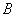
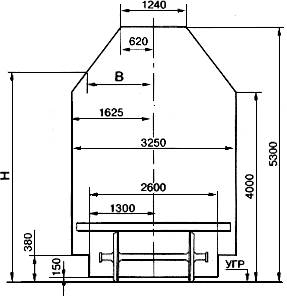
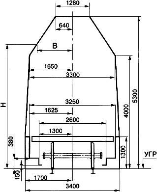
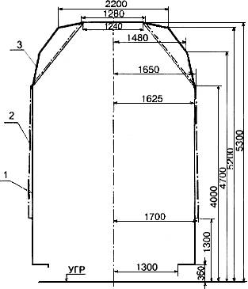

Технические условия размещения и крепления грузов в вагонах и контейнерах (Главы 1, 2, 3)
Технические
условия размещения и крепления грузов в вагонах и контейнерах (Главы 1, 2, 3)
Вид
документа:
Приказ
МПС России от 27.05.2003 N ЦМ-943
Нормативные документы, принимаемые отраслевыми министерствами
Принявший орган: МПС
России
Статус: Действующий
|
ГЛАВА 1. ТРЕБОВАНИЯ К РАЗМЕЩЕНИЮ И КРЕПЛЕНИЮ ГРУЗОВ В ВАГОНАХ И КОНТЕЙНЕРАХ |
|
|
|
|
ТЕХНИЧЕСКИЕ УСЛОВИЯ
РАЗМЕЩЕНИЯ И КРЕПЛЕНИЯ ГРУЗОВ В ВАГОНАХ И КОНТЕЙНЕРАХ
УТВЕРЖДЕНЫ МПС
России 27 мая
ТРЕБОВАНИЯ К
РАЗМЕЩЕНИЮ И КРЕПЛЕНИЮ ГРУЗОВ
В ВАГОНАХ И КОНТЕЙНЕРАХ
1.1. Настоящие
Технические условия размещения и крепления грузов в вагонах и контейнерах
(далее - ТУ) устанавливают порядок и условия размещения и крепления грузов в
универсальных четырехосных вагонах (полувагоны, платформы) и в контейнерах при
железнодорожных перевозках по территории Российской Федерации по
железнодорожным путям, имеющим ширину колеи
1.2. Размещение и крепление грузов способами, которые не предусмотрены настоящими ТУ, должны выполняться в соответствии со способами, установленными местными техническими условиями размещения и крепления грузов (далее - МТУ) согласно положениям, предусмотренным в пунктах 7.1, 7.2 настоящей главы.
Размещение и крепление грузов способами, не разработанными ТУ и МТУ, должны выполняться в соответствии со способами, установленными непредусмотренными техническими условиями (далее - НТУ) согласно положениям пункта 7.3 настоящей главы.
1.3. При наличии в настоящих ТУ особых требований в отношении отдельных грузов либо их типоразмеров, отличных от общих требований настоящей главы, необходимо руководствоваться положениями соответствующих глав настоящих ТУ.
1.4. Разработка и экспериментальная проверка способов размещения и крепления опасных грузов должны выполняться с учетом требований разделов 7 и 12 настоящей главы. При этом экспериментальная проверка способов размещения и крепления опасных грузов должна проводиться на макетах или натурных образцах с безопасными (инертными) заменителями при условии соответствия (равенства) их массы и габаритных размеров.
1.5. Размещение и крепление грузов, масса и габаритные размеры которых превышают нормы, установленные настоящей главой, следует осуществлять в соответствии с Инструкцией по перевозке негабаритных и тяжеловесных грузов на железных дорогах государств - участников СНГ, Латвийской Республики, Литовской Республики, Эстонской Республики (далее - Инструкция).
1.6. Размещение и крепление съемного навесного оборудования, закрепление поворотных выдвигающихся частей новых кранов на железнодорожном ходу, перевозимых от заводов-изготовителей, а также кранов такого типа, не бывших в употреблении, осуществляются в соответствии с Инструкцией о порядке подготовки кранов в составе поездов, утвержденной производителем таких кранов по согласованию с МПС России.
Размещение и крепление съемного навесного оборудования бывших в употреблении кранов такого типа, а также закрепление поворотных выдвигающихся частей кранов, предъявляемых к перевозке без съемного навесного оборудования, осуществляются в соответствии с НТУ, утвержденными в установленном разделом 7 настоящей главы порядке.
1.7. Размещение и крепление грузов, поступающих от железнодорожных администраций других государств, должны соответствовать действующим на железнодорожном транспорте в Российской Федерации требованиям, если иное не установлено международными соглашениями, участником которых является Российская Федерация.
2.1. Размещение на открытом железнодорожном подвижном составе грузов в зависимости от их размеров и крепления должно осуществляться в пределах габаритов погрузки. Виды габаритов погрузки и регионы их применения приведены в таблице 1 настоящей главы.
Таблица 1
|
Вид габарита погрузки |
Номер рисунка, таблицы |
Распространяется на грузы |
Применение |
|
Основной |
Рисунок 1, таблица 2 |
Все грузы |
Железнодорожный транспорт |
|
Льготный |
Рисунок 2, таблица 3 |
Грузы, размещаемые в пределах погрузочной длины платформы, полувагона |
Железнодорожный транспорт, за исключением участков: Хабаровск-1 - Амур; Кимкан - Богучан |
|
Зональный |
Рисунок 3, таблица 4 |
Лесные грузы, погруженные по ТУ, МТУ Грузы, размещаемые на основании разрешения МПС России |
Железнодорожный транспорт, за исключением участков: Белореченская - Туапсе - Веселое; Крымская - Новороссийск; Чук - Лабытнанги; Пукса - Наволок; Тигей - Ачинск |
Примечание. Зональный габарит погрузки не применяется при перевозке грузов назначением на железные дороги Азербайджана, Грузии, Армении, Украины (Львовская железная дорога).
Очертания габаритов погрузки приведены на рисунках 1-4 настоящей главы. Значения расстояния

от точек очертания габаритов до вертикальной плоскости, проходящей через ось железнодорожного пути, в зависимости от высоты
Технические характеристики полувагонов и платформ приведены в приложении N 1 к настоящей главе.

Рис.1. Очертание основного габарита погрузки

Рис.2. Очертание льготного габарита погрузки

Рис.3. Очертание зонального габарита погрузки

Рис.4. Соотношение очертаний габаритов погрузки:
1 - основной габарит погрузки; 2 - льготный габарит погрузки;
3 - зональный габарит погрузки
Таблица 2
Размеры основного габарита погрузки(в миллиметрах)
|
|
|
|
380-3999
|
1625 |
|
4000
|
1625 |
|
4010
|
1617 |
|
4020
|
1609 |
|
4030
|
1601 |
|
4040
|
1593 |
|
4050
|
1585 |
|
4060
|
1577 |
|
4070
|
1569 |
|
4080
|
1561 |
|
4090
|
1554 |
|
4100
|
1548 |
|
4110
|
1540 |
|
4120
|
1532 |
|
4130
|
1524 |
|
4140
|
1516 |
|
4150
|
1509 |
|
4160
|
1502 |
|
4170
|
1495 |
|
4180
|
1487 |
|
4190
|
1479 |
|
4200
|
1471 |
|
4210
|
1463 |
|
4220
|
1455 |
|
4230
|
1447 |
|
4240
|
1439 |
|
4250
|
1431 |
|
4260
|
1423 |
|
4270
|
1415 |
|
4280
|
1407 |
|
4290
|
1400 |
|
4300
|
1392 |
|
4310
|
1385 |
|
4320
|
1378 |
|
4330
|
1371 |
|
4340
|
1363 |
|
4350
|
1355 |
|
4360
|
1347 |
|
4370
|
1339 |
|
4380
|
1331 |
|
4390
|
1323 |
|
4400
|
1316 |
|
4410
|
1308 |
|
4420
|
1300 |
|
4430
|
1292 |
|
4440
|
1284 |
|
4450
|
1276 |
|
4460
|
1268 |
|
4470
|
1260 |
|
4480
|
1252 |
|
4490
|
1245 |
|
4500
|
1238 |
|
4510
|
1230 |
|
4520
|
1222 |
|
4530
|
1214 |
|
4540
|
1206 |
|
4550
|
1198 |
|
4560
|
1190 |
|
4570
|
1183 |
|
4580
|
1176 |
|
4590
|
1169 |
|
4600
|
1162 |
|
4610
|
1154 |
|
4620
|
1146 |
|
4630
|
1138 |
|
4640
|
1130
|
|
4650
|
1122 |
|
4660
|
1114 |
|
4670
|
1106 |
|
4680
|
1098 |
|
4690
|
1091 |
|
4700
|
1084 |
|
4710
|
1076 |
|
4720
|
1068 |
|
4730
|
1060 |
|
4740
|
1052 |
|
4750
|
1044 |
|
4760
|
1036 |
|
4770
|
1028 |
|
4780
|
1021 |
|
4790
|
1014 |
|
4800
|
1007 |
|
4810
|
999 |
|
4820
|
991 |
|
4830
|
983 |
|
4840
|
975 |
|
4850
|
967 |
|
4860
|
959 |
|
4870
|
951 |
|
4880
|
944 |
|
4890
|
937 |
|
4900
|
930 |
|
4910
|
922 |
|
4920
|
915 |
|
4930
|
908 |
|
4940
|
901 |
|
4950
|
893 |
|
4960
|
885 |
|
4970
|
877 |
|
4980
|
869 |
|
4990
|
861 |
|
5000
|
853 |
|
5010
|
845 |
|
5020
|
837 |
|
5030
|
829 |
|
5040
|
821 |
|
5050
|
813 |
|
5060
|
805 |
|
5070
|
797 |
|
5080
|
789 |
|
5090
|
782 |
|
5100
|
775 |
|
5110
|
767 |
|
5120
|
759 |
|
5130
|
751 |
|
5140
|
743 |
|
5150
|
735 |
|
5160
|
727 |
|
5170
|
719 |
|
5180
|
711 |
|
5190
|
704 |
|
5200
|
697 |
|
5210
|
689 |
|
5220
|
681 |
|
5230
|
673 |
|
5240
|
665 |
|
5250
|
657 |
|
5260
|
649 |
|
5270
|
641 |
|
5280
|
634 |
|
5290
|
627 |
|
5300
|
620 |
Таблица 3
Размеры льготного габарита погрузки(в миллиметрах)
|
|
|
|
380-1299
|
1625 |
|
1300-1400
|
1700 |
|
1452
|
1699 |
|
1504
|
1698 |
|
1556
|
1697 |
|
1608
|
1696 |
|
1660
|
1695 |
|
1712
|
1694 |
|
1764
|
1693 |
|
1816
|
1692 |
|
1868
|
1691 |
|
1920
|
1690 |
|
1972
|
1689 |
|
2024
|
1688 |
|
2076
|
1687 |
|
2128
|
1686 |
|
2180
|
1685 |
|
2232
|
1684 |
|
2284
|
1683 |
|
2336
|
1682 |
|
2388
|
1681 |
|
2440
|
1680 |
|
2492
|
1679 |
|
2544
|
1678 |
|
2596
|
1677 |
|
2648
|
1676 |
|
2700
|
1675 |
|
2752
|
1674 |
|
2804
|
1673 |
|
2856
|
1672 |
|
2908
|
1671 |
|
2960
|
1670 |
|
3012
|
1669 |
|
3064
|
1668 |
|
3116
|
1667 |
|
3168
|
1666 |
|
3220
|
1665 |
|
3272
|
1664 |
|
3324
|
1663 |
|
3376
|
1662 |
|
3428
|
1661 |
|
3480
|
1660 |
|
3532
|
1659 |
|
3584
|
1658 |
|
3636
|
1657 |
|
3688
|
1656 |
|
3740
|
1655 |
|
3790
|
1654 |
|
3844
|
1653 |
|
3896
|
1652 |
|
3948
|
1651 |
|
4000
|
1650 |
|
4010
|
1642 |
|
4020
|
1634 |
|
4030
|
1627 |
|
4040
|
1619 |
|
4050
|
1611 |
|
4060
|
1603 |
|
4070
|
1596 |
|
4080
|
1588 |
|
4090
|
1580 |
|
4100
|
1572 |
|
4110
|
1564 |
|
4120
|
1557 |
|
4130
|
1549 |
|
4140
|
1541 |
|
4150
|
1533 |
|
4160
|
1526 |
|
4170
|
1518 |
|
4180
|
1510 |
|
4190
|
1502 |
|
4200
|
1495 |
|
4210
|
1487 |
|
4220
|
1479 |
|
4230
|
1472 |
|
4240
|
1464 |
|
4250
|
1456 |
|
4260
|
1448 |
|
4270
|
1441 |
|
4280
|
1433 |
|
4290
|
1425 |
|
4300
|
1417 |
|
4310
|
1409 |
|
4320
|
1402 |
|
4330
|
1394 |
|
4340
|
1386 |
|
4350
|
1378 |
|
4360
|
1371 |
|
4370
|
1363 |
|
4380
|
1355 |
|
4390
|
1348 |
|
4400
|
1339 |
|
4410
|
1332 |
|
4420
|
1324 |
|
4430
|
1316 |
|
4440
|
1308 |
|
4450
|
1300 |
|
4460
|
1293 |
|
4470
|
1285 |
|
4480
|
1277 |
|
4490
|
1270 |
|
4500
|
1262 |
|
4510
|
1254 |
|
4520
|
1246 |
|
4530
|
1239 |
|
4540
|
1231 |
|
4550
|
1223 |
|
4560
|
1215 |
|
4570
|
1208 |
|
4580
|
1200 |
|
4590
|
1192 |
|
4600
|
1184 |
|
4610
|
1176 |
|
4620
|
1168 |
|
4630
|
1160 |
|
4640
|
1153 |
|
4650
|
1146 |
|
4660
|
1137 |
|
4670
|
1129 |
|
4680
|
1122 |
|
4690
|
1114 |
|
4700
|
1106 |
|
4710
|
1098 |
|
4720
|
1090 |
|
4730
|
1083 |
|
4740
|
1075 |
|
4750
|
1067 |
|
4760
|
1060 |
|
4770
|
1052 |
|
4780
|
1044 |
|
4790
|
1036 |
|
4800
|
1029 |
|
4810
|
1021 |
|
4820
|
1013 |
|
4830
|
1006 |
|
4840
|
998 |
|
4850
|
990 |
|
4860
|
982 |
|
4870
|
975 |
|
4880
|
967 |
|
4890
|
959 |
|
4900
|
951 |
|
4910
|
943 |
|
4920
|
936 |
|
4930
|
928 |
|
4940
|
920 |
|
4950
|
912 |
|
4960
|
905 |
|
4970
|
897 |
|
4980
|
889 |
|
4990
|
882 |
|
5000
|
873 |
|
5010
|
866 |
|
5020
|
858 |
|
5030
|
850 |
|
5040
|
842 |
|
5050
|
835 |
|
5060
|
827 |
|
5070
|
819 |
|
5080
|
811 |
|
5090
|
803 |
|
5100
|
795 |
|
5110
|
787 |
|
5120
|
779 |
|
5130
|
772 |
|
5140
|
764 |
|
5150
|
756 |
|
5160
|
748 |
|
5170
|
741 |
|
5180
|
733 |
|
5190
|
725 |
|
5200
|
717 |
|
5210
|
709 |
|
5220
|
702 |
|
5230
|
694 |
|
5240
|
686 |
|
5250
|
678 |
|
5260
|
671 |
|
5270
|
663 |
|
5280
|
655 |
|
5290
|
647 |
|
5300
|
640 |
Таблица 4
Размеры зонального габарита погрузки(в миллиметрах)
|
|
|
|
380-4000
|
1625 |
|
4010
|
1623 |
|
4020
|
1621 |
|
4030
|
1619 |
|
4040
|
1617 |
|
4050
|
1615 |
|
4060
|
1613 |
|
4070
|
1611 |
|
4080
|
1608 |
|
4090
|
1606 |
|
4100
|
1604 |
|
4110
|
1602 |
|
4120
|
1600 |
|
4130
|
1598 |
|
4140
|
1596 |
|
4150
|
1594 |
|
4160
|
1592 |
|
4170
|
1590 |
|
4180
|
1588 |
|
4190
|
1586 |
|
4200
|
1584 |
|
4210
|
1582 |
|
4220
|
1579 |
|
4230
|
1577 |
|
4240
|
1575 |
|
4250
|
1573 |
|
4260
|
1571 |
|
4270
|
1569 |
|
4280
|
1567 |
|
4290
|
1565 |
|
4300
|
1563 |
|
4310
|
1561 |
|
4320
|
1559 |
|
4330
|
1557 |
|
4340
|
1555 |
|
4350
|
1553 |
|
4360
|
1550 |
|
4370
|
1548 |
|
4380
|
1546 |
|
4390
|
1544 |
|
4400
|
1542 |
|
4410
|
1540 |
|
4420
|
1538 |
|
4430
|
1536 |
|
4440
|
1534 |
|
4450
|
1532 |
|
4460
|
1530 |
|
4470
|
1528 |
|
4480
|
1526 |
|
4490
|
1524 |
|
4500
|
1521 |
|
4510
|
1519 |
|
4520
|
1517 |
|
4530
|
1515 |
|
4540
|
1513 |
|
4550
|
1511 |
|
4560
|
1509 |
|
4570
|
1507 |
|
4580
|
1505 |
|
4590
|
1503 |
|
4600
|
1501 |
|
4610
|
1499 |
|
4620
|
1497 |
|
4630
|
1495 |
|
4640
|
1492 |
|
4650
|
1490 |
|
4660
|
1488 |
|
4670
|
1486 |
|
4680
|
1484 |
|
4690
|
1482 |
|
4700
|
1480 |
|
4710
|
1472 |
|
4720
|
1465 |
|
4730
|
1457 |
|
4740
|
1450 |
|
4750
|
1442 |
|
4760
|
1434 |
|
4770
|
1427 |
|
4780
|
1419 |
|
4790
|
1412 |
|
4800
|
1404 |
|
4810
|
1396 |
|
4820
|
1389 |
|
4830
|
1381 |
|
4840
|
1374 |
|
4850
|
1366 |
|
4860
|
1358 |
|
4870
|
1370 |
|
4880
|
1343 |
|
4890
|
1336 |
|
4900
|
1328 |
|
4910
|
1320 |
|
4920
|
1313 |
|
4930
|
1305 |
|
4940
|
1298 |
|
4950
|
1290 |
|
4960
|
1282 |
|
4970
|
1275 |
|
4980
|
1267 |
|
4990
|
1260 |
|
5000
|
1252 |
|
5010
|
1244 |
|
5020
|
1237 |
|
5030
|
1229 |
|
5040
|
1222 |
|
5050
|
1214 |
|
5060
|
1206 |
|
5070
|
1199 |
|
5080
|
1191 |
|
5090
|
1184 |
|
5100
|
1176 |
|
5110
|
1168 |
|
5120
|
1161 |
|
5130
|
1153 |
|
5140
|
1146 |
|
5150
|
1138 |
|
5160
|
1130 |
|
5170
|
1123 |
|
5180
|
1115 |
|
5190
|
1108 |
|
5200
|
1100 |
|
5210
|
1052 |
|
5220
|
1004 |
|
5230
|
956 |
|
5240
|
908 |
|
5250
|
860 |
|
5260
|
812 |
|
5270
|
764 |
|
5280
|
716 |
|
5290
|
668 |
|
5300
|
620 |
2.2. В перевозочных документах на груз, погруженный в пределах льготного или зонального габарита погрузки, должны быть сделаны отметки соответственно "Льготный габарит" или "Зональный габарит":
- в оригинале транспортной железнодорожной накладной (далее - накладная) в графе "Место для особых отметок и штемпелей" - грузоотправителем;
- в вагонном листе в графе "Место для отметок" - уполномоченным перевозчиком лицом (в случае, когда перевозчик является одновременно владельцем инфраструктуры, - уполномоченным работником железнодорожной станции отправления).
2.3. Груз, погруженный на одиночный универсальный вагон либо на сцеп из двух универсальных вагонов, является габаритным, если он ни одной своей частью, включая упаковку и крепление, не выходит за пределы основного габарита погрузки и расстояние от поперечной плоскости симметрии вагона (либо сцепа) до конца груза (с одной либо с обеих сторон), включая упаковку и крепление, не превышает значений, указанных в таблице 5 настоящей главы. Проверка габаритности груза должна производиться при условии нахождения вагона на прямом горизонтальном участке пути и совмещения продольной вертикальной плоскости симметрии вагона с осью железнодорожного пути. Для грузов, длина либо размещение которых не соответствует установленным в таблице 5 настоящей главы ограничениям, допускаемая ширина по условию вписывания в основной габарит погрузки при прохождении кривых участков пути определяется по методике, приведенной в разделе 11 настоящей главы.
Таблица 5
в миллиметрах
|
Тип вагона или сцепа |
База* |
Наибольшее расстояние от середины вагона или сцепа до конца груза |
|
|
|
вагона |
сцепа |
|
|
Платформа |
9720
|
- |
8810 |
|
|
14720
|
- |
11200 |
|
Сцеп из 2 платформ |
9720 |
14620 |
11100
|
|
Полувагон |
8650 |
- |
8225
|
________________
* Базой вагона (или сцепа) называется расстояние между направляющими сечениями, за которые принимаются:
- у одиночного вагона - расстояние между вертикальными осями подпятников тележек;
- у сцепа вагонов при размещении груза с опиранием на два вагона - расстояние между серединами опор, на которые опирается груз.
3.
Подготовка вагонов, контейнеров к погрузке
3.1. Перед
погрузкой пол вагона, опорные поверхности груза, подкладок, прокладок, упорных
и распорных брусков, а также поверхности груза в местах контакта с обвязками и
растяжками должны быть дополнительно очищены отправителем от снега, льда и
грязи. В зимнее время грузоотправитель должен посыпать пол вагона и поверхности
подкладок в местах опирания груза тонким слоем (1-
3.2. Разгрузочные люки полувагонов должны быть закрыты и заперты на запоры. Если размещение груза производится в пределах погрузочной длины и ширины кузова, торцовые борта платформ, торцовые двери полувагонов должны быть закрыты и заперты на запоры, клиновые запоры бортов платформ осажены вниз до упора, за исключением случаев, когда технология погрузки предполагает использование открытых бортов, дверей.
3.3. Перед погрузкой грузов, длина которых превышает длину пола платформы, полувагона, торцовые борта платформы должны быть откинуты на кронштейны, а двери полувагона - открыты и закреплены.
3.4. С целью исключения опирания груза на откинутые торцовые борта платформы груз должен быть размещен на подкладках.
3.5. Перед
погрузкой грузов, ширина которых превышает ширину пола платформы, все секции
продольных бортов платформы или некоторые из них должны быть грузоотправителем
открыты и закреплены за кольца, имеющиеся на продольных балках рамы платформы.
В случае отсутствия колец противоположные секции бортов должны быть
грузоотправителем скреплены увязкой из проволоки диаметром не менее
3.6. Для погрузки длинномерного груза формируется сцеп из двух и более вагонов в соответствии с требованиями раздела 11 настоящей главы.
3.7. Для предотвращения разъединения вагонов сцепа при маневровых работах в пути следования рукоятки расцепных рычагов должны быть закреплены к кронштейнам проволокой, а на боковых бортах вагонов с обеих сторон должна быть нанесена несмываемой краской надпись "Сцеп не разъединять".
3.8. Подготовка контейнеров к погрузке осуществляется в соответствии с требованиями главы 12 настоящих ТУ.
4.
Средства крепления грузов в вагонах
Для крепления грузов в вагонах применяются растяжки, обвязки, стяжки (в том числе многозвенные), увязки, деревянные стойки, бруски и щиты, упорные башмаки, "шпоры", каркасы, кассеты, пирамиды, ложементы, турникетные устройства. Средства крепления могут быть одноразового и многоразового использования (многооборотные).
Общие технические требования к многооборотным средствам крепления и порядку их эксплуатации приведены в приложении N 2 к настоящей главе. Качество и надежность многооборотных средств крепления обеспечивается стороной, осуществляющей отправку груза (грузоотправителем). При оформлении перевозочных документов железнодорожная станция может запросить у грузоотправителя акт периодического освидетельствования многооборотного крепежного устройства, подтверждающий его пригодность к использованию.
При установке элементов крепления и крепежных устройств используются стандартные крепежные изделия, например болты, шпильки, гвозди, строительные скобы.
4.1. Растяжка - средство крепления, закрепляемое одним концом за увязочное устройство на грузе, другим - за специально предназначенное для этого увязочное устройство на кузове вагона. Обвязка - средство крепления, охватывающее груз и закрепляемое обоими концами за увязочные устройства на кузове вагона. Стяжка - средство крепления, предназначенное для соединения между собой и натяжения других средств крепления (как правило, растяжек, обвязок, стоек). Увязка - средство крепления, предназначенное для объединения отдельных единиц груза в одно грузовое место.
4.2. Для изготовления растяжек, обвязок, стяжек, увязок используют следующие материалы:
- стальную проволоку по ГОСТ 3282 в термообработанном (отжиг) состоянии, круглого сечения (ГОСТ 2590), квадратного сечения (ГОСТ 2591);
- прокат или полосу стали (ГОСТ 103);
- стальные цепи, тросы.
4.3. Использование для изготовления растяжек, обвязок, стяжек, увязок иных материалов допускается по согласованию с МПС России при условии подтверждения их надежности в порядке, предусмотренном для разработки ТУ и МТУ (раздел 7 настоящей главы).
Диаметр сечения
круглого проката должен быть не менее  . На поверхности
проката не должно быть механических повреждений, трещин, перекруток,
расслоений, задиров.
. На поверхности
проката не должно быть механических повреждений, трещин, перекруток,
расслоений, задиров.
4.4. Для крепления растяжек и обвязок в вагонах используются:
- на платформах (рис.5 настоящей главы): боковые и торцовые стоечные скобы; опорные кронштейны на концевой балке; напольные увязочные устройства (при наличии); боковые скобы на платформах для крупнотоннажных контейнеров и колесной техники;
- в полувагонах
(рис.6 настоящей главы): нижние увязочные устройства (косынки); средние
увязочные устройства, находящиеся на стойках боковых стен на высоте 1100-

Рис.5. Увязочные устройства универсальной платформы

Рис.6. Увязочные устройства универсального полувагона:
а - с торцовыми дверями; б - с торцовыми стенами
4.4.1. Не допускается крепление растяжек и обвязок к другим деталям кузова вагона, в том числе к скобам, предназначенным для крепления стоек внутри кузова вагона, к увязочным кольцам, расположенным на верхней обвязке полувагона, а также к кольцам на наружной поверхности секций бортов платформ.
4.4.2. Допускается использовать составные (из нескольких составных частей) проволочные, полосовые или комбинированные растяжки и обвязки. Прочность соединительных элементов таких растяжек и обвязок должна быть не ниже прочности составных частей растяжки, обвязки.
4.4.3. Допускается концы растяжек, выполненных из цельного стального стержня и полосы, крепить к грузу при помощи сварки или болтовых соединений. Надежность таких соединений обеспечивается грузоотправителем.
4.4.4. Обвязки на платформах закрепляют за две противоположные стоечные скобы.
4.5. Растяжки, обвязки формируют на вагоне следующими способами.
4.5.1. Способ
1. Растяжка, обвязка выполняется из одной непрерывной нити проволоки. Один
конец проволоки (рис.7 настоящей главы) обводят два раза вокруг увязочного
устройства вагона (груза) и закручивают не менее двух раз вокруг нити. Другой
конец проволоки пропускают через увязочные устройства последовательно на грузе
и вагоне, формируя растяжку, обвязку с необходимым числом нитей. Конец
проволоки заделывают на увязочном устройстве вагона (или груза) порядком,
указанным выше, обводя его вокруг половинного количества нитей растяжки, обвязки.
Концы проволоки для заделки должны быть длиной не менее

Рис.7. Установка растяжек по способу 1
4.5.2. Способ 2. Растяжка, обвязка изготавливается из одной непрерывной нити проволоки. Нить пропускают через увязочное устройство вагона (груза) и перегибают на нем, образовывая прядь из двух равных по длине нитей (рис.8 настоящей главы). Далее прядь заводят в увязочные устройства последовательно груза и вагона, формируя растяжку, обвязку с необходимым числом нитей. Конец пряди обводят два раза вокруг увязочного устройства вагона (груза), затем концы проволоки - по отдельности вокруг половинного количества нитей растяжки, обвязки. Требования к заделке концов и скручиванию растяжки, обвязки аналогичны способу 1.
Рис.8. Установка растяжек, обвязок по способу 2
4.5.3. Способ
3. Растяжку, обвязку формируют из пряди, состоящей из двух непрерывных
нитей проволоки (рис.9 настоящей главы). Прядь пропускают через увязочное
устройство вагона (груза) и перегибают, оставляя концы для заделки длиной не
менее

Рис.9. Установка растяжек, обвязок по способу 3
4.5.4. Установка проволочных растяжек, обвязок способами, отличными от описанных в подпунктах 4.5.1-4.5.3 настоящей главы, допускается по согласованию с МПС России при условии подтверждения их надежности в порядке, предусмотренном для разработки МТУ в разделе 7 настоящей главы.
4.6. Скручивание растяжки, стяжки, обвязки между грузом и увязочным устройством вагона должно быть равномерным по всей длине.
Допускается при
длине растяжки, стяжки, ветвей обвязки более
Обвязки необходимо скручивать не менее чем в двух местах - на противоположных ветвях.
В растяжках,
обвязках, имеющих перегибы ветвей на грузе, необходимо дополнительно скручивать
участки между перегибами длиной более

Рис.10
При скручивании приспособление для скручивания должно устанавливаться в середине скручиваемого участка (между увязочным устройством вагона и груза, между увязочным устройством вагона и перегибом на грузе, местами перегиба на грузе).
4.7. При расчете растяжек, обвязок, стяжек, увязок число нитей проволоки и, соответственно, рабочее сечение и несущая способность определяются без учета концов заделки (рис.11 настоящей главы). Число нитей в этих средствах крепления должно быть четным.
Рис.11. Определение количества нитей проволоки в растяжках, обвязках, стяжках
4.8.
Не допускается формировать на вагоне растяжки, обвязки, увязки, стяжки числом
нитей более 8 при диаметре проволоки  6 мм.
6 мм.
4.9. Не допускается касание между собой растяжек, обвязок при закреплении груза, имеющего возможность упругих колебаний относительно вагона, например обрессоренного.
4.10. Растяжки, обвязки, выполненные из прутка или из полосовой стали с натяжными устройствами, не должны касаться закрытого борта платформы. Если при закрытом борте этого избежать невозможно, борт должен быть опущен.
4.11. Не допускается опирание растяжек, обвязок из проволоки на борт платформы, если угол между растяжкой и вертикальной плоскостью в точке касания с бортом платформы составляет более 15° (рис.12а настоящей главы). При невозможности выполнить это условие растяжки и обвязки пропускают под боковыми бортами (рис.12б настоящей главы) или борта платформы должны быть опущены (рис.12в настоящей главы).
Рис.12. Допускаемые положения проволочных растяжек, обвязок относительно бортов платформы
4.12. Растяжки следует располагать таким образом, чтобы угол между растяжкой и полом и угол между проекцией растяжки на пол вагона и продольной осью вагона составляли не более 45° (рис.13 настоящей главы).

Рис.13
В случаях, когда из-за конструктивных особенностей груза либо условий его размещения такая установка растяжек невозможна, допускается увеличение углов наклона растяжек с одновременным увеличением числа нитей проволоки в растяжках в соответствии с таблицей 6 настоящей главы.
4.13. Допускается применение проволочных средств крепления с заменой проволоки предусмотренного диаметра проволокой другого диаметра при условии обеспечения равнопрочности элемента крепления. В таких случаях параметры средства крепления должны определяться в соответствии с таблицами 6 и 21 настоящей главы, с учетом требований пунктов 4.7 и 4.8 настоящей главы.
Таблица 6
Увеличение числа нитей в растяжках из
проволоки диаметром
при увеличении угла наклона растяжек
|
Величина угла между проекцией растяжки на пол вагона и продольной осью вагона, ° |
Число нитей растяжки |
|||||||
|
|
Угол между проекцией растяжки на пол вагона и растяжкой, °
|
|||||||
|
|
|
46-50 |
51-55 |
56-60 |
61-65 |
66-70 |
71-75 |
76-80 |
|
|
2/2 |
4/2 |
4/2 |
4/4 |
4/4 |
6/4 |
6/6 |
8/6 |
|
46-50
|
4/2 |
4/2 |
4/2 |
4/4 |
4/4 |
6/4 |
6/6 |
-/8 |
|
51-55
|
4/2 |
4/2 |
4/4 |
4/4 |
6/4 |
6/4 |
8/6 |
-/8 |
|
56-60
|
4/4 |
4/4 |
4/4 |
4/4 |
6/4 |
6/6 |
8/6 |
- |
|
61-65
|
4/4 |
4/4 |
6/4 |
6/4 |
6/4 |
8/6 |
-/8 |
- |
|
66-70
|
6/4 |
6/4 |
6/4 |
6/6 |
8/6 |
-/8 |
- |
- |
|
71-75
|
6/6 |
6/6 |
8/6 |
8/6 |
-/8 |
- |
- |
- |
|
76-80
|
8/6 |
-/8 |
-/8 |
- |
- |
- |
- |
- |
Примечания. 1. Дробные значения угла округляются до ближайшего большего целого значения.
2. В числителе -
число нитей проволоки диаметром
4.14. Стяжку (рис.14 настоящей главы) формируют из непрерывной нити проволоки. Прочность стяжки должна быть не менее прочности соединяемых составных частей элемента крепления.
Рис.14. Способ заделки концов проволоки в стяжке
4.15. Увязку формируют из непрерывной нити проволоки. Количество нитей проволоки в увязке определяют расчетным или экспериментальным путем. Скручивание нитей проволоки в увязке производят не менее чем в двух местах до натяжения, не допуская раскручивания скрученного ранее участка. Способ заделки концов проволоки в увязках аналогичен способу заделки концов проволоки в стяжках.
4.16. Подкладки и прокладки изготавливаются из пиломатериалов не ниже третьего сорта в соответствии с ГОСТ 8486 и ГОСТ 2695. Применение березы, осины, липы и ольхи допускается только для изготовления подкладок и прокладок, работающих только на сжатие, к которым не крепятся упорные, распорные бруски и другие элементы крепления. Не допускается применение этих пород древесины, а также сухостойной древесины всех пород для изготовления упорных и распорных брусков.
Допускается изготовление подкладок и прокладок из металла различных профилей, железобетона и других материалов, если это не приводит к повреждению груза.
Подкладки и прокладки применяют для увеличения площади опирания груза на пол вагона, предохранения штабеля груза от развала, обеспечения возможности механизированной погрузки и выгрузки грузов, предохранения опорной поверхности груза и (или) вагона от повреждения, а также для крепления распорных и упорных брусков. В случаях, когда указанные условия обеспечиваются без применения прокладок, их установка не обязательна.
Высота
подкладок, прокладок должна быть не менее
Допускается
подкладки и прокладки изготавливать составными: по высоте, ширине - из двух
частей, по длине - из нескольких частей (рис.15 настоящей главы). Стыкование
подкладок по длине допускается только на хребтовой балке (для поперечных
подкладок) либо на поперечных балках (для продольных подкладок). Толщина
составных частей подкладок, прокладок в месте соединения должна быть не менее

Рис.15. Способы изготовления составных подкладок, прокладок
Высота составных частей подкладок и прокладок, составных по ширине и по длине, должна быть одинаковой по всей длине.
В случаях, когда способ размещения и крепления груза предусматривает крепление подкладок к полу вагона, крепление частей подкладок должно производиться в следующем порядке:
Подкладки, составные по высоте. Нижнюю часть подкладки прибивают к полу необходимым количеством гвоздей, аналогичным образом прибивают верхнюю часть к нижней. Допускается части подкладки прибивать к полу необходимым количеством гвоздей, проходящих через обе части подкладки.
Подкладки, составные по ширине и составные по длине. Составные части соединяют между собой гвоздями, болтами, скобами в количестве, обеспечивающем их неподвижность друг относительно друга при укладке на вагоне. Каждую часть подкладки прибивают к полу гвоздями, количество которых должно составлять не менее 75% количества, необходимого для крепления подкладки.
4.17. Стойки
деревянные окоренные и неокоренные, применяемые для бокового и торцового
ограждений штабельных грузов, изготавливают из круглых лесоматериалов либо из
пиломатериалов с прямыми волокнами в соответствии с ГОСТ 8486 и ГОСТ 2695.
Толщина стоек из круглого лесоматериала должна быть 120-
Толщина стоек,
устанавливаемых в полувагон, должна быть не менее
Способ 1.
Стойку устанавливают на пол полувагона, пропуская ее через лесную скобу, и
крепят к нижнему увязочному устройству увязкой из проволоки диаметром не менее

Рис.16. Установка боковых стоек в полувагоне
Способ 2.
Стойку устанавливают на пол полувагона вплотную к лесной скобе и нижнему
увязочному устройству и крепят к ним увязками из проволоки диаметром не менее
Способ 3.
В полувагонах, оборудованных лесными скобами, развернутыми под углом 30°,
стойку в наклонном положении вставляют в лесную скобу и устанавливают
вертикально; нижний конец стойки устанавливают вплотную к нижнему увязочному
устройству и крепят к нему увязкой из проволоки диаметром не менее
Высота боковых стоек над уровнем верхнего обвязочного бруса полувагона должна быть не более:
а) при погрузке в пределах основного габарита погрузки:
-
-
б) при погрузке в пределах зонального габарита погрузки:
-
-
На
железнодорожных платформах стойки устанавливают в предназначенные для этого
боковые и торцовые стоечные скобы. Стойки из круглых лесоматериалов
устанавливают комлем вниз. Нижний конец стойки должен быть затесан по
внутренним размерам скобы. Стойка должна выступать за нижнюю кромку скобы на
100-
Рис.17. Крепление стойки в стоечной скобе платформы
Короткие стойки
устанавливают для увеличения несущей способности бортов платформы. Высота
коротких стоек от уровня пола платформы должна быть больше высоты
подкрепляемого борта не менее чем на
Для увеличения несущей способности крепления противоположные стойки соединяют стяжками в верхней, а при необходимости - в верхней и средней по высоте частях (рис.18 настоящей главы).
Рис.18. Скрепление стоек на платформе
Скрепление
коротких стоек и верхнее скрепление высоких стоек должно быть выполнено таким
образом, чтобы расстояние от стяжки до поверхности груза составляло 50-
4.18. Упорные и распорные бруски, распорные рамы применяют для закрепления грузов от поступательных перемещений вдоль и поперек вагона, а также для передачи инерционных усилий от груза на элементы кузова вагона (боковые и торцовые борта платформ, торцовый порожек, угловые стойки, нижние обвязки кузова полувагона).
Бруски должны быть изготовлены из пиломатериалов хвойных пород не ниже третьего сорта в соответствии с ГОСТ 8486. Допускается использование в качестве упорных и распорных брусков и рам изделий из других материалов, прочность которых подтверждена соответствующими нормативными документами (ГОСТ, ТУ). Параметры деревянных брусков и рам принимаются в соответствии с нормативами настоящей главы; параметры брусков и рам из других материалов должны определяться расчетным путем с последующей экспериментальной проверкой.
Деревянные элементы распорных рам соединяют гвоздями, строительными скобами, накладками, другими крепежными изделиями.
Высота упорных и
распорных брусков должна быть не менее

Рис.19. Типовые схемы установки распорных и упорных брусков:
1 - распорный брусок; 2 - упорный брусок
4.19. Для крепления деревянных подкладок, упорных, распорных брусков и рам к деревянному настилу пола вагона, к закрепляемому грузу, а также для соединения между собой деревянных элементов крепления применяют гвозди по ГОСТ 283, размеры которых приведены в таблице 7 настоящей главы.
Таблица 7
Допускаемые размеры применяемых гвоздей
|
Диаметр гвоздя, мм
|
Длина гвоздя, мм |
Диаметр шляпки гвоздя, мм |
|
4,0
|
100...120 |
7,5 |
|
5,0
|
120...150 |
9,0 |
|
6,0
|
150...200 |
11,0 |
|
8,0
|
250 |
14,0 |
Допускается замена гвоздей одного диаметра соответствующим количеством гвоздей другого диаметра (таблица 8 настоящей главы) при условии соблюдения требований к их длине.
Таблица 8
Взаимозаменяемость гвоздей различных диаметров
|
|
Диаметр гвоздя, мм
|
|||
|
|
6,0
|
4,0 |
5,0 |
8,0 |
|
Эквивалентное количество гвоздей в зависимости от их диаметра |
2
|
5 |
3 |
2 |
|
|
3
|
7 |
5 |
2 |
|
|
4
|
9 |
6 |
3 |
|
|
5
|
12 |
8 |
3 |
|
|
6
|
14 |
9 |
4 |
|
|
7
|
16 |
10 |
4 |
|
|
8
|
18 |
12 |
5 |
|
|
9
|
20 |
13 |
5 |
|
|
10
|
23 |
15 |
6 |
Схемы размещения гвоздей при креплении деревянных элементов крепления к полу вагона приведены на рисунке 20 настоящей главы.
Рис.20. Схемы размещения гвоздей
Минимально допускаемые расстояния между гвоздями, а также между гвоздями и кромками элементов в зависимости от толщины элементов приведены в таблице 9 настоящей главы.
Таблица 9
|
Обозначение расстояния (рис.20 настоящей главы)
|
Минимальные допускаемые расстояния в зависимости от толщины элемента, мм |
|
|
|
|
>50 |
|
|
125
|
90 |
|
|
30
|
30 |
|
|
30
|
30 |
|
|
90
|
90 |
Общее количество гвоздей для крепления средств крепления (либо их частей) к полу вагона определяется в соответствии с разделом 10 настоящей главы.
При закреплении
средств крепления (либо их частей) к полу вагона гвозди должны быть забиты
перпендикулярно полу вагона. Изгиб стержня гвоздя не допускается. Длина гвоздей
должна быть на 50-
Не допускается образование трещин в элементах крепления при прибивании их гвоздями. В необходимых случаях перед забивкой гвоздей под них должны быть просверлены отверстия.
Гвозди, забитые в щели между досками пола платформы, не учитываются в общем количестве используемых для крепления гвоздей.
4.20. Допускается использование металлических скоб и костылей для крепления груза к деревянным элементам крепления и соединения этих элементов между собой, если это не приводит к образованию в них трещин.
4.21. Усилия затяжки болтов, шпилек, винтов, используемых для крепления грузов, должны рассчитываться с учетом возможности одновременного приложения растягивающих и изгибающих нагрузок.
Для предотвращения ослабления резьбовых соединений должны применяться стопорные шайбы, контргайки, шплинты, сварка или расклепка резьбы.
4.22. Допускается для соединения деталей крепления между собой и с грузом применять электросварку. Надежность сварных соединений обеспечивается грузоотправителем. При выполнении сварочных работ должны быть обеспечены меры безопасности, предусмотренные соответствующими правилами и инструкциями. Средство крепления (груз), на котором выполняется сварка, должно быть заземлено отдельным проводом. При этом не допускается использовать элементы конструкции вагона в качестве заземляющего устройства.
5.
Подготовка грузов к перевозке, требования к погрузке и выгрузке
5.1. Предъявляемый к перевозке груз должен быть подготовлен таким образом, чтобы в процессе перевозки были обеспечены безопасность движения поездов, сохранность груза, вагонов и контейнеров. С этой целью грузоотправителем должны быть обеспечены:
- прочность узлов и деталей груза, предназначенных для установки средств крепления. При необходимости груз должен быть оборудован приспособлениями для его крепления;
- надежное закрепление груза внутри упаковки;
- подготовка автотракторной техники и сельскохозяйственных машин к перевозке в порядке, установленном соответствующими правилами перевозок железнодорожным транспортом;
- перед погрузкой грузов, содержащих мелкие фракции, дополнительные меры по уплотнению зазоров кузова вагона; поверхность груза после погрузки на открытый подвижной состав должна быть разровнена, а при необходимости и уплотнена.
5.2. В целях обеспечения сохранности вагонного парка грузоотправители и грузополучатели должны соблюдать требования ГОСТ 22235, в том числе:
- навалочные
грузы, разгрузка которых предусматривается через разгрузочные люки полувагона,
должны иметь размер отдельных кусков в любом измерении не более
- перед погрузкой или выгрузкой путем бокового заезда или съезда груза борта платформы должны быть опущены, а после окончания погрузки или выгрузки - подняты и закреплены клиновыми запорами;
- при погрузке и выгрузке автомобилей, тракторов и других колесных и тяжеловесных грузов должны применяться переходные мостики и другие приспособления, предохраняющие от повреждения борта платформ;
- при погрузке или выгрузке груза накатом с использованием слег они должны опираться на пол платформы или верхнюю обвязку кузова полувагона.
5.3. При погрузочно-выгрузочных операциях не допускается:
- открывать и закрывать разгрузочные люки полувагонов с использованием тракторов, погрузчиков, лебедок, кранов и другой техники, не согласованной федеральным органом исполнительной власти на железнодорожном транспорте для выполнения данных операций;
- выполнять на полу платформ разворот самоходом технических средств на гусеничном ходу без предварительной защиты пола от повреждения;
- опускать грейферы с ударом о пол вагонов;
- производить погрузку металлопродукции кранами, оборудованными магнитными шайбами, путем сбрасывания груза;
- производить выгрузку грузов из вагонов грейферами, имеющими зубья;
- использовать боковые борта платформ для погрузки и выгрузки грузов;
- задевать грейфером борта платформ, стены и двери полувагонов;
- при выгрузке с помощью лебедки опирать трос на борта платформ и верхнюю обвязку полувагона;
- производить выгрузку смерзшихся грузов путем проталкивания их в проемы люков грейферами, другими грузозахватными устройствами, применять для рыхления груза металлические болванки, взрывные устройства, а также применять для оттаивания груза открытое пламя при возможности касания деталей вагона;
- производить погрузку грузов, имеющих температуру выше +100 °С;
- производить погрузку и выгрузку сыпучих грузов гидравлическим способом;
- производить погрузку железобетонных плит ранее технологического срока выдержки их после изготовления;
- размещать железобетонные плиты, конструкции и другие подобные грузы в наклонном положении с опорой на боковые стены кузова полувагона либо борта платформы, кроме случаев, предусмотренных настоящими ТУ;
- производить крепление грузов к металлическим частям вагона с помощью сварки и сверления;
- демонтировать детали вагонов, в том числе борта платформ и двери полувагонов;
- производить выгрузку с платформ навалочных грузов машинами на гусеничном ходу с заездом на настил ее пола, сгребать ковшом экскаватора, а также волочить тяжеловесный груз по полу платформы.
5.4. При
погрузке навалочных грузов массой отдельных кусков не более
5.5. После выгрузки грузов вагоны, контейнеры должны быть очищены внутри и снаружи, с них должны быть сняты элементы крепления грузов, за исключением несъемных. В случаях необходимости должна быть снята проволока с рукояток расцепных рычагов автосцепки, с запоров крышек разгрузочных люков, торцовых дверей полувагонов и бортовых запоров платформ; борта платформ, двери и крышки люков полувагонов - закрыты. Многооборотные инвентарные приспособления для крепления, в том числе турникеты, должны быть подготовлены к погрузке в соответствии с требованиями, предъявляемыми к подготовке грузов к перевозке.
6.
Размещение грузов в вагонах
6.1. Масса размещаемого в вагоне груза с учетом массы элементов его крепления не должна превышать трафаретной грузоподъемности вагона.
6.2. Выход в
продольном направлении крайней точки груза за пределы концевой балки кузова
вагона должен быть не более
6.3. При размещении грузов общий центр тяжести грузов () должен располагаться на линии пересечения продольной и поперечной плоскостей симметрии вагона. В исключительных случаях, когда данное требование невыполнимо по объективным причинам (геометрические параметры груза, условия крепления), допускается смещение относительно плоскостей симметрии.
6.3.1.
Допускаемая величина смещения в
продольном направлении  (относительно
поперечной плоскости симметрии вагона) в зависимости от общей массы груза в
вагоне определяется в соответствии с таблицей 10 настоящей главы.
(относительно
поперечной плоскости симметрии вагона) в зависимости от общей массы груза в
вагоне определяется в соответствии с таблицей 10 настоящей главы.
Таблица 10
Допускаемое продольное смещение общего центра тяжести груза в вагоне
(в миллиметрах)
|
Масса груза, т |
|
|
|
3000 |
|
15
|
2480 |
|
20
|
2230 |
|
25
|
2070 |
|
30
|
1970 |
|
35
|
1890 |
|
40
|
1840 |
|
45 |
1800
|
|
50
|
1700 |
|
55
|
1330 |
|
60
|
860 |
|
62
|
690 |
|
67
|
300 |
|
70
|
110 |
|
>70
|
100 |
Примечание. Для промежуточных значений массы груза допускаемое продольное смещение следует определять методом линейной интерполяции (подпункт 6.3.4 настоящей главы).
6.3.2.
Допускаемая величина смещения в
поперечном направлении  (относительно
продольной плоскости симметрии вагона) в зависимости от общей массы груза в
вагоне и высоты общего центра тяжести вагона с грузом над уровнем
головок рельсов определяется в соответствии с таблицей 11 настоящей главы.
(относительно
продольной плоскости симметрии вагона) в зависимости от общей массы груза в
вагоне и высоты общего центра тяжести вагона с грузом над уровнем
головок рельсов определяется в соответствии с таблицей 11 настоящей главы.
Таблица 11
Допускаемое поперечное смещение общего центра тяжести груза в вагоне
(в миллиметрах)
|
Масса груза, т |
Высота общего центра тяжести вагона с грузом над УГР, мм
|
|
|
|
|
620 |
|
|
1500
|
550 |
|
|
2000
|
410 |
|
30 |
|
550 |
|
|
1500
|
450 |
|
|
2000
|
350 |
|
|
2300
|
290
|
|
50 |
|
350 |
|
|
1500
|
280 |
|
|
2000
|
250 |
|
|
2300
|
200 |
|
55 |
|
220 |
|
|
2000
|
170 |
|
|
2300
|
150 |
|
67 |
|
180 |
|
|
2000
|
140 |
|
|
2300
|
120 |
|
>67 |
|
100 |
Примечание. Для промежуточных значений массы груза допускаемое поперечное смещение следует определять методом линейной интерполяции (подпункт 6.3.4 настоящей главы).
6.3.3. Контроль
положения (рис.21
настоящей главы) должен выполняться путем расчета величин  и
и  по
формулам:
по
формулам:
 ,
(1)
,
(1)
 ,
(2)
,
(2)
где:  ,
,  ┘
┘  - массы
грузов, т;
- массы
грузов, т;
 и
и  - длина и
ширина кузова вагона, мм;
- длина и
ширина кузова вагона, мм;
 ,
,  ...
...  , ,
, ,  ....
....  -
координаты центров тяжести грузов относительно соответственно торцового и
продольного бортов, мм.
-
координаты центров тяжести грузов относительно соответственно торцового и
продольного бортов, мм.
Рис.21. Расчетная схема определения продольного
и поперечного смещений общего центра тяжести грузов в вагоне
6.3.4. Пример применения метода линейной интерполяции.
Определить
допускаемые значения продольного и поперечного смещений общего центра тяжести
груза массой  =33 т при высоте
общего центра тяжести вагона с грузом над УГР равной
=33 т при высоте
общего центра тяжести вагона с грузом над УГР равной
Определение допускаемого значения продольного смещения.
 мм,
мм,
где  ,
,  - табличные
значения допускаемого продольного смещения для соответствующих значений массы
груза.
- табличные
значения допускаемого продольного смещения для соответствующих значений массы
груза.
Определение допускаемого значения поперечного смещения.
Определяем
значение поперечного смещения при  =1200 мм.
=1200 мм.
мм.
Определяем
значение поперечного смещения при  =1500 мм.
=1500 мм.
мм.
Определяем
значение поперечного смещения при  =1400 мм.
=1400 мм.
 мм,
мм,
где  ,
,  ,
,  ,
,  - табличные
значения допускаемого поперечного смещения для соответствующих значений массы
груза при соответствующих табличных значениях высоты расположения центра
тяжести.
- табличные
значения допускаемого поперечного смещения для соответствующих значений массы
груза при соответствующих табличных значениях высоты расположения центра
тяжести.
6.3.5. Допускается с целью соблюдения требований о положении общего центра тяжести грузов балластировка вагона. Расчет потребной массы и расположения балластирующего груза выполняется на основе формул (1) и (2) настоящей главы.
6.3.6. При кососимметричном расположении двух мест груза (рис.22 настоящей главы) должны быть выполнены следующие условия:
- массы обоих мест груза должны быть равны;
- высота общего
центра тяжести вагона с грузом над УГР
должна быть не более
- расстояния
между центрами тяжести мест груза  и
и  в
продольном и поперечном направлениях должны быть не более допускаемых величин,
которые рассчитываются по таблице 12 настоящей главы в зависимости от общей
массы грузов;
в
продольном и поперечном направлениях должны быть не более допускаемых величин,
которые рассчитываются по таблице 12 настоящей главы в зависимости от общей
массы грузов;
- должен находиться на пересечении продольной и поперечной плоскостей симметрии вагона.

Рис.22.
Кососимметричное размещение грузов в вагоне:  ,
,  - центры
тяжести грузов;
- центры
тяжести грузов;
- общий центр тяжести вагона с грузом
Для промежуточных значений общей массы груза допускаемые расстояния определяют методом линейной интерполяции.
Таблица 12
Максимальные допускаемые расстояния между
центрами тяжести грузов
с кососимметричным размещением их в вагоне
|
Общая масса двух грузов, т
|
, мм |
|
|
|
8000 |
1250 |
|
30
|
7000 |
900 |
|
40
|
6000 |
750 |
|
50
|
6000 |
600 |
|
55
|
6000 |
500 |
|
67
|
5000 |
400 |
|
72
|
4500 |
350 |
Примечание. Для промежуточных значений общей массы груза допускаемые расстояния определяются методом линейной интерполяции.
6.4. При
размещении на платформе груза на двух подкладках, уложенных поперек ее рамы
симметрично относительно поперечной плоскости симметрии платформы, расположение
подкладок определяется в зависимости от нагрузки на подкладку и ширины  распределения
нагрузки.
распределения
нагрузки.
Ширина  распределения
нагрузки на раму платформы:
распределения
нагрузки на раму платформы:
,
где:  - ширина
груза в месте опирания, мм;
- ширина
груза в месте опирания, мм;
 - высота
подкладки, мм.
- высота
подкладки, мм.
6.4.1. Если подкладки расположены в пределах базы платформы (рис.23 настоящей главы), минимальное допускаемое расстояние между продольной осью подкладки и поперечной плоскостью симметрии платформы определяется в соответствии с таблицей 13 настоящей главы.

Рис.23. Размещение груза на двух подкладках в пределах базы платформы
Таблица 13
Расположение подкладок, находящихся в пределах базы платформы
|
Нагрузка на одну подкладку, тс |
Минимальное
допускаемое расстояние (мм) при
ширине
|
||
|
|
880 |
1780 |
2700 |
|
20
|
550 |
325 |
0 |
|
22
|
950 |
750 |
500 |
|
25
|
1200 |
1100 |
900 |
|
27
|
1425 |
1350 |
1200 |
|
30
|
1675 |
1600 |
1450 |
|
33
|
2075 |
1885 |
1850 |
|
36
|
3100 |
2900 |
2400 |
6.4.2. Если подкладки расположены за пределами базы платформы (рис.24 настоящей главы), максимальное допускаемое расстояние между продольной осью подкладки и поперечной плоскостью симметрии платформы определяется в соответствии с таблицей 14 настоящей главы.

Рис.24. Размещение груза на двух подкладках за пределами базы платформы
Таблица 14
Размещение подкладок, находящихся за пределами базы платформы
|
Нагрузка на одну подкладку, тс |
Максимальное
допускаемое расстояние (мм) при
ширине
|
||
|
|
880
|
1780 |
2700 |
|
12,5 |
6250
|
6350 |
6400 |
|
15,0 |
6000
|
6050 |
6150 |
|
20,0 |
5600
|
5650 |
5750 |
|
25,0 |
5400
|
5450 |
5550 |
|
30,0 |
5370
|
5420 |
5520 |
|
33,0 |
5350
|
5400 |
5500 |
|
36,0 |
5330
|
5380 |
5500 |
Для промежуточных значений нагрузки на одну подкладку максимальные расстояния определяют методом линейной интерполяции.
6.5. При несимметричном расположении центра тяжести груза либо подкладок относительно поперечной плоскости симметрии платформы, а также при опирании груза на три и более подкладки должен быть выполнен поверочный расчет изгибающего момента в раме платформы. Схемы нагружения рам вагонов и формулы для определения максимальных изгибающих моментов () приведены на рисунке 25 настоящей главы.

Рис.25
- наибольшее значение изгибающего момента, возникающего в раме, тс/м;
 -
сосредоточенная нагрузка, тс;
-
сосредоточенная нагрузка, тс;  -
распределенная нагрузка, тс/м;
-
распределенная нагрузка, тс/м;
 - длина
распределения нагрузки, м;
- длина
распределения нагрузки, м;  - база
вагона, м
- база
вагона, м
Максимальные
допускаемые значения изгибающего момента  в рамах
четырехосных полувагонов и платформ приведены в таблице 15 настоящей главы.
в рамах
четырехосных полувагонов и платформ приведены в таблице 15 настоящей главы.
Таблица 15
|
|
|
||
|
|
платформ |
полувагонов в зависимости от года постройки
|
|
|
|
|
до 1 января
|
после 1 января |
|
880
|
91 |
40 |
46 |
|
1780
|
99 |
44 |
50,6 |
|
2700
|
110 |
50 |
57,5 |
________________
* Значения  в рамах
полувагонов применимы только при передаче нагрузки через поперечные балки.
в рамах
полувагонов применимы только при передаче нагрузки через поперечные балки.
Максимальные допускаемые нагрузки на поперечные балки четырехосных полувагонов приведены в таблице 16 настоящей главы.
Таблица 16
|
Период постройки полувагона |
Допускаемая нагрузка на одну поперечную балку полувагона, тс
|
|||||||||||
|
|
среднюю
|
промежуточную |
шкворневую |
концевую |
||||||||
|
|
при ширине распределения нагрузки, мм
|
|||||||||||
|
|
1400
|
2100 |
2700 |
1400 |
2100 |
2700 |
1400 |
2100 |
2700 |
1400 |
2100 |
2700 |
|
До 1 января
|
14,3 |
15,0 |
16,1 |
23,5 |
25,7 |
29,0 |
0,5Q* |
0,5Q |
0,5Q |
11,4 |
13,2 |
14,0 |
|
После 1 января
|
17,5 |
18,7 |
20,7 |
24,3 |
27,3 |
31,0 |
0,5Q |
0,5Q |
0,5Q |
22,0 |
24,1 |
26,3 |
________________
* Q - грузоподъемность полувагона, т.
6.6. При размещении груза в полувагоне допускаются следующие схемы приложения нагрузки и соответствующие величины нагрузки на поверхность крышки люка.
Местное
приложение нагрузки: удельная нагрузка на участок поверхности люка размером до
25x25 см должна быть не
более 3,68 кгс/см
должна быть не
более 3,68 кгс/см .
.
Нагрузка, равномерно распределенная по всей поверхности люка: суммарная нагрузка на люк должна быть не более 6 тс.
Нагрузка,
передаваемая через подкладки: при размещении груза на двух подкладках длиной не
менее
Рис.26. Размещение подкладок на одном люке полувагона
При размещении груза на подкладках, расположенных поперек рамы вагона на двух люках между гофрами с одновременным опиранием на хребтовую балку и на полки продольных угольников нижней обвязки полувагона (рис.27 настоящей главы) суммарная нагрузка, передаваемая через одну подкладку на пару люков, не должна превышать 8,3 тс. Допускается на одной паре люков устанавливать несколько таких подкладок, при этом суммарная нагрузка на подкладки не должна превышать 12 тс.
Рис.27. Размещение подкладок на паре люков полувагона
7.
Порядок разработки, утверждения и внесения изменений в ТУ, МТУ, НТУ
7.1. Разработка, утверждение ТУ и внесение в них изменений осуществляется МПС России.
7.1.1. Проект ТУ должен содержать описательную часть, схемы размещения и крепления груза, а также расчетно-пояснительную записку.
7.1.1.1. Описательная часть проекта ТУ должна содержать:
- характеристику груза (наименование, массогабаритные параметры, упаковка);
- порядок подготовки груза к перевозке;
- сведения о подвижном составе (тип подвижного состава и требования к нему);
- порядок размещения груза на железнодорожном подвижном составе;
- описание способа крепления груза с указанием всех элементов крепления и их расположения относительно груза и вагона;
- адаптированную схему (иллюстрацию) размещения и крепления груза в вагоне, поясняющую описание.
7.1.1.2. Расчетно-пояснительная записка проекта ТУ должна содержать:
- расчеты, обосновывающие предлагаемый способ размещения и крепления груза и отдельных его частей (грузовых единиц), особенно передвижных и поворотных;
- выбор типа и количества элементов крепления (растяжки, обвязки, бруски и др.);
- выбор допускаемых усилий на элементы вагона и груза, с которыми соединяются элементы крепления.
Расчеты должны выполняться в соответствии с требованиями раздела 10 настоящей главы. В расчетной части должны быть приведены необходимые рисунки и расчетные схемы.
7.1.1.3. В случае использования в предлагаемом способе погрузки многооборотных или инвентарных средств крепления к комплекту документов должна прилагаться утвержденная грузоотправителем конструкторская и эксплуатационная (паспорт, инструкция по эксплуатации) документация на них.
В комплект проекта ТУ должна входить схема размещения и крепления многооборотных или инвентарных средств крепления при их возврате в порожнем состоянии.
7.1.1.4. Проект ТУ рассматривается в МПС России. При положительных результатах рассмотрения проекта на основании указания МПС России осуществляется в соответствии с требованиями раздела 12 настоящей главы экспериментальная проверка предусмотренного проектом способа размещения и крепления груза.
Откорректированные по результатам проведенной проверки ТУ согласовываются с причастными подразделениями МПС России. ТУ могут иметь ограниченный МПС России либо неограниченный период действия.
Утвержденные ТУ регистрируются, объявляются для пользования и хранятся в МПС России.
7.1.1.5. В случае, когда способ размещения и крепления какого-либо наименования груза предусмотрен настоящими ТУ, но схема конкретного типоразмера такого груза отсутствует, грузоотправитель должен представить уполномоченному перевозчиком лицу (в случае, когда перевозчик является одновременно владельцем инфраструктуры, - на железнодорожную станцию отправления) эскиз размещения и крепления груза по настоящим ТУ. Эскиз разрабатывается в соответствии с требованиями приложения N 3 к настоящей главе в двух экземплярах. Эскиз должен быть утвержден грузоотправителем и согласован с перевозчиком. Один экземпляр эскиза настоящих ТУ хранится у перевозчика, второй - у грузоотправителя.
7.2. Разработка и утверждение МТУ.
Местные технические условия размещения и крепления грузов разрабатываются грузоотправителем в отношении груза, способы размещения и крепления которого не предусмотрены настоящими ТУ, и утверждаются перевозчиком.
Комплект документов МТУ должен содержать описательную часть с титульным листом, схемами размещения и крепления груза, схемами размещения и крепления используемых многооборотных или инвентарных средств крепления при их возврате в порожнем состоянии и расчетно-пояснительную записку.
7.2.1. Требования к содержанию описательной части и расчетно-пояснительной записке МТУ аналогичны требованиям, указанным в пункте 7.1 настоящей главы.
7.2.2. На схеме должно быть приведено упрощенное изображение подвижного состава с размещенным на нем грузом и элементами крепления. Обозначения на схемах должны соответствовать описанию способа размещения и крепления груза.
7.2.3. Утвержденный грузоотправителем проект МТУ представляется для рассмотрения уполномоченному перевозчиком лицу. Экспериментальная проверка проводится на основании указания перевозчика в соответствии с требованиями раздела 12 настоящей главы.
Откорректированный на основании результатов экспериментальной проверки проект МТУ, утвержденный руководством предприятия-грузоотправителя, согласовывается и утверждается перевозчиком. Согласующие и утверждающие подписи проставляются на титульном листе МТУ (приложение N 4 к настоящей главе, рис.П4.1).
7.2.4. Утвержденные МТУ должны быть зарегистрированы в журнале регистрации МТУ (приложение N 5 к настоящей главе, рис.П5.1) с присвоением номера, который проставляется на титульном листе. Штамп регистрации МТУ (приложение N 4 к настоящей главе, рис.П4.2) проставляется на каждой странице МТУ, включая схемы.
МТУ доводятся перевозчиком до сведения обслуживаемых им отправителей соответствующего груза.
Копия МТУ направляется в МПС России.
7.2.5. МТУ могут использоваться всеми отправителями, обслуживаемыми перевозчиком, утвердившим МТУ.
7.2.6. Порядок внесения изменений в МТУ аналогичен порядку их разработки и утверждения. При этом необходимость проведения повторной экспериментальной проверки определяется перевозчиком, утвердившим МТУ.
7.2.7. Срок действия утвержденных МТУ - 7 лет. При выявлении недостатков в действующих МТУ они подлежат немедленной отмене перевозчиком. При отсутствии в течение этого срока замечаний по безопасности перевозок и сохранности грузов, погруженных по указанным МТУ, срок их действия по просьбе грузоотправителя может быть продлен перевозчиком на последующие 7 лет. Просьба грузоотправителя о продлении срока действия МТУ рассматривается уполномоченным перевозчиком лицом и при отсутствии противопоказаний. Продление срока действия МТУ оформляется приказом перевозчика без проведения экспериментальной проверки.
7.3. Разработка и утверждение НТУ, не предусмотренные настоящими ТУ и МТУ способы размещения и крепления грузов разрабатываются грузоотправителем для разовых либо нерегулярных перевозок грузов.
Комплект документов НТУ должен содержать схему размещения и крепления груза, схему размещения и крепления используемого многооборотного или инвентарного средства крепления при его возврате в порожнем состоянии и расчетно-пояснительную записку.
7.3.1. Схема должна разрабатываться в соответствии с требованиями приложения N 3 к настоящей главе.
7.3.2. Требования к разработке расчетно-пояснительной записки НТУ аналогичны требованиям, предусмотренным в подпункте 7.1.1.2 настоящей главы.
В случаях использования многооборотных или инвентарных средств крепления до согласования и утверждения НТУ должна быть проведена экспериментальная проверка предложенного способа размещения и крепления груза в соответствии с требованиями раздела 12 настоящей главы.
7.3.3. Утвержденный грузоотправителем проект НТУ в четырех экземплярах представляется перевозчику для согласования и последующего утверждения.
Согласование и утверждение НТУ, при положительном рассмотрении проекта, должно быть оформлено актом (приложение N 6 к настоящей главе, рис.П6.1), который подписывают лица, участвовавшие в рассмотрении. Акт утверждается перевозчиком.
Фамилии согласовавших и утвердивших НТУ лиц и их подписи вносятся также в штамп утверждения (приложение N 6 к настоящей главе, рис.П6.2), проставляемый непосредственно на схеме НТУ.
7.3.4. При перевозках грузов в прямом смешанном водно-железнодорожном сообщении грузоотправитель до представления проекта НТУ для согласования по месту отправления (подпункт 7.3.3 настоящей главы) представляет НТУ для согласования перевозчиком с перевозчиком водного вида транспорта.
7.3.5. НТУ должны быть зарегистрированы в журнале регистрации НТУ (приложение N 5 к настоящей главе, рис.П5.2) с присвоением обозначения (номера) и направлены на станцию погрузки и грузоотправителю. Номер НТУ проставляется на схеме в штампе согласования и утверждения.
Пример обозначения НТУ: НТУ-17-001-17.04.03, где:
17 - присвоенный условный номер перевозчика;
001 - регистрационный номер акта согласования НТУ;
17.04.03 - число, месяц, год утверждения акта согласования НТУ.
Контрольный экземпляр НТУ, включая акты о результатах экспериментальной проверки (в случае ее выполнения), должен храниться у перевозчика, утвердившего НТУ. Один экземпляр НТУ направляется в МПС России.
7.3.6. Порядок внесения изменений в НТУ аналогичен порядку разработки и утверждения НТУ. При этом необходимость проведения экспериментальной проверки определяется подразделением перевозчика, утвердившего НТУ.
НТУ могут использоваться только тем грузоотправителем, для которого они разработаны.
7.3.7. Срок действия НТУ - 5 лет. Срок действия должен быть проставлен на схеме НТУ. При отсутствии замечаний по безопасности перевозок и сохранности грузов, перевозимых по данным НТУ, срок действия НТУ продлевается на последующие 5 лет по просьбе грузоотправителей.
Продление срока действия НТУ с использованием многооборотных и инвентарных средств крепления производится без проведения экспериментальной проверки.
Продление срока действия НТУ оформляется актом, аналогичным акту утверждения НТУ, и фиксируется на схеме НТУ в виде надписи (штампа) "Срок действия продлен до..." и подписью утвердившего акт согласования НТУ лица, заверенной печатью перевозчика. Экземпляры акта о продлении срока действия НТУ направляются перевозчиком причастным лицам и грузоотправителю. При выявлении недостатков в действующих НТУ сторона, обнаружившая недостатки, направляет грузоотправителю и согласовавшему НТУ лицу письменное уведомление об этом.
8.
Осуществление контроля за соблюдением технических условий размещения и
крепления груза
8.1. Обеспечение соблюдения условий размещения и крепления груза грузоотправитель удостоверяет записью на оборотной стороне накладной в графе 1. При размещении и креплении груза по настоящим ТУ запись в накладной должна содержать номера соответствующих главы, раздела и рисунка настоящих ТУ. В случае размещения и крепления груза по МТУ, НТУ запись должна содержать номер и дату утверждения соответственно МТУ, НТУ. Во всех случаях запись в накладной должна содержать перечень примененных средств крепления (наименование и количество) и подпись грузоотправителя (с указанием должности и фамилии), заверенную печатью грузоотправителя.
При отправке
кранов, экскаваторов и других машин на колесном или гусеничном ходу, с навесным
оборудованием и поворотными частями грузоотправитель на оборотной стороне
накладной делает отметку о закреплении навесного оборудования и поворотных
частей, например: "От разворота стрелы применены четыре растяжки из проволоки
диаметром
При отправке груза с использованием многооборотных средств крепления грузоотправитель на оборотной стороне накладной в графе 4 делает отметку о наименовании, количестве, заводских номерах многооборотных средств крепления.
При отправлении грузов, перевозка которых оформляется перевозочными документами, предусмотренными Соглашением о международном грузовом сообщении (СМГС), сведения о размещении и креплении груза заносятся соответственно в графы 33-44 накладной и заверяются подписью и печатью грузоотправителя.
8.2. Проверку соблюдения грузоотправителем условий размещения и крепления груза выполняет уполномоченное перевозчиком лицо (в случае, когда перевозчик является одновременно владельцем инфраструктуры, - уполномоченный работник железнодорожной станции).
Проверку правильности размещения и крепления кранов, экскаваторов и других технических средств на колесном или гусеничном ходу, с навесным оборудованием и поворотными частями, а также погруженных в соответствии с ТУ и МТУ грузов, крепление которых произведено с использованием многооборотных средств крепления, проводит уполномоченное перевозчиком лицо (в случае, когда перевозчик является одновременно владельцем инфраструктуры, - начальник железнодорожной станции или его заместитель).
Подтверждением правильности размещения и крепления груза являются: подпись проверяющего лица и штемпель железнодорожной станции в графе 1 накладной; отметка "Груз погружен и закреплен правильно. Наличие растяжек от разворота проверил", внесенная в вагонный лист проверяющим лицом, заверенная подписью с указанием должности и фамилии проверившего лица.
8.3. При использовании грузоотправителем многооборотных средств крепления грузоотправитель должен приложить к перевозочным документам на каждый такой вагон схему размещения и крепления многооборотных средств при возврате в порожнем состоянии. О приложении указанных документов грузоотправитель должен сделать соответствующую отметку в графе 4 на оборотной стороне накладной.
При неоднократном направлении грузов с использованием инвентарного несъемного оборудования в адрес одного и того же грузополучателя допускается при повторных отправках не прикладывать схему закрепления несъемного инвентарного оборудования при его возврате. При каждой отправке с использованием такого оборудования грузоотправитель помимо отметки о закреплении груза обязан сделать соответствующую отметку в графе 4 на оборотной стороне накладной следующего содержания: "Схемы закрепления инвентарного несъемного оборудования для крепления груза с пояснительной запиской направлены __________ (число) ______ (месяц) __________ (год) ______с накладной N ______". Отметка заверяется подписью работника грузоотправителя, ответственного за погрузку груза, с указанием его должности и фамилии.
Грузополучатель после выгрузки груза должен выполнить подготовку многооборотных средств крепления к возврату в соответствии с приложенной схемой. При их возврате на оборотной стороне накладной в графе 1 грузоотправителем должна быть сделана отметка "Многооборотное средство крепления размещено и закреплено согласно схеме (или МТУ) N ____ от ______, утвержденной (утвержденным) ________. Для крепления применены следующие реквизиты (перечислить наименование и количество)". Отметка заверяется подписью ответственного за погрузку работника отправителя многооборотных средств крепления с указанием должности и фамилии.
8.4. Проверку правильности закрепления многооборотного средства крепления осуществляет уполномоченное перевозчиком лицо (в случае, когда перевозчик является одновременно владельцем инфраструктуры, - уполномоченный работник железнодорожной станции).
Правильность закрепления в вагоне инвентарного несъемного оборудования подтверждается отметкой в вагонном листе. Отметка заверяется подписью лица, осуществлявшего проверку, с указанием его должности и фамилии.
8.5. При
отправлении груза с железнодорожных станций железнодорожного транспорта колеи
Работники, ответственные и непосредственно обеспечивающие погрузку, размещение, крепление и выгрузку грузов, должны проходить проверку знаний технических условий размещения и крепления грузов в вагонах и контейнерах.
Грузоотправители (грузополучатели) представляют уполномоченному перевозчиком лицу (в случае, когда перевозчик является одновременно владельцем инфраструктуры, - в товарные конторы железнодорожных станций отправления (назначения) копии своих приказов (распоряжений) о назначении ответственных за погрузку, выгрузку работников (с приложением паспортных данных и образцов подписей работников).
9.1. Представители грузоотправителей, ответственные за погрузку, размещение, крепление и выгрузку грузов, должны знать требования настоящей главы, а также используемых грузоотправителем МТУ, НТУ.
9.2. Представители грузоотправителей (грузополучателей), ответственные за выгрузку, обеспечивают сохранность вагонов при погрузке и выгрузке грузов.
9.3. Порядок и сроки проведения проверки знаний устанавливаются МПС России.
За допущенное нарушение технических условий размещения и крепления грузов в вагонах и контейнерах ответственные за это лица отстраняются перевозчиком (в случае, когда перевозчик является одновременно владельцем инфраструктуры, - работниками ревизорского аппарата филиала, начальником железнодорожной станции отправления, иными уполномоченными перевозчиком лицами) от связанной с этим работы.
Грузоотправители (грузополучатели) в случаях отстранения своих работников от работы, связанной с размещением и креплением грузов и выгрузкой, обязаны немедленно представить уполномоченному перевозчиком лицу (в случае, когда перевозчик является одновременно владельцем инфраструктуры, - в товарные конторы железнодорожных станций отправления) соответствующие приказы (распоряжения).
10.
Методика расчета способа размещения и крепления грузов в вагонах
10.1. При определении способов размещения и крепления груза должны наряду с его массой учитываться следующие силы и нагрузки:
- продольная инерционная сила, возникающая при движении в процессе разгона и торможения поезда, при соударении вагонов во время маневров и роспуске с сортировочных горок;
- поперечная инерционная сила, возникающая при движении вагона и при вписывании его в кривые и переходные участки пути;
- вертикальная инерционная сила, вызывающаяся ускорением при колебаниях движущегося вагона;
- ветровая нагрузка;
- сила трения.
Точкой
приложения инерционных сил является центр тяжести груза ( ).
).
Точкой приложения ветровой нагрузки принимается геометрический центр наветренной поверхности груза. Направление действия ветровой нагрузки принимается перпендикулярным продольной плоскости симметрии вагона.
10.2. Определение инерционных сил и ветровой нагрузки, действующих на груз.
10.2.1.
Продольная инерционная сила  определяется
по следующей формуле:
определяется
по следующей формуле:
, тс, (3)
где:  - удельная
продольная инерционная сила на 1 т массы груза, тс/т;
- удельная
продольная инерционная сила на 1 т массы груза, тс/т;
 - масса
груза, т.
- масса
груза, т.
Значения  для
конкретной массы груза определяются по формулам:
для
конкретной массы груза определяются по формулам:
- при погрузке на одиночный вагон:
, тс/т; (4)
- при погрузке на сцеп из двух грузонесущих вагонов:
, тс/т; (5)
где:  - общая
масса груза в вагоне, т;
- общая
масса груза в вагоне, т;
 - общая
масса груза на сцепе, т;
- общая
масса груза на сцепе, т;
 , ,
, ,  , - значения
удельной продольной инерционной силы в зависимости от типа крепления и условий
размещения груза (с опорой на один вагон, с опорой на два вагона) при массе
брутто соответственно: одиночного вагона - 22 т и 94 т; сцепа двух грузонесущих
вагонов - 44 т и 188 т (таблица 17 настоящей главы).
, - значения
удельной продольной инерционной силы в зависимости от типа крепления и условий
размещения груза (с опорой на один вагон, с опорой на два вагона) при массе
брутто соответственно: одиночного вагона - 22 т и 94 т; сцепа двух грузонесущих
вагонов - 44 т и 188 т (таблица 17 настоящей главы).
Таблица 17
Значения удельной продольной инерционной силы
|
Тип крепления |
Значения
|
|||
|
|
один вагон
|
два вагона |
||
|
|
|
|
|
|
|
Упругое (например, крепление растяжками и обвязками, деревянными упорными, распорными брусками)
|
1,2 |
0,97 |
1,2 |
0,86 |
|
Жесткое (например, крепление груза к вагону болтами, шпильками, а также в случаях размещения груза с непосредственным упором в элементы конструкции вагона)
|
1,9 |
1,67 |
1,9 |
1,56 |
10.2.2. Поперечная инерционная сила с учетом действия центробежной силы определяется по формуле:
 , тс,
(6)
, тс,
(6)
где  - удельная
поперечная инерционная сила на 1 т массы груза, тс/т.
- удельная
поперечная инерционная сила на 1 т массы груза, тс/т.
Для грузов с
опорой на один вагон  определяется
по формуле:
определяется
по формуле:
, тс/т, (7)
где: - база вагона, мм;
 -
расстояние от
-
расстояние от  до
вертикальной плоскости, проходящей через поперечную ось вагона, мм.
до
вертикальной плоскости, проходящей через поперечную ось вагона, мм.
Поперечная инерционная сила рассчитывается для каждого отдельно расположенного по длине вагона грузового места (укрупненного грузового места, перемещение отдельных частей которого друг относительно друга исключено применением специальных средств).
Для длинномерных
грузов, перевозимых на сцепах с опорой на два вагона, принимается  =0,40 тс/т.
=0,40 тс/т.
10.2.3. Вертикальная инерционная сила определяется по формуле:
, тс, (8)
где - удельная вертикальная сила на 1 т массы груза, кгс/т, которая определяется по формуле:
, тс/т. (9)
При погрузке с
опорой на один вагон принимают  =5х10
=5х10 , с опорой на два
вагона -
, с опорой на два
вагона -  =20х10
=20х10 . В случаях
загрузки вагона грузом массой менее 10 т принимают
. В случаях
загрузки вагона грузом массой менее 10 т принимают  =10 т.
=10 т.
10.2.4. Ветровая нагрузка определяется по формуле:
, тс, (10)
где  - площадь
наветренной поверхности груза (проекции поверхности груза, выступающей за
пределы продольных бортов платформы либо боковых стен полувагона, на продольную
плоскость симметрии вагона), м
- площадь
наветренной поверхности груза (проекции поверхности груза, выступающей за
пределы продольных бортов платформы либо боковых стен полувагона, на продольную
плоскость симметрии вагона), м . Для грузов с
цилиндрической поверхностью, ось которой расположена вдоль вагона,
. Для грузов с
цилиндрической поверхностью, ось которой расположена вдоль вагона,  принимается
равной половине упомянутой площади.
принимается
равной половине упомянутой площади.
10.3. Определение силы трения.
10.3.1. Сила трения, действующая на груз, размещенный на однородной поверхности пола вагона, определяется по формулам:
- в продольном направлении:
 , тс;
(11)
, тс;
(11)
- в поперечном направлении:
, тс, (12)
где  -
коэффициент трения между контактирующими поверхностями груза и вагона (или
подкладок, прокладок).
-
коэффициент трения между контактирующими поверхностями груза и вагона (или
подкладок, прокладок).
Значения коэффициента трения между поверхностями, очищенными от грязи, снега, льда, а в зимний период - посыпанными тонким слоем песка, принимаются равными:
- дерево по дереву - 0,45;
- сталь по дереву - 0,40;
- сталь по стали - 0,30;
- пакеты чушек свинца, цинка по дереву - 0,37;
- пакеты отливок алюминия по дереву - 0,38;
- железобетон по дереву - 0,55;
- вертикально устанавливаемые рулоны листовой стали (штрипсы) с неупакованными (открытыми) торцами по дереву - 0,61;
- пачки промасленной листовой стали по дереву - 0,21.
В случае применения прокладок из шлифовальной шкурки на тканевой основе с зерном N 20-200, сложенной вдвое абразивным слоем наружу, значение коэффициента трения для дерева по дереву или стали по дереву принимается равным 0,6.
Применение в расчетах иных значений коэффициента трения (для других контактирующих материалов или при особых условиях контактирования) должно быть обосновано в соответствии с требованиями, изложенными в приложении N 7 к настоящей главе.
Особенности определения силы трения, действующей на длинномерный груз при его размещении с применением турникетных опор, рассмотрены в разделе 11 настоящей главы.
10.3.2. Сила трения, действующая на груз, размещенный на платформе с деревометаллическим полом (рис.28 настоящей главы), определяется по формулам:
- в продольном направлении:
, тс, (13)
где ,  ... - силы
трения, действующие на участках опирания груза на поверхность пола. Их значения
определяются по формулам:
... - силы
трения, действующие на участках опирания груза на поверхность пола. Их значения
определяются по формулам:
 , тс;
(13а)
, тс;
(13а)
, тс; (13б)
 , тс,
(13в)
, тс,
(13в)
где: ,  ...
...  -
коэффициенты трения части груза о соответствующие участки поверхности пола;
-
коэффициенты трения части груза о соответствующие участки поверхности пола;
 ,
,  ,
,  - доли
массы груза, которые приходятся на соответствующие участки поверхности пола;
- доли
массы груза, которые приходятся на соответствующие участки поверхности пола;
- в поперечном направлении:
, тс, (14)
где - удельная вертикальная инерционная сила, определяемая по формуле (9) настоящей главы.

Рис.28. Силы трения, действующие на участках опирания груза на поверхность деревометаллического пола платформы
Груз,
расположенный несимметрично относительно продольной плоскости симметрии
платформы (рис.29 настоящей главы), может испытывать дополнительное воздействие
момента вращения  в
горизонтальной плоскости относительно вертикальной оси, проходящей через его
центр тяжести.
в
горизонтальной плоскости относительно вертикальной оси, проходящей через его
центр тяжести.

Рис.29. Схема для расчета дополнительного крепления груза от разворота
Момент вращения  определяется
по формуле:
определяется
по формуле:
 , тс/м,
(15)
, тс/м,
(15)
где - плечо
силы трения  , определяемое
как абсолютная величина разности:
, определяемое
как абсолютная величина разности:
 , мм,
(16)
, мм,
(16)
где  ,
,  -
координаты в поперечном направлении соответственно центра тяжести груза и силы
трения
-
координаты в поперечном направлении соответственно центра тяжести груза и силы
трения  относительно
края поверхности опирания груза на пол, мм.
относительно
края поверхности опирания груза на пол, мм.
, мм. (17)
При =0 момент вращения груза отсутствует, и расчет проводят только для плоскопараллельного движения.
Дополнительные
усилия  , которые должны
создаваться элементами крепления для предотвращения разворота груза, определяют
по формуле:
, которые должны
создаваться элементами крепления для предотвращения разворота груза, определяют
по формуле:
, тс, (18)
где  -
расстояние между двумя растяжками или упорными брусками, мм.
-
расстояние между двумя растяжками или упорными брусками, мм.
10.4. Проверка устойчивости вагона с грузом и груза в вагоне.
10.4.1.
Поперечная устойчивость груженого вагона проверяется в случаях, когда высота
центра тяжести вагона (сцепа) с грузом от УГР превышает  , при опирании
груза на два вагона -
, при опирании
груза на два вагона -  .
.
Высота общего центра тяжести вагона с грузом (рис.30 настоящей главы) определяется по следующей формуле:
, (19)
где:  - масса
тары вагона, т;
- масса
тары вагона, т;
 ,
,  ┘
┘  - высоты ЦТ
единиц груза от уровня головок рельсов (далее - УГР), мм;
- высоты ЦТ
единиц груза от уровня головок рельсов (далее - УГР), мм;
 - высота ЦТ
порожнего вагона от УГР, мм (таблица 18 настоящей главы).
- высота ЦТ
порожнего вагона от УГР, мм (таблица 18 настоящей главы).

Рис.30. Определение высоты центра тяжести вагона с грузом относительно уровня головки рельса
Таблица 18
Значения площади наветренной поверхности,
высоты центра тяжести, коэффициента
для универсальных полувагонов и платформ
|
Тип вагона |
Площадь
наветренной поверхности, м |
Высота ЦТ порожнего вагона над уровнем головки рельса, мм
|
Значение коэффициента |
|
Полувагон:
|
|
|
|
|
- с объемом кузова до
|
34
|
1130 |
5,61 |
|
- с объемом кузова до
|
37 |
|
|
|
Платформа:
|
|
|
|
|
- с закрытыми бортами
|
12
|
800 |
3,34 |
|
- с открытыми бортами
|
7 |
|
|
Поперечная устойчивость вагона с грузом обеспечивается, если удовлетворяется условие:
, (20)
где: - дополнительная вертикальная нагрузка на колесо от действия центробежных сил и ветровой нагрузки, тс;
- статическая нагрузка от колеса на рельс, тс.
Статическая нагрузка определяется по следующим формулам:
- при расположении центра тяжести груза на пересечении продольной и поперечной плоскостей симметрии вагона:
 , тс; (21)
, тс; (21)
- при смещении центра тяжести груза только поперек вагона:
, тс; (22)
- при смещении центра тяжести груза только вдоль вагона - для менее нагруженной тележки:
 , тс;
(23)
, тс;
(23)
- при одновременном смещении центра тяжести груза вдоль и поперек вагона - для менее нагруженной тележки:
, тс, (24)
где:  - число
колес грузонесущего вагона;
- число
колес грузонесущего вагона;
 =790 мм -
половина расстояния между кругами катания колесной пары вагона колеи
=790 мм -
половина расстояния между кругами катания колесной пары вагона колеи
Дополнительная вертикальная нагрузка на колесо от действия центробежных сил и ветровой нагрузки определяется по формуле:
, тс, (25)
где: - ветровая нагрузка, действующая на части груза, выступающие за пределы кузова вагона, тс (рассчитывается по формуле (10) настоящей главы);
 -
коэффициент, учитывающий ветровую нагрузку на кузов и тележки грузонесущих
вагонов и поперечное смещение ЦТ груза за счет деформации рессор (таблица 18
настоящей главы);
-
коэффициент, учитывающий ветровую нагрузку на кузов и тележки грузонесущих
вагонов и поперечное смещение ЦТ груза за счет деформации рессор (таблица 18
настоящей главы);
 - высота
над уровнем головки рельса точки приложения ветровой нагрузки, мм. Точка
приложения ветровой нагрузки определяется как геометрический центр наветренной
поверхности груза, выступающей за пределы продольных бортов либо боковых стен
вагона.
- высота
над уровнем головки рельса точки приложения ветровой нагрузки, мм. Точка
приложения ветровой нагрузки определяется как геометрический центр наветренной
поверхности груза, выступающей за пределы продольных бортов либо боковых стен
вагона.
Особенности проверки устойчивости сцепа вагонов с размещенным на нем длинномерным грузом рассматриваются в разделе 11 настоящей главы.
10.4.2. Устойчивость груза в вагоне проверяется по величине коэффициента запаса устойчивости, который определяется по формулам:
- в направлении вдоль вагона (рис.31 настоящей главы):
 ;
(26)
;
(26)

Рис.31. Варианты расположения упоров от опрокидывания груза в продольном направлении
- в направлении поперек вагона (рис.32 настоящей главы):
, (27)
где:  ,
,  -
кратчайшие расстояния от проекции
-
кратчайшие расстояния от проекции  на
горизонтальную плоскость до ребра опрокидывания соответственно вдоль и поперек
вагона, мм;
на
горизонтальную плоскость до ребра опрокидывания соответственно вдоль и поперек
вагона, мм;
 - высота ЦТ
груза над полом вагона или плоскостью подкладок, мм;
- высота ЦТ
груза над полом вагона или плоскостью подкладок, мм;
 , - высота
соответственно продольного и поперечного упора от пола вагона или плоскости
подкладок, мм;
, - высота
соответственно продольного и поперечного упора от пола вагона или плоскости
подкладок, мм;
- высота центра проекции боковой поверхности груза от пола вагона или плоскости подкладок, мм;
- ветровая нагрузка, тс (рассчитывается по формуле (10) настоящей главы).

Рис.32. Варианты расположения упоров от опрокидывания груза в поперечном направлении
Груз является
устойчивым и не требует дополнительного закрепления от опрокидывания, если
значения  и
и  не менее
соответственно: при упругом креплении груза - 1,25, при жестком креплении -
2,0.
не менее
соответственно: при упругом креплении груза - 1,25, при жестком креплении -
2,0.
Если при упругом
креплении груза значение  либо
либо  составляет
менее 1,25, устойчивость груза должна быть обеспечена соответствующим
креплением:
составляет
менее 1,25, устойчивость груза должна быть обеспечена соответствующим
креплением:
- грузы,
значение  либо
либо  которых
менее 0,8, а также грузы, для которых одновременно
которых
менее 0,8, а также грузы, для которых одновременно  и
и  менее 1,25,
следует перевозить с использованием специальных устройств (металлических
кассет, каркасов и пирамид), конструкция и параметры которых должны быть
обоснованы грузоотправителем расчетами;
менее 1,25,
следует перевозить с использованием специальных устройств (металлических
кассет, каркасов и пирамид), конструкция и параметры которых должны быть
обоснованы грузоотправителем расчетами;
- если значение  либо
либо  находится в
пределах от 0,8 до 1,0 включительно, то закрепление груза от поступательных
перемещений и от опрокидывания рекомендуется выполнять раздельно, независимыми
средствами крепления. При закреплении груза от опрокидывания в поперечном
направлении растяжками следует стремиться к их установке таким образом, чтобы
проекция растяжки на пол вагона была перпендикулярна к продольной оси вагона, а
место закрепления растяжки на грузе находилось на максимальной высоте от уровня
пола;
находится в
пределах от 0,8 до 1,0 включительно, то закрепление груза от поступательных
перемещений и от опрокидывания рекомендуется выполнять раздельно, независимыми
средствами крепления. При закреплении груза от опрокидывания в поперечном
направлении растяжками следует стремиться к их установке таким образом, чтобы
проекция растяжки на пол вагона была перпендикулярна к продольной оси вагона, а
место закрепления растяжки на грузе находилось на максимальной высоте от уровня
пола;
- если значение  либо
либо  находится в
пределах от 1,01 до 1,25 включительно, допускается закреплять груз от
опрокидывания и от поступательных перемещений едиными средствами крепления,
воспринимающими как продольные, так и поперечные инерционные силы.
находится в
пределах от 1,01 до 1,25 включительно, допускается закреплять груз от
опрокидывания и от поступательных перемещений едиными средствами крепления,
воспринимающими как продольные, так и поперечные инерционные силы.
Если при жестком
креплении груза значение  либо
либо  составляет
менее 2,0, устройства жесткого крепления должны быть рассчитаны с учетом
дополнительных нагрузок от некомпенсированного опрокидывающего момента.
составляет
менее 2,0, устройства жесткого крепления должны быть рассчитаны с учетом
дополнительных нагрузок от некомпенсированного опрокидывающего момента.
10.4.3. При закреплении груза растяжками усилие в растяжках от опрокидывания определяется по формулам:
- в продольном направлении (рис.33 настоящей главы):

Рис.33. Углы наклона растяжки для крепления от опрокидывания груза в продольном направлении
 , тс;
(28)
, тс;
(28)
- в поперечном направлении (рис.34 настоящей главы):

Рис.34. Углы наклона растяжки для крепления от опрокидывания груза в поперечном направлении
 , тс,
(29)
, тс,
(29)
где:  - угол
наклона растяжки к полу вагона;
- угол
наклона растяжки к полу вагона;
 ,
,  - углы
между проекцией растяжки на горизонтальную плоскость и соответственно продольной,
поперечной осями вагона;
- углы
между проекцией растяжки на горизонтальную плоскость и соответственно продольной,
поперечной осями вагона;
 , - число
растяжек, работающих в одном направлении;
, - число
растяжек, работающих в одном направлении;
 ,
,  - расстояния
от точки закрепления растяжки на грузе до вертикальных плоскостей, проходящих
через ребро опрокидывания соответственно в продольном, поперечном направлениях,
мм;
- расстояния
от точки закрепления растяжки на грузе до вертикальных плоскостей, проходящих
через ребро опрокидывания соответственно в продольном, поперечном направлениях,
мм;
- высота точки закрепления растяжки на грузе относительно уровня пола вагона (подкладок), мм;
 -
коэффициент запаса, величина которого принимается:
-
коэффициент запаса, величина которого принимается:  при ; при
при ; при  .
.
10.5. Выбор и расчет элементов крепления.
10.5.1. В зависимости от конфигурации, параметров груза, характера возможных его перемещений и других факторов крепление груза осуществляется растяжками, обвязками, упорными и распорными брусками, ложементами и другими средствами крепления (таблица 19 настоящей главы).
Таблица 19
Рекомендации по выбору элементов и средств крепления различных грузов
|
Грузы |
Возможные перемещения груза
|
Рекомендуемые элементы и средства крепления
|
|
Штучные с плоскими опорами |
Поступательные продольные и поперечные перемещения
|
Упорные, распорные бруски; растяжки, обвязки |
|
|
Опрокидывание продольное, поперечное
|
Растяжки, обвязки; упорные бруски; кассеты, каркасы, пирамиды и пр.
|
|
С плоскими опорами, размещаемые штабелями |
Поступательные продольные и поперечные перемещения всего штабеля или отдельных единиц
|
Упорные, распорные бруски; увязки, растяжки, обвязки; щиты ограждения; стойки; кассеты |
|
Длинномерные |
Продольные и поперечные поступательные перемещения
|
Растяжки, обвязки; турникетные опоры, стойки |
|
|
Поперечное опрокидывание
|
Обвязки, растяжки; подкосы, упорные бруски; ложементы
|
|
Цилиндрической формы, размещаемые на образующую |
Продольное (поперечное) поступательное перемещение
|
Упорные, распорные бруски; растяжки, обвязки |
|
|
Перекатывание поперек (вдоль) вагона
|
Упорные бруски, ложементы; обвязки, растяжки |
|
На колесном ходу |
Перекатывание вдоль (поперек) вагона
|
Упорные бруски; растяжки; многооборотные колесные упоры (башмаки)
|
|
|
Продольное, поперечное поступательное перемещение
|
Упорные, распорные бруски; растяжки |
10.5.2.
Продольное  и
поперечное усилия,
которые должны воспринимать средства крепления, определяют по формулам:
и
поперечное усилия,
которые должны воспринимать средства крепления, определяют по формулам:
, тс; (30)
, тс, (31)
где:  -
коэффициент, значения которого принимаются:
-
коэффициент, значения которого принимаются:
 =1,0 при
разработке СТУ и МТУ;
=1,0 при
разработке СТУ и МТУ;
 =1,25 при разработке
НТУ;
=1,25 при разработке
НТУ;
- рассчитывается по формуле (10) настоящей главы;
 и
и  - в
соответствии с пунктом 10.3 настоящей главы.
- в
соответствии с пунктом 10.3 настоящей главы.
Эти усилия могут восприниматься как одним, так и несколькими видами крепления:
 ,
(32)
,
(32)
, (33)
где  ,
,  ,
,  ,
,  ,
,  ,
,  - части
продольного или поперечного усилия, воспринимаемые соответственно растяжками,
брусками, обвязками и др.
- части
продольного или поперечного усилия, воспринимаемые соответственно растяжками,
брусками, обвязками и др.
Для крепления грузов от продольного смещения предпочтительно применять средства крепления одного типа.
10.5.3. При закреплении груза растяжками (рис.35 настоящей главы) величину возникающих в растяжках усилий (с учетом увеличения сил трения от вертикальных составляющих) определяют по формулам:
Рис.35. Расчетная схема продольных и поперечных усилий в растяжке
- от сил, действующих в продольном направлении:
 , тс;
(34)
, тс;
(34)
- от сил, действующих в поперечном направлении:
, тс, (35)
где: ,  - усилия в
растяжке;
- усилия в
растяжке;
 ,
,  -
количество растяжек, работающих одновременно в одном направлении и расположенных
под одинаковыми углами
-
количество растяжек, работающих одновременно в одном направлении и расположенных
под одинаковыми углами  ,
,  ,
,  ;
;
 - угол
наклона -той растяжки к
полу вагона;
- угол
наклона -той растяжки к
полу вагона;
 ,
,  - углы
между проекцией -той растяжки на
пол вагона и соответственно продольной, поперечной плоскостями симметрии
вагона;
- углы
между проекцией -той растяжки на
пол вагона и соответственно продольной, поперечной плоскостями симметрии
вагона;
 -
коэффициент трения между контактирующими поверхностями груза и вагона
(подкладок).
-
коэффициент трения между контактирующими поверхностями груза и вагона
(подкладок).
В случае, когда
растяжки используются для закрепления груза одновременно от смещения и
опрокидывания, растяжки должны рассчитываться по суммарным усилиям ( ) и (
) и ( ).
).
Количество нитей
в растяжке или ее сечение определяется по большему усилию ( ) или (
) или ( ) в соответствии
с таблицами 20 и 21 настоящей главы.
) в соответствии
с таблицами 20 и 21 настоящей главы.
Таблица 20
Допускаемые растягивающие нагрузки на проволочные элементы крепления в зависимости от диаметра проволоки и числа нитей (кгс)
|
Число нитей в растяжке (обвязке) |
Диаметр проволоки, мм
|
|||||||||
|
|
4,0
|
4,5 |
5,0 |
5,5 |
6,0 |
6,3 |
6,5 |
7,0 |
7,5 |
8,0 |
|
2 |
270 440
|
350 560 |
430 680 |
530 840 |
620 980 |
680 1080 |
730 1150 |
850 1350 |
970 1550 |
1100 1750 |
|
3 |
405 660
|
525 840 |
645 1020 |
795 1260 |
930 1460 |
1020 1620 |
1095 1725 |
1275 2025 |
1455 2325 |
1650 2625 |
|
4 |
540 880
|
700 1120 |
860 1360 |
1060 1680 |
1240 1960 |
1360 2160 |
1460 2300 |
1700 2700 |
1940 3100 |
2200 3500 |
|
5 |
675 1100
|
875 1400 |
1075 1700 |
1325 2100 |
1550 2450 |
1700 2700 |
1825 2875 |
2125 3375 |
2425 3875 |
2750 4375 |
|
6 |
810 1320
|
1050 1680 |
1290 2040 |
1590 2520 |
1860 2940 |
2040 3240 |
2190 3450 |
2550 4050 |
2910 4650 |
3300 5250 |
|
7 |
945 1540
|
1225 1960 |
1505 2380 |
1855 2940 |
2170 3430 |
2480 3780 |
2555 4025 |
2975 4725 |
3395 5425 |
3850 6125 |
|
8 |
1080 1760
|
1400 2240 |
1720 2720 |
2120 3360 |
2480 3920 |
2720 4320 |
2920 4600 |
3400 5400 |
3880 6200 |
4400 7000 |
Примечание. В числителе приведены значения для способов крепления по НТУ, в знаменателе - для способов крепления по настоящим ТУ и МТУ.
В случае, когда для крепления груза в каком-либо направлении используются проволочные растяжки, отличающиеся по длине более чем в два раза, расчет параметров растяжек следует производить по уточненной методике (приложение N 8 к настоящей главе).
10.5.4. Площадь сечения растяжек и обвязок, за исключением проволочных, определяют по формуле:
, см ,
(36)
,
(36)
где: - нагрузка на растяжку, обвязку, кгс;
 -
допускаемое напряжение при растяжении, значение которого принимают в
зависимости от марки стали по таблице 21 настоящей главы.
-
допускаемое напряжение при растяжении, значение которого принимают в
зависимости от марки стали по таблице 21 настоящей главы.
Таблица 21
Допускаемые напряжения стальных элементов крепления по видам деформации
|
Виды деформации |
Марка стали (ГОСТ 380-71, ГОСТ 1050-74, ГОСТ 6713-75)
|
Допускаемые
напряжения, кгс/см
|
|
Растяжение |
Ст.3 и сталь 20
|
1650 |
|
|
Сталь 30
|
1850 |
|
Изгиб |
Ст.3 и сталь 20
|
1650 |
|
|
Ст.5 и сталь 30
|
1850 |
|
Срез |
Ст.3 и сталь 20
|
1200 |
|
Смятие |
Ст.3 и сталь 20
|
2500 |
|
Растяжение для болтов |
Ст.3 и сталь 20
|
1400 |
10.5.5. При закреплении груза (за исключением грузов цилиндрической формы) от смещения деревянными брусками количество гвоздей для крепления каждого бруска к полу вагона определяют по формулам:
- от продольного смещения:
 ;
(37)
;
(37)
- от поперечного смещения:
, (38)
где: ,  -
количество упорных брусков, одновременно работающих в одном направлении;
-
количество упорных брусков, одновременно работающих в одном направлении;
- допускаемое усилие на один гвоздь, кгс (принимается по таблице 22 настоящей главы).
Таблица 22
Допускаемые усилия на гвозди
|
Диаметр гвоздя, мм |
Длина гвоздя, мм |
Допускаемое усилие, кгс
|
|
5,0
|
120-150 |
75 |
|
6,0
|
150-200 |
108 |
|
8,0
|
250 |
192 |
10.5.6. При закреплении груза от продольного и поперечного смещения обвязками усилие в одной обвязке определяют по формулам:
- от продольного смещения:
 , тс;
(39)
, тс;
(39)
- от поперечного смещения:
, тс, (40)
где - количество обвязок.
10.5.7. При закреплении груза цилиндрической формы и грузов на колесном ходу от перекатывания только упорными брусками (рис.36 настоящей главы) необходимая высота упорных брусков определяется по формулам:
- от перекатывания вдоль вагона:
 , мм;
(41)
, мм;
(41)
- от перекатывания поперек вагона:
 , мм;
(42)
, мм;
(42)
 ,
(43)
,
(43)
где: - диаметр круга катания груза, мм;
1,25 - коэффициент запаса устойчивости при перекатывании груза.
Рис.36. Крепление груза от перекатывания упорными брусками
Число гвоздей для крепления одного упорного бруска определяют по формулам:
- от перекатывания вдоль вагона:
 , шт.;
(44)
, шт.;
(44)
- от перекатывания поперек вагона:
, шт., (45)
где - коэффициент трения скольжения между упорным бруском и опорной поверхностью (полом вагона или подкладкой), к которой он прикреплен.
Округление
значений  и
и  производят
до ближайшего целого большего числа.
производят
до ближайшего целого большего числа.
10.5.8. В случае, когда крепление цилиндрического груза от перекатывания только упорными брусками невозможно либо нецелесообразно по технологическим причинам, допускается наряду с брусками применение обвязок или растяжек (рис.37 настоящей главы).
Рис.37. Крепление цилиндрического груза от перекатывания упорными брусками и проволочными обвязками
В этом случае высота упорных брусков должна составлять:
- для крепления от перекатывания в продольном направлении - не менее 0,1;
- для крепления от перекатывания в поперечном направлении - не менее 0,05.
Число гвоздей для закрепления одного упорного бруска определяют по формулам (44) и (45) настоящей главы.
Усилие в обвязке (растяжке) определяют по формулам:
- для крепления в продольном направлении:
, тс; (46)
- для крепления в поперечном направлении:
, тс, (47)
где: , - число обвязок;
- диаметр круга катания груза, мм.
10.5.9. Расчет на изгиб, сжатие и смятие деревянных элементов крепления производят по формулам:
- напряжения изгиба:
 , кгс/см
, кгс/см ;
(48)
;
(48)
- напряжения смятия:
, кгс/см ,
(49)
,
(49)
где:  -
изгибающий момент, кгс/см
-
изгибающий момент, кгс/см ;
;
 - момент
сопротивления изгибу бруска прямоугольного сечения, см
- момент
сопротивления изгибу бруска прямоугольного сечения, см ;
;
 - ширина
бруска, см;
- ширина
бруска, см;
 - высота
бруска, см;
- высота
бруска, см;
 - нагрузка
сжатия (смятия), действующая на деталь крепления, кгс;
- нагрузка
сжатия (смятия), действующая на деталь крепления, кгс;
 - суммарная
площадь деталей, см
- суммарная
площадь деталей, см , на которую
действует нагрузка
, на которую
действует нагрузка  . Нагрузка
. Нагрузка  определяется
для упорных и распорных брусков по формулам (30) и (31) настоящей главы, а для
подкладок и прокладок - по формуле:
определяется
для упорных и распорных брусков по формулам (30) и (31) настоящей главы, а для
подкладок и прокладок - по формуле:
 ,
(50)
,
(50)
где  -
количество обвязок или пар растяжек, удерживающих груз от смещения и
перекатывания и одновременно работающих в одном направлении.
-
количество обвязок или пар растяжек, удерживающих груз от смещения и
перекатывания и одновременно работающих в одном направлении.
Напряжения изгиба и смятия, рассчитанные по формулам (48) и (49) настоящей главы, не должны превышать допускаемых напряжений для ели, сосны (за исключением указанных в таблице 24 настоящей главы), которые приведены в таблице 23 настоящей главы.
При использовании древесины пород, отличающихся от указанных в таблице 23 настоящей главы, допускаемые значения напряжений, приведенные в данной таблице, необходимо умножить на соответствующий поправочный коэффициент (таблица 24 настоящей главы).
Таблица 23
Максимальные допускаемые напряжения для ели, сосны
|
Вид нагружения |
Допускаемые
значения напряжений, кгс/см
|
|
|
|
съемные детали крепления
|
детали вагонов |
|
Изгиб
|
120 |
85 |
|
Растяжение вдоль волокон
|
85 |
60 |
|
Сжатие и смятие вдоль волокон
|
120 |
85 |
|
Сжатие и смятие поперек волокон
|
18 |
12 |
|
Смятие поперек волокон местное
(на участке поверхности детали) на расстоянии не менее
|
30 |
20 |
|
Смятие местное под шайбами поперек волокон
|
40 |
- |
|
Срез поперек волокон
|
55 |
40 |
|
Скалывание в лобовых врубках:
|
|
|
|
вдоль волокон
|
12 |
- |
|
поперек волокон
|
6 |
- |
|
Скалывание вдоль волокон в щековых врубках в сопряжениях деталей под углом:
|
|
|
|
менее 30°
|
6 |
- |
|
30° и более
|
4 |
- |
Примечания:
1. Сжимающие нагрузки на элементы крепления должны быть приложены под углом не менее 60° к поверхности.
2. В лобовых врубках длина скалывания должна быть не более двух полных толщин вставляемой детали или десяти глубин врубки.
3. В щековых врубках длина скалывания должна быть не более пяти полных толщин детали.
Таблица 24
Поправочные коэффициенты для различных пород древесины
|
Порода древесины |
Поправочный коэффициент для видов нагрузки
|
||
|
|
растяжение, изгиб, сжатие, смятие вдоль волокон
|
сжатие и смятие поперек волокон |
скалывание |
|
Лиственница
|
1,2 |
1,2 |
1,0 |
|
Сосна якутская, пихта кавказская, кедр
|
0,9 |
0,9 |
0,9 |
|
Сосна и ель Кольского полуострова, пихта
|
0,8 |
0,8 |
0,8 |
|
Дуб, ясень, граб, клен, акация белая
|
1,3 |
2,0 |
1,6 |
|
Береза, бук, ясень дальневосточный
|
1,1 |
1,6 |
1,3 |
10.6. Допускаемые нагрузки на элементы конструкции вагонов, используемые для крепления грузов.
10.6.1. Максимальные допускаемые нагрузки на детали и узлы платформ, используемые для крепления грузов, приведены в таблице 25 настоящей главы.
Таблица 25
Максимальные допускаемые нагрузки на детали и узлы платформ
|
Детали и узлы платформ |
Допускаемые нагрузки, тс
|
|
Стоечная скоба:
|
|
|
- приклепанная
|
2,5 |
|
- приварная литая
|
5,0 |
|
Опорный кронштейн с торца платформы при передаче нагрузки от растяжки под углом:
|
|
|
- литой:
|
|
|
90°
|
6,5 |
|
45°
|
9,1 |
|
- сварной:
|
|
|
90°
|
10,0 |
|
45°
|
14,2 |
|
Увязочное устройство внутри платформы
|
7,5 |
10.6.2. При
креплении грузов на платформах распорными брусками, передающими нагрузки на
борта платформы, расположение брусков должно соответствовать схемам,
приведенным на рисунке 38 настоящей главы. Количество брусков должно быть:
установленных напротив стоечных скоб - не более двух, напротив клиновых запоров
- не более трех на каждую секцию борта. Высота брусков должна составлять от 50
до

Рис.38. Схемы нагружения бортов платформ:
1 - упорный брусок; 2 - короткая стойка из дерева или металла; 3 - клиновой запор; 4 - стоечная скоба
Таблица 26
Максимальные допускаемые нагрузки на борта платформ
|
Конструкция бортов платформы |
Допускаемая нагрузка, тс
|
||||
|
|
|
от одного бруска высотой 50...100 мм, установленного напротив
|
|||
|
|
|
|
стоечной скобы борта |
||
|
|
равномерно распределенная по длине секции борта, не подкрепленного стойками (рис.39а настоящей главы)
|
клинового запора секции борта, не подкрепленного стойками (рис.39б настоящей главы)
|
не подкреп- ленной стойками (рис.39б настоящей главы) |
подкреп- ленной деревян- ными стойками (рис.39в настоящей главы)
|
подкреп- ленной металли- ческими стойками (рис 39в настоящей главы)
|
|
Боковой с продольными гофрами и клиновыми запорами |
4,0 |
1,5 |
2,0 |
3,0 |
4,0 |
|
Торцовый с клиновыми запорами |
2,0 |
- |
1,0 |
2,5 |
3,5 |
|
Боковой с вертикальными
гофрами и закидками (постройки до |
1,0 |
- |
0,5 |
0,75 |
1,75 |
|
Торцовый с закидками
(постройки до
|
2,0 |
- |
1,0 |
2,15 |
3,0 |
10.6.3. Максимальные допускаемые нагрузки на элементы кузова и увязочные устройства полувагонов приведены в таблицах 27 и 28 настоящей главы.
Таблица 27
Максимальные допускаемые нагрузки на элементы кузова полувагонов
|
Вид нагрузки на элемент вагона |
Величина нагрузки для полувагонов постройки, тс
|
|
|
|
до 1974 года
|
после 1974 года |
|
1. Торцовые двери.
|
|
|
|
Равномерно распределенная по всей ширине кузова до высоты от уровня пола (суммарная):
|
|
|
|
-
|
- |
44,7 |
|
-
|
- |
29,9
|
|
- по всей высоте
|
- |
14,2
|
|
2. Торцовая стена.
|
|
|
|
Равномерно распределенная по всей ширине кузова до высоты от уровня пола (суммарная):
|
|
|
|
-
|
- |
57,8 |
|
-
|
- |
43,9 |
|
- по всей высоте
|
- |
40 |
|
3. Торцовый порожек.
|
|
|
|
Распределенная по всей ширине кузова
|
41,8 |
43,7 |
|
4. Угловая стойка.
|
|
|
|
Сосредоточенное продольное усилие на высоте от уровня пола:
|
|
|
|
- до
|
22 |
23 |
|
-
|
18,2 |
18,9 |
|
-
|
- |
9,5 |
|
- на уровне верхней обвязки
|
16,5 |
17,2 |
|
5. Сосредоточенные поперечные усилия распора:
|
|
|
|
а) только на угловые стойки (на каждую) на высоте от уровня пола:
|
|
|
|
-
|
- |
63,5 |
|
-
|
- |
7,9 |
|
- на уровне верхней обвязки
|
- |
4,6 |
|
б) на каждую промежуточную боковую стойку при одновременном нагружении на высоте от уровня пола:
|
|
|
|
-
|
- |
16,2 |
|
-
|
- |
2,0 |
|
- на уровне верхней обвязки
|
- |
1,2 |
|
6. Изгибающий момент в основании стоек кузова от воздействия поперечных нагрузок, тс/м:
|
|
|
|
- угловые стойки
|
- |
9,5 |
|
- шкворневые стойки
|
- |
2,4 |
|
- промежуточные стойки
|
- |
2,4 |
Таблица 28
Допускаемые нагрузки на увязочные устройства полувагонов
|
Увязочное устройство (рис.6 настоящей главы) |
Величина нагрузки для полувагонов постройки, тс
|
|
|
|
до 1974 года
|
после 1974 года |
|
Верхнее (наружное, внутреннее)
|
1,5 |
2,5 |
|
Среднее
|
2,5 |
3,0 |
|
Нижнее (наружное, внутреннее)
|
5,0 |
7,0 |
Примечание. Одновременная нагрузка на верхнее и среднее устройства одной стойки не допускается.
10.6.4.
Допускаемые напряжения в сварном шве, выполненном ручной электросваркой с
применением электродов Э42 и при автоматической сварке, принимают равными: при
растяжении, сжатии и изгибе - 1550 кгс/см , при срезе - 950
кгс/см
, при срезе - 950
кгс/см .
.
11.
Особенности размещения и крепления длинномерных грузов в вагонах
К длинномерным
относят грузы, которые при размещении на одном вагоне выходят за пределы одной
или обеих концевых балок его рамы более чем на
11.1. Максимальная длина длинномерного груза, размещенного на одном вагоне при условиях, что груз имеет по всей длине одинаковое поперечное сечение и равномерно распределенную массу, его расположен в поперечной плоскости симметрии вагона, определяется в зависимости от массы груза по таблицам 29 и 30 настоящей главы.
Таблица 29
Максимальная допускаемая длина длинномерного груза на платформе
|
Масса груза, т
|
Длина груза, мм |
|
20
|
30000 |
|
25
|
27000 |
|
30
|
24000 |
|
35
|
22500 |
|
40
|
21000 |
|
45 |
20000 |
|
50 |
19000 |
|
55 |
18500 |
|
60 |
18000 |
|
|
14300 |
Таблица 30
Максимальная допускаемая длина длинномерного груза в полувагоне
|
Масса груза, т
|
Длина груза, мм |
|
20
|
28300 |
|
25
|
25500 |
|
30
|
22600 |
|
35
|
21200 |
|
40
|
19800 |
|
45 |
18900 |
|
50 |
17900 |
|
55 |
17400 |
|
60 |
17000 |
|
|
13500 |
11.2. Центр тяжести длинномерного груза, погруженного на сцеп из нескольких вагонов, должен располагаться на пересечении продольной и поперечной плоскостей симметрии сцепа.
11.3. Длинномерные грузы в зависимости от их длины и массы размещают с опиранием на один или два вагона, с использованием в необходимых случаях платформ прикрытия. Платформы, используемые в качестве прикрытия, могут загружаться грузом, следующим в адрес получателя или на железнодорожную станцию назначения длинномерного груза.
11.4. Размещение длинномерных грузов на сцепе с опорой на один вагон производится без применения турникетов.
При выходе груза
за пределы концевой балки рамы с одной стороны вагона более чем на
При выходе груза
за пределы концевых балок рам с обеих сторон вагона более чем на

Рис.39
В этом случае
наименьшее расстояние между длинномерным грузом, закрепленным на грузонесущей
платформе, и грузом, размещенным на платформе прикрытия, должно быть не менее
В случае
размещения длинномерных грузов по схеме, приведенной на рисунке 40 настоящей
главы, наименьшее расстояние между длинномерными грузами над платформой,
используемой в качестве прикрытия для обоих грузов, должно быть не менее
Рис.40
11.5. Размещение длинномерных грузов на сцепе с опорой на два вагона производится как с применением турникетов, так и без них (рис.41-45 настоящей главы). Необходимость использования платформ прикрытия определяется аналогично случаям, оговоренным в пункте 11.4 настоящей главы.

Рис.41

Рис.42.
1 - неподвижная турникетная опора; 2 - подвижная турникетная опора

Рис.43.
1 - неподвижная турникетная опора; 2 - подвижная турникетная опора

Рис.44
1 - подвижная турникетная опора
Рис.45
1 - подвижная турникетная опора
Турникет - это комплект опорно-крепежных устройств (турникетных опор), предназначенный для компенсации всех видов усилий, действующих на груз в процессе перевозки, а также для обеспечения безопасного прохождения сцепа по криволинейным участкам пути и участкам с переломным профилем при различных режимах движения.
Применяются турникеты двух видов:
- неподвижные, обеспечивающие неподвижное закрепление груза в продольном направлении относительно одной из грузонесущих платформ;
- подвижные, обеспечивающие закрепление груза с возможностью ограниченного продольного перемещения груза относительно обеих грузонесущих платформ.
11.5.1. В случае, когда груз закреплен неподвижно относительно одного из грузонесущих вагонов (с использованием неподвижного турникета), расстояние между торцом длинномерного груза и грузом на платформе прикрытия должно быть:
- со стороны
платформы, оборудованной неподвижной турникетной опорой, - не менее
- со стороны
платформы, оборудованной подвижной турникетной опорой, - не менее
11.5.2. В случае, когда груз закреплен подвижно относительно обоих грузонесущих вагонов (с использованием подвижного турникета), расстояние между торцом длинномерного груза и грузом на платформе прикрытия должно быть:
- для сцепа без
промежуточной платформы - не менее () мм (рис.44
настоящей главы);  - суммарная
величина свободного и рабочего ходов турникета в одну сторону, мм, принимается
по конструкторской документации на турникет;
- суммарная
величина свободного и рабочего ходов турникета в одну сторону, мм, принимается
по конструкторской документации на турникет;
- для сцепа с промежуточной платформой - не менее () мм (рис.45 настоящей главы).
11.6. Требования к размещению длинномерных грузов на сцепе вагонов.
Сцеп для
перевозки длинномерного груза должен быть сформирован таким образом, чтобы в
порожнем состоянии высота продольных осей автосцепок грузонесущих вагонов от
уровня верха головок рельсов была больше высоты осей автосцепок вагонов
прикрытия на 50-
В целях предотвращения разъединения сцепа в пути следования на боковых бортах состоящих в нем вагонов с обеих сторон грузоотправителем должна быть сделана надпись: "Сцеп не разъединять". Рукоятки расцепных рычагов автосцепок, соединяющих вагоны сцепа, должны быть прочно зафиксированы к кронштейнам увязками из проволоки.
Проверка правильности в техническом отношении формирования сцепа при подаче сцепа под погрузку и при предъявлении погруженного груза к перевозке осуществляется перевозчиком.
11.6.1. Размещение длинномерного груза на сцепе с опорой на один вагон с различным выходом концов груза за пределы концевых балок (рис.39 настоящей главы) допускается при соблюдении следующих условий:
- груз имеет по всей длине одинаковое поперечное сечение и равномерно распределенную массу;
- один конец
груза выступает за пределы концевой балки вагона не более чем на
- значения длины груза и величины продольного смещения его центра тяжести от поперечной плоскости симметрии вагона не превышают величин, приведенных в таблицах 31 и 32 настоящей главы.
Таблица 31
Максимальные допускаемые значения длины и
продольного смещения центра тяжести
длинномерного
груза, размещенного на платформе базой
|
|
Длина груза, мм
|
|
|
|
Масса груза, т
|
при выходе одного
конца груза за пределы концевой балки платформы на
|
при размещении одного конца груза вплотную к торцовому борту |
Продольное смещение , мм
|
|
<10
|
|
|
3000 |
|
15
|
16700 |
15900 |
2480 |
|
20
|
16430 |
15630 |
2230 |
|
25
|
16300 |
15500 |
2070 |
|
30
|
16200 |
15400 |
1970 |
|
35
|
16100 |
15300 |
1890 |
|
40
|
16400 |
15240 |
1840 |
|
45
|
16000 |
15200 |
1800 |
|
50
|
15960 |
15160 |
1760 |
|
55
|
15100 |
14300 |
850 |
|
60
|
14720 |
13920 |
420 |
|
62
|
14590 |
13790 |
390 |
|
64
|
14330 |
13530 |
130 |
|
67
|
14290 |
13490 |
90 |
|
72
|
14290 |
13490 |
0 |
Примечание. Для промежуточных значений массы груза допускаемые длину груза и смещение центра тяжести груза определяют линейной интерполяцией (в соответствии с подпунктом 6.3.4 настоящей главы).
Таблица 32
Максимальные допускаемые значения длины и
продольного смещения центра тяжести
длинномерного
груза, размещенного в полувагоне базой
|
|
Длина груза, мм
|
|
|
|
Масса груза, т
|
при выходе одного
конца груза за пределы концевой балки полувагона на
|
при размещении одного конца груза вплотную к торцовому порожку |
Продольное смещение , мм
|
|
<10
|
|
|
3000 |
|
15
|
16000 |
15200 |
2480 |
|
20
|
15730 |
14930 |
2230 |
|
25
|
15570 |
14770 |
2070 |
|
30
|
15470 |
14670 |
1970 |
|
35
|
15380 |
14580 |
1890 |
|
40
|
15340 |
14540 |
1840 |
|
45
|
15300 |
14500 |
1800 |
|
50
|
15260 |
14460 |
1760 |
|
55
|
14350 |
13550 |
850 |
|
60
|
13960 |
13160 |
460 |
|
62
|
13840 |
13040 |
340 |
|
64
|
13610 |
12810 |
110 |
|
66
|
13570 |
12770 |
70 |
|
72
|
13170 |
12370 |
0 |
Примечание. Для промежуточных значений массы груза допускаемые длину груза и смещение центра тяжести определяют линейной интерполяцией (в соответствии с подпунктом 6.3.4 настоящей главы).
11.6.2. При размещении на сцепе с опорой на один вагон длинномерного груза, имеющего неодинаковое по длине поперечное сечение (рис.46 настоящей главы), с расположением в поперечной плоскости симметрии вагона, расстояние от середины вагона до любого конца груза должно быть не более половины длины, указанной соответственно в таблицах 31, 32 настоящей главы.
Рис.46
11.6.3. При
размещении длинномерного груза, имеющего по всей длине одинаковое поперечное
сечение, на сцепе платформ длиной базы  должна быть
не менее величины суммарного хода поглощающих аппаратов автосцепок,
расположенных между турникетными опорами, входящими в состав турникета.
должна быть
не менее величины суммарного хода поглощающих аппаратов автосцепок,
расположенных между турникетными опорами, входящими в состав турникета.
Таблица 33
Максимальная допускаемая длина груза, погруженного на сцепы платформ с использованием турникетов
|
При использовании неподвижного турникета
|
При использовании подвижного турникета |
||
|
номер рисунка
|
длина груза, мм |
номер рисунка |
длина груза, мм |
|
41
|
28600 |
41 |
28820-2х
|
|
42
|
57400 |
44 |
57620-2х
|
|
43
|
71280 |
45 |
72240-2х
|
Примечание. Максимальная длина груза реализуется при отсутствии на платформах прикрытия попутного груза.
11.6.4. При размещении длинномерного груза с использованием турникетов отдельные грузовые единицы должны быть объединены в монолитный пакет.
11.6.5. Поперечные подкладки, применяемые при перевозке длинномерных грузов, должны удовлетворять требованиям пункта 4.16 настоящей главы. При этом высота подкладок определяется в соответствии с требованиями пункта 11.11 настоящей главы.
11.6.6. Размещение подкладок и турникетных опор, используемых для крепления длинномерных грузов, должно удовлетворять требованиям подпунктов 6.5.1 и 6.5.2 настоящей главы.
11.7. Расчет допускаемой ширины длинномерного груза.
Расчет допускаемой
ширины длинномерного груза по условию вписывания в основной габарит погрузки
выполняется для грузов, длина либо размещение которых не соответствует
ограничениям таблицы 5 раздела 2 настоящей главы. Расчет проводится отдельно
для внутренних и наружных сечений груза с учетом геометрических выносов груза в
условной расчетной кривой радиусом
Внутренними (наружными) сечениями груза называются все его поперечные сечения, расположенные соответственно в пределах (за пределами) базы вагона либо сцепа вагонов (рис.47 настоящей главы).

Рис.47. Расчетные сечения длинномерного груза, размещенного:
а - на одиночном вагоне; б - на сцепе вагонов:
1 - направляющее сечение вагона (сцепа); 2 - внутреннее сечение груза;
3 - наружное сечение груза; 4 - среднее сечение груза; 5 - концевое сечение груза; 6 - опора (турникетная опора)
Направляющие сечения вагона (сцепа) - это поперечные сечения, ограничивающие базу вагона (сцепа).
11.7.1. Максимально допускаемая ширина в конкретном поперечном сечении длинномерного груза, размещенного на сцепе платформ с опиранием на одиночную платформу, рассчитывается по формулам:
- для внутренних сечений груза:
 ;
(51)
;
(51)
- для наружных сечений груза:
 ,
(52)
,
(52)
где:  -
расстояние от оси пути до очертания основного габарита погрузки (таблица 2
настоящей главы), соответствующее высоте () рассматриваемой
точки груза от уровня головки рельса, мм;
-
расстояние от оси пути до очертания основного габарита погрузки (таблица 2
настоящей главы), соответствующее высоте () рассматриваемой
точки груза от уровня головки рельса, мм;
 ,
,  - разности
геометрических выносов соответственно внутреннего и наружного сечений груза.
Значения
- разности
геометрических выносов соответственно внутреннего и наружного сечений груза.
Значения  ,
,  в
зависимости от базы платформы
в
зависимости от базы платформы  и
расстояний
и
расстояний  ,
,  от
рассматриваемого сечения до ближайшего направляющего (пятникового) сечения
платформы могут быть определены двумя способами: по таблицам П2.2 и П2.3
Инструкции, либо расчетом по формулам:
от
рассматриваемого сечения до ближайшего направляющего (пятникового) сечения
платформы могут быть определены двумя способами: по таблицам П2.2 и П2.3
Инструкции, либо расчетом по формулам:
 , мм;
(53)
, мм;
(53)
 , мм,
(54)
, мм,
(54)
где - дополнительное смещение концевых сечений груза вследствие перекоса платформы в рельсовой колее с учетом содержания пути и подвижного состава, мм.
Для платформ на тележках ЦНИИ-Х3 значение рассчитывается по формуле:
 , мм,
(55)
, мм,
(55)
где  - длина
груза. Если по формулам (53) и (54) получены отрицательные величины
- длина
груза. Если по формулам (53) и (54) получены отрицательные величины  или (и)
или (и)  , при расчете
, при расчете  и
и  по формулам
(51) и (52) принимается
по формулам
(51) и (52) принимается  =0 или (и)
=0 или (и)  =0, и груз в
рассматриваемых поперечных сечениях может иметь ширину основного габарита
погрузки.
=0, и груз в
рассматриваемых поперечных сечениях может иметь ширину основного габарита
погрузки.
Для груза, имеющего по всей длине одинаковые размеры поперечного сечения, расчет ширины груза проводится только для среднего и концевых сечений; максимальная допускаемая ширина принимается равной меньшему из значений, полученных по формулам (51) и (52). В этом случае принимают:
 .
(56)
.
(56)
Значение  принимают
равным наибольшему из значений для концевых сечений. Если груз размещен
симметрично относительно поперечной плоскости симметрии платформы, значение
принимают
равным наибольшему из значений для концевых сечений. Если груз размещен
симметрично относительно поперечной плоскости симметрии платформы, значение  может быть
рассчитано по формуле:
может быть
рассчитано по формуле:
 .
(57)
.
(57)
В этом случае формулы (53) и (54) могут быть записаны в виде:
 , мм;
(58)
, мм;
(58)
, мм. (59)
11.7.2. Максимально допускаемая ширина в конкретном поперечном сечении длинномерного груза, размещенного на сцепе платформ с опиранием на две платформы, рассчитывается по формулам:
- для внутренних сечений груза:
; (60)
- для наружных сечений груза:
, мм. (61)
Величины  и
и  могут быть
определены:
могут быть
определены:
- если  >0 и (или)
>0 и (или)  >0 - при
помощи таблиц П2.2 и П2.3 Инструкции (в соответствии с подпунктом 11.7.1
настоящей главы) с использованием соотношений (62) и (63), либо по формулам
(64) и (65):
>0 - при
помощи таблиц П2.2 и П2.3 Инструкции (в соответствии с подпунктом 11.7.1
настоящей главы) с использованием соотношений (62) и (63), либо по формулам
(64) и (65):
, (62)
; (63)
- если по
таблицам П2.2 и П2.3 Инструкции  =0 и (или)
=0 и (или)  =0, значения
=0, значения  и (или)
и (или)  могут быть
рассчитаны только по формулам (64) и (65) настоящей главы:
могут быть
рассчитаны только по формулам (64) и (65) настоящей главы:
, мм; (64)
, мм. (65)
В формулах (62)-(65):
 -
геометрический вынос направляющих сечений грузонесущих платформ сцепа,
определяемый в зависимости от их базы
-
геометрический вынос направляющих сечений грузонесущих платформ сцепа,
определяемый в зависимости от их базы  аналогично
аналогично  по таблице
П2.2 Инструкции. В случаях, когда базы грузонесущих платформ сцепа различны, в
формулу (60) подставляют значение
по таблице
П2.2 Инструкции. В случаях, когда базы грузонесущих платформ сцепа различны, в
формулу (60) подставляют значение  , определенное
для большего значения базы, в формулу (61) - значение
, определенное
для большего значения базы, в формулу (61) - значение  , определенное
для меньшего значения базы;
, определенное
для меньшего значения базы;  - база
сцепа, мм.
- база
сцепа, мм.
При расчете
допускаемой ширины груза, размещенного с использованием двух подвижных
турникетных опор, величина  в формулах
(60) и (61) настоящей главы определяется по таблице 2 настоящей главы для
значения высоты:
в формулах
(60) и (61) настоящей главы определяется по таблице 2 настоящей главы для
значения высоты:
 ,
,
где: - высота рассматриваемой точки груза от уровня головки рельса;
 - высота
подъема опорной площадки турникетной опоры при ее горизонтальном смещении, мм,
принимаемая по конструкторской документации на турникетную опору.
- высота
подъема опорной площадки турникетной опоры при ее горизонтальном смещении, мм,
принимаемая по конструкторской документации на турникетную опору.
Расчет ширины груза, имеющего по всей длине одинаковые размеры поперечного сечения, проводится аналогично подпункту 11.7.1 настоящей главы. В этом случае принимают:
 .
(66)
.
(66)
Значение  принимают
равным наибольшему из значений для концевых сечений. Если груз размещен
симметрично относительно поперечной плоскости симметрии платформы, значение
принимают
равным наибольшему из значений для концевых сечений. Если груз размещен
симметрично относительно поперечной плоскости симметрии платформы, значение  может быть
рассчитано по формуле:
может быть
рассчитано по формуле:
, (67)
где - расчетная
длина груза;  - условное
увеличение длины груза, обусловленное смещением его относительно грузонесущих
платформ при использовании турникетных опор. Значение
- условное
увеличение длины груза, обусловленное смещением его относительно грузонесущих
платформ при использовании турникетных опор. Значение  в
зависимости от количества платформ сцепа и типа турникетных опор (рис.41-45)
определяется по таблице 34 настоящей главы.
в
зависимости от количества платформ сцепа и типа турникетных опор (рис.41-45)
определяется по таблице 34 настоящей главы.
Таблица 34
Условное увеличение длины груза, размещенного с использованием турникетных опор
|
Номер рисунка
|
Значение
|
|
41
|
220 |
|
42
|
440 |
|
43
|
660 |
|
44
|
220+
|
|
45
|
220+
|
Если по формулам
(64) и (65) получены отрицательные величины  или (и)
или (и)  , при расчете и по формулам
(60) и (61) принимается
, при расчете и по формулам
(60) и (61) принимается  =0 или (и)
=0 или (и)  =0, и груз в
рассматриваемых поперечных сечениях может иметь ширину основного габарита
погрузки.
=0, и груз в
рассматриваемых поперечных сечениях может иметь ширину основного габарита
погрузки.
При
несимметричном расположении груза относительно продольной плоскости симметрии
платформы расстояние от этой плоскости до любой точки груза должно быть не
более 0,5 и 0,5
и 0,5 .
.
11.7.3. Максимально допускаемая ширина длинномерного груза, погруженного на сцеп полувагонов с опиранием на два полувагона, определяется расчетом для среднего и концевых сечений груза по формулам:
- для среднего сечения груза:
 ;
(68)
;
(68)
- для концевых сечений груза:
, (69)
где:  - ширина дверного
проема, мм;
- ширина дверного
проема, мм;
- внутренняя ширина кузова полувагона прикрытия в концевом сечении груза, мм;
 - смещение
средней части груза в плоскости дверного проема, мм, определяемое по формуле:
- смещение
средней части груза в плоскости дверного проема, мм, определяемое по формуле:
 ;
(70)
;
(70)
 - смещение
конца груза, мм, определяемое по формуле:
- смещение
конца груза, мм, определяемое по формуле:
 , (71)
, (71)
где =1750 мм - расстояние между наружными плоскостями торцовых дверей сцепленных полувагонов.
Остальные требования аналогичны требованиям, изложенным в подпункте 11.7.2 настоящей главы.
11.8. Определение частоты собственных колебаний длинномерного груза.
Частота
собственных колебаний длинномерного груза определяется в случаях, когда
жесткость груза при продольном изгибе не превышает 9000 тс/м .
.
Частота собственных колебаний длинномерного груза, размещенного на двух опорах (подкладки, турникетные опоры), определяется по формуле:
 *, Гц;
(72)
*, Гц;
(72)
________________
* Формула соответствует оригиналу. - Примечание "КОДЕКС"."
, (73)
где:  - модуль
упругости материала груза, тс/м
- модуль
упругости материала груза, тс/м ;
;
 - момент
инерции, поперечного (вертикального) сечения груза, м
- момент
инерции, поперечного (вертикального) сечения груза, м ;
;
 - момент
инерции, поперечного сечения единицы груза относительно горизонтальной оси, м
- момент
инерции, поперечного сечения единицы груза относительно горизонтальной оси, м ;
;
 -
количество единиц груза;
-
количество единиц груза;
 - масса
груза, т;
- масса
груза, т;
 -
коэффициент, значение которого зависит от длины груза и расстояния между
турникетными опорами (таблица 35 настоящей главы). Если частота собственных
колебаний груза, определенная по формуле (72), не соответствует диапазонам
частот, указанным в таблице 36 настоящей главы, то следует изменить расстояние
между подкладками или турникетными опорами.
-
коэффициент, значение которого зависит от длины груза и расстояния между
турникетными опорами (таблица 35 настоящей главы). Если частота собственных
колебаний груза, определенная по формуле (72), не соответствует диапазонам
частот, указанным в таблице 36 настоящей главы, то следует изменить расстояние
между подкладками или турникетными опорами.
Таблица 35
|
Длина груза, м |
Значения
коэффициента |
|||||||||||
|
|
8
|
9 |
10 |
11 |
12 |
13 |
14 |
15 |
16 |
17 |
18 |
19 |
|
14
|
3,91 |
3,41 |
2,83 |
2,14 |
1,20 |
- |
- |
- |
- |
- |
- |
- |
|
15
|
4,16 |
3,67 |
3,11 |
2,46 |
1,64 |
- |
- |
- |
- |
- |
- |
- |
|
16
|
4,42 |
3,93 |
3,39 |
2,78 |
2,04 |
1,14 |
- |
- |
- |
- |
- |
- |
|
17
|
4,68 |
4,20 |
3,68 |
3,09 |
2,40 |
1,60 |
- |
- |
- |
- |
- |
- |
|
18
|
4,96 |
4,48 |
3,96 |
3,41 |
2,74 |
2,01 |
1,14 |
- |
- |
- |
- |
- |
|
19
|
5,23 |
4,76 |
4,24 |
3,71 |
3,08 |
2,39 |
1,60 |
- |
- |
- |
- |
- |
|
20
|
5,48 |
5,04 |
4,54 |
4,01 |
3,40 |
2,75 |
2,01 |
1,13 |
- |
- |
- |
- |
|
21
|
5,78 |
5,31 |
4,82 |
4,31 |
3,72 |
3,09 |
2,40 |
1,59 |
- |
- |
- |
- |
|
22
|
6,04 |
5,59 |
5,13 |
4,60 |
4,03 |
3,43 |
2,77 |
2,01 |
1,17 |
- |
- |
- |
|
23
|
6,32 |
5,86 |
5,40 |
4,90 |
4,32 |
3,75 |
3,12 |
2,40 |
1,61 |
- |
- |
- |
|
24
|
6,59 |
6,16 |
5,68 |
5,18 |
4,64 |
4,08 |
3,46 |
2,77 |
2,03 |
1,21 |
- |
- |
|
25
|
6,86 |
6,44 |
5,95 |
5,48 |
4,94 |
4,39 |
3,79 |
3,14 |
2,43 |
1,65 |
- |
- |
|
26
|
7,16 |
6,72 |
6,25 |
5,77 |
5,25 |
4,70 |
4,12 |
3,47 |
2,80 |
2,06 |
1,25 |
- |
|
27
|
7,46 |
6,99 |
6,53 |
6,07 |
5,55 |
5,00 |
4,45 |
3,82 |
3,17 |
2,46 |
1,69 |
- |
|
28
|
7,70 |
7,29 |
6,81 |
6,34 |
5,83 |
5,31 |
4,76 |
4,16 |
3,68 |
2,85 |
2,11 |
1,29 |
|
29
|
7,98 |
7,55 |
7,12 |
6,62 |
6,14 |
5,63 |
5,08 |
4,47 |
3,86 |
3,21 |
2,51 |
1,74 |
|
30
|
8,27 |
7,84 |
7,39 |
6,94 |
6,41 |
5,92 |
5,56 |
4,80 |
4,20 |
3,57 |
2,89 |
2,14 |
|
31
|
8,54 |
8,13 |
7,69 |
7,22 |
6,73 |
6,20 |
5,69 |
5,12 |
4,53 |
3,91 |
3,25 |
2,54 |
|
32
|
8,82 |
8,42 |
7,99 |
7,53 |
7,02 |
6,53 |
6,01 |
5,43 |
4,86 |
4,14 |
3,62 |
2,93 |
Таблица 36
Допускаемые диапазоны частот собственных колебаний груза
|
Тип четырехосного вагона |
Допускаемые диапазоны частот собственных колебаний груза, Гц
|
|
Полувагон грузоподъемностью 63-65 т
|
0-1,6; 3,4-4,7; 17,2-21,7;
54,3- |
|
Платформа грузоподъемностью 62-65 т
|
0-1,6; 3,4-9,7; 18,7-26,6;
55,2- |
11.9. Определение высоты и ширины опор длинномерного груза.
11.9.1. Высота подкладок или турникетных опор при перевозке длинномерных грузов определяется по следующим формулам:
- при размещении груза на сцепе с опиранием на два вагона без промежуточной платформы либо с опиранием на один вагон (рис.48 и 49 настоящей главы):
; (74)
Рис.48
Рис.49
- при размещении груза на сцепе с опиранием на два вагона с промежуточной платформой (рис.50 настоящей главы):
, (75)

Рис.50
где:  -
расстояние от возможной точки касания груза с полом вагона до середины опоры
(рис.48 настоящей главы) или до оси крайней колесной пары грузонесущего вагона,
мм (рис.49 настоящей главы). При использовании обеих подвижных опор турникетов
расстояние
-
расстояние от возможной точки касания груза с полом вагона до середины опоры
(рис.48 настоящей главы) или до оси крайней колесной пары грузонесущего вагона,
мм (рис.49 настоящей главы). При использовании обеих подвижных опор турникетов
расстояние  увеличивают
на размер, указанный в таблице 34 настоящей главы;
увеличивают
на размер, указанный в таблице 34 настоящей главы;
 - угол в
вертикальной плоскости между продольными осями груза и соответствующего вагона
сцепа, тангенс которого принимают по таблице 37 настоящей главы;
- угол в
вертикальной плоскости между продольными осями груза и соответствующего вагона
сцепа, тангенс которого принимают по таблице 37 настоящей главы;
 - разность
в уровнях полов смежных вагонов сцепа, допускается не более
- разность
в уровнях полов смежных вагонов сцепа, допускается не более
 =25 мм -
предохранительный зазор;
=25 мм -
предохранительный зазор;
 - упругий
прогиб груза, мм;
- упругий
прогиб груза, мм;
 =90 мм - высота
торцового порога полувагона, учитывается для сцепов полувагонов;
=90 мм - высота
торцового порога полувагона, учитывается для сцепов полувагонов;
 - база
сцепа, м;
- база
сцепа, м;
 - высота выступа
груза ниже уровня подкладки в месте проверки касания грузом пола вагона, мм.
- высота выступа
груза ниже уровня подкладки в месте проверки касания грузом пола вагона, мм.
Таблица 37
Значения тангенса угла  в
зависимости от способа размещения груза на сцепе
в
зависимости от способа размещения груза на сцепе
|
Способ размещения груза на сцепе |
Значения угла |
|
|
|
среднего
|
концевого |
|
С опорой на два смежных вагона (в том числе с прикрытием)
|
0,036 |
0,017 |
|
С опорой на один вагон
|
- |
0,025 |
11.9.2. Ширина
подкладок и турникетных опор ( ) при перевозке
длинномерных грузов определяется по формуле:
) при перевозке
длинномерных грузов определяется по формуле:
, (76)
где: - нагрузка на опору от веса груза и вертикальной составляющей усилия в креплении, тс;
 -
удерживающее усилие от упоров, тс;
-
удерживающее усилие от упоров, тс;
- высота,
мм, приложения усилия  .
.
11.10. Определение устойчивости сцепа с опиранием длинномерного груза на два вагона.
Поперечную
устойчивость проверяют в случае, когда общий центр тяжести грузонесущих вагонов
сцепа с грузом находится на высоте от уровня головки рельса более  .
.
Высоту  общего
центра (рис.51 настоящей главы) определяют по формуле:
общего
центра (рис.51 настоящей главы) определяют по формуле:
 ,
(77)
,
(77)
где:  - масса
груза, тс;
- масса
груза, тс;
 - тара
вагона, т;
- тара
вагона, т;
 - масса
комплекта турникетных опор, т;
- масса
комплекта турникетных опор, т;
 ,
,  , - высота центра
тяжести над уровнем верха головки рельсов соответственно груза, порожнего
вагона и турникетов, мм.
, - высота центра
тяжести над уровнем верха головки рельсов соответственно груза, порожнего
вагона и турникетов, мм.
Рис.51
Значения высоты
центра тяжести порожних вагонов ( ) приведены в
таблице 18 настоящей главы.
) приведены в
таблице 18 настоящей главы.
Поперечная устойчивость груженого сцепа обеспечивается, если удовлетворяется неравенство:
, (78)
где: и  -
дополнительная вертикальная нагрузка на колесо от действия соответственно
центробежных сил и ветровой нагрузки, тс;
-
дополнительная вертикальная нагрузка на колесо от действия соответственно
центробежных сил и ветровой нагрузки, тс;
- статическая нагрузка от колеса на рельс, тс.
Дополнительную вертикальную нагрузку на колесо от действия центробежной силы и ветровой нагрузки определяют по формуле:
, (79)
где:  -
коэффициент, учитывающий увеличение ширины опорного контура вагонов сцепа и
смещение ЦТ длинномерного груза при прохождении кривых участков пути. Для
полувагонов
-
коэффициент, учитывающий увеличение ширины опорного контура вагонов сцепа и
смещение ЦТ длинномерного груза при прохождении кривых участков пути. Для
полувагонов  =0,11, для
платформ
=0,11, для
платформ  =0,1;
=0,1;
 =1580 мм -
расстояние между кругами катания колесной пары;
=1580 мм -
расстояние между кругами катания колесной пары;
- увеличение ширины опорного контура вагонов сцепа при прохождении кривых расчетного радиуса, определяется по формуле:
, (80)
где: - расстояние между осями шкворней наружных тележек сцепов, мм;
- расстояние между осями шкворней внутренних тележек сцепа, мм;
 =10
=10 мм - расчетный
радиус кривой при максимальной скорости движения
мм - расчетный
радиус кривой при максимальной скорости движения
Статическую нагрузку от колеса на рельс определяют по формулам:
- при отсутствии
продольного смещения  :
:
, (81)
где:  - число
колес грузонесущих вагонов;
- число
колес грузонесущих вагонов;
 -
количество грузонесущих вагонов;
-
количество грузонесущих вагонов;
 -
поперечное смещение
-
поперечное смещение  , мм, которое
определяется по формуле (2);
, мм, которое
определяется по формуле (2);
 -
дополнительное поперечное смещение центра тяжести длинномерного груза на сцепе
при прохождении кривых, мм:
-
дополнительное поперечное смещение центра тяжести длинномерного груза на сцепе
при прохождении кривых, мм:
, (82)
где:  -
расстояние между серединами грузонесущих вагонов сцепа, мм;
-
расстояние между серединами грузонесущих вагонов сцепа, мм;
 -
расстояние от опоры до середины грузонесущего вагона, мм.
-
расстояние от опоры до середины грузонесущего вагона, мм.
Знак (+) принимается при смещении опор наружу сцепа от середины грузонесущих вагонов, знак (-) - при смещении опор внутрь;
- при смещении груза только вдоль вагона (для менее нагруженной тележки):
; (83)
- при одновременном смещении груза вдоль и поперек вагона (для менее нагруженной тележки):
 ,
(84)
,
(84)
где:  - число
колес тележки вагона;
- число
колес тележки вагона;
 -
продольное смещение центра тяжести груза, мм, которое определяется по формуле
(1), предусмотренной в настоящей главе.
-
продольное смещение центра тяжести груза, мм, которое определяется по формуле
(1), предусмотренной в настоящей главе.
11.11. Конструктивные особенности турникетов различных типов.
11.11.1. В комплект неподвижного турникета входят две шкворневые турникетные опоры, каждая из которых состоит из основания и грузовой площадки, соединенных между собой с помощью шкворня, пятника или того и другого вместе. Одна из опор - подвижная, другая - неподвижная. У неподвижной опоры (рис.52 настоящей главы) грузовая площадка имеет только возможность поворота вокруг вертикальной оси (шкворня). У подвижной опоры шкворень вместе с грузовой площадкой может, кроме поворота, также перемещаться вдоль продольной оси платформы, компенсируя взаимные перемещения платформ сцепа. Комплекты шкворневых турникетов могут быть использованы для крепления длинномерных грузов массой до 60 т.
Рис.52
11.11.2. В комплект подвижного турникета входят две подвижные турникетные опоры, грузовые площадки которых имеют возможность продольного смещения с закрепленным на них грузом при соударениях вагонов, а также при проходе сцепа по кривым участкам пути и участкам с переломами профиля пути. По своему конструктивному исполнению турникетные опоры подвижного турникета можно разделить на три типа:
- одноопорные с размещением опорных элементов (катков, шаров, скользунов) в одной плоскости (рис.53 настоящей главы);
- двухопорные с размещением опорных элементов в двух плоскостях (рис.54 настоящей главы);
- маятникового типа (рис.55 настоящей главы), грузовая площадка которых может перемещаться в продольном направлении за счет отклонения маятниковых подвесок, верхние концы которых шарнирно связаны со стойками основания, а нижние - с грузовой площадкой.

Рис.53
Рис.54
Рис.55
11.11.2.1. Одноопорные подвижные турникеты изготавливают в трех вариантах:
- катковые, у которых грузовая площадка опирается на основание посредством цилиндрических или шаровых катков, перекатывающихся по профильным направляющим основания;
- клиновые, у которых продольное перемещение груза осуществляется скольжением наклонных опорных плоскостей грузовой площадки, жестко связанной с грузом, по клиновым опорам, закрепленным на основании турникета;
- фрикционные, у которых опорные элементы грузовой площадки выполнены в виде фрикционного сектора, а на основании имеются соответствующие профильные направляющие поверхности.
11.11.2.2. Двухопорные подвижные турникеты известны в двух конструктивных исполнениях: катковые и фрикционные, принципы действия которых аналогичны соответствующим конструкциям одноопорных турникетов.
11.11.2.3. Турникеты маятникового типа известны в двух модификациях: с верхним и нижним расположением опорных шарниров. На практике нашли применение турникеты с верхним расположением шарниров. Тяги, соединяющие концы стоек с грузовой площадкой, располагаются под углом 13-15° к вертикали и имеют вверху продольные прорези. При смещении груза вдоль оси платформы грузовая площадка оказывается подвешенной только на одной паре тяг, а вторая пара тяг за счет имеющихся пазов скользит относительно опорных шарниров.
11.12. Особенности расчета сил, действующих на длинномерный груз и турникетные опоры, при размещении груза с опорой на два вагона.
При расчете сил должны учитываться особенности конкретного способа размещения груза и типа турникетных опор (в соответствии с пунктом 11.11 настоящей главы). В необходимых случаях должен быть также выполнен расчет на прочность крепления грузов к грузовым площадкам турникетных опор.
При разработке новых конструкций турникетов должны также рассчитываться собственно турникетные опоры и устройства их крепления к вагонам. Расчеты выполняются с учетом продольных, поперечных и вертикальных инерционных сил, а также сил трения и ветровой нагрузки.
В формулах для определения сил приняты следующие обозначения:
Массы:
 - масса
турникетной опоры;
- масса
турникетной опоры;
 - масса
неподвижных частей турникетной опоры;
- масса
неподвижных частей турникетной опоры;
 - масса
подвижных частей турникетной опоры.
- масса
подвижных частей турникетной опоры.
Силы трения в продольном направлении:
 - между
турникетной опорой и платформой;
- между
турникетной опорой и платформой;
 - между
подвижными и неподвижными частями турникета;
- между
подвижными и неподвижными частями турникета;
 - между
грузом и грузовой площадкой.
- между
грузом и грузовой площадкой.
Силы трения в поперечном направлении:
 - между
турникетной опорой и платформой;
- между
турникетной опорой и платформой;
 - между
подвижными и неподвижными частями турникета;
- между
подвижными и неподвижными частями турникета;
 - между
грузом и грузовой площадкой.
- между
грузом и грузовой площадкой.
Точкой
приложения продольных инерционных сил принимается центр тяжести груза ( ). Точками
приложения поперечных и вертикальных инерционных сил принимаются центры тяжести
поперечных сечений груза, расположенные в вертикальных плоскостях, проходящих
через середину опор. Точкой приложения равнодействующей ветровой нагрузки
принимается геометрический центр тяжести общей наветренной поверхности груза и
турникетных опор.
). Точками
приложения поперечных и вертикальных инерционных сил принимаются центры тяжести
поперечных сечений груза, расположенные в вертикальных плоскостях, проходящих
через середину опор. Точкой приложения равнодействующей ветровой нагрузки
принимается геометрический центр тяжести общей наветренной поверхности груза и
турникетных опор.
11.12.1. Продольная инерционная сила рассчитывается по формулам:
11.12.1.1. Продольная инерционная сила, действующая на груз вместе с жестко связанными с ним подвижными частями турникетных опор:
 .
(85)
.
(85)
11.12.1.2. Продольная инерционная сила, действующая на крепление турникетных опор к вагону:
- неподвижной опоры шкворневого турникета:
 ;
(86)
;
(86)
- подвижной опоры шкворневого турникета:
 ;
(87)
;
(87)
- турникетных опор подвижного турникета:
 ,
(88)
,
(88)
где:  - удельная
продольная инерционная сила;
- удельная
продольная инерционная сила;
=0,1 - коэффициент трения скольжения между подвижной грузовой площадкой и основанием шкворневого турникета;
 -
количество подвижных опор в комплекте турникетов (для шкворневых турникетов
-
количество подвижных опор в комплекте турникетов (для шкворневых турникетов  =1, для подвижных
турникетов
=1, для подвижных
турникетов  =2).
=2).
Величина
удельной продольной инерционной силы  определяется
в зависимости от вида, конструкции турникета и способа его крепления на вагоне:
определяется
в зависимости от вида, конструкции турникета и способа его крепления на вагоне:
- для несъемных
турникетов (например, закрепленных на вагоне при помощи сварки)  определяют
по формуле:
определяют
по формуле:
 ;
(89)
;
(89)
- для съемных
турникетов =0,86 тс/т;  =1,2 тс/т:
=1,2 тс/т:
; (89а)
- для подвижных
турникетов со стальными фрикционными элементами при массе груза вместе с
подвижными частями турникета свыше 65 т  в
зависимости от угла наклона клиновой поверхности или криволинейных направляющих
в точке, находящейся на расстоянии
в
зависимости от угла наклона клиновой поверхности или криволинейных направляющих
в точке, находящейся на расстоянии
Таблица 38
|
Угол наклона, град
|
14 |
15 |
17 |
19 |
|
Значение
|
0,48 |
0,53 |
0,58 |
0,7 |
11.12.2. Поперечная инерционная сила рассчитывается по формулам:
11.12.2.1. Сила, действующая на груз:
, тс, (90)
где  =450 кгс/т -
удельная поперечная инерционная сила при размещении груза с опорой на два
вагона.
=450 кгс/т -
удельная поперечная инерционная сила при размещении груза с опорой на два
вагона.
11.12.2.2. Силы, действующие на крепление турникетных опор к вагону:
- каждой опоры шкворневого турникета:
 , тс;
(91)
, тс;
(91)
- каждой опоры подвижного турникета:
, тс. (92)
11.12.3. Вертикальные инерционные силы определяются по формулам:
- сила, действующая на груз:
 , тс;
(93)
, тс;
(93)
- сила, действующая на крепление турникетной опоры к вагону:
, тс, (94)
где  - удельная
вертикальная сила, которая определяется по формуле:
- удельная
вертикальная сила, которая определяется по формуле:
 , кгс/т,
(95)
, кгс/т,
(95)
где  -
расстояние от поперечной плоскости, проходящей через середину платформы, до
поперечной оси турникетной опоры, м.
-
расстояние от поперечной плоскости, проходящей через середину платформы, до
поперечной оси турникетной опоры, м.
В случаях, когда
масса груза составляет менее 10 т, в расчетах принимают  =10 т.
=10 т.
11.12.4. Ветровую нагрузку на груз и турникетные опоры принимают нормальной к вертикальной плоскости, проходящей через продольную ось сцепа, и определяют по формуле:
, (96)
где  ,
,  - площадь
проекции наветренной поверхности груза и турникетных опор, подверженных
действию ветра, на вертикальную плоскость, проходящую через продольную ось
сцепа, м
- площадь
проекции наветренной поверхности груза и турникетных опор, подверженных
действию ветра, на вертикальную плоскость, проходящую через продольную ось
сцепа, м .
.
Для
цилиндрической поверхности  принимают
равной половине площади наветренной поверхности.
принимают
равной половине площади наветренной поверхности.
11.12.5. Силы трения, действующие на груз и турникетные опоры, определяют по следующим формулам:
11.12.5.1. В продольном направлении:
- сила, действующая на груз, закрепленный на неподвижном турникете:
 ;
(97)
;
(97)
- сила, действующая на турникетную опору неподвижного турникета:
 ,
(98)
,
(98)
где:  -
коэффициент трения груза по поворотной грузовой площадке турникета;
-
коэффициент трения груза по поворотной грузовой площадке турникета;
- коэффициент трения поворотно-подвижной турникетной опоры по ее основанию;
 -
коэффициент трения основания турникетной опоры по полу платформы;
-
коэффициент трения основания турникетной опоры по полу платформы;
- сила, действующая на груз, закрепленный на подвижном турникете:
, (99)
где  -
коэффициент трения грузовой площадки по основанию турникета;
-
коэффициент трения грузовой площадки по основанию турникета;
- сила, действующая на турникетную опору подвижного турникета:
. (100)
11.12.5.2. В поперечном направлении (для подвижных и неподвижных турникетов):
- сила, действующая на груз со стороны турникетной опоры:
 ;
(101)
;
(101)
- сила, действующая на турникетную опору:
. (102)
Расчеты средств крепления груза к турникетам и турникетов к вагонам производят в соответствии с нормативами раздела 10 настоящей главы.
11.13. Основные технические и эксплуатационные требования к турникетам.
Конструкция турникетов должна соответствовать ГОСТ 15.001* "Продукция производственно-технического назначения" и отвечать требованиям, предъявляемым к изделиям машиностроения в части их работоспособности, надежности и технико-экономических характеристик.
_______________
* На территории Российской Федерации действует ГОСТ Р 15.201-2000. - Примечание "КОДЕКС".
Турникеты для крепления грузов (с учетом сферы их применения) должны, как правило, изготавливаться в исполнении ХЛ по ГОСТ 15150.
Съемные турникеты должны обеспечивать установку и снятие их с платформы грузоподъемными механизмами с минимальными трудозатратами и без каких-либо нарушений конструкции платформы.
Конструкция турникетов должна обеспечивать доступ к узлам, требующим регулировки и технического обслуживания.
Турникеты должны
сохранять работоспособность и не иметь повреждений при скоростях соударения
сцепов до
Конструкция турникетов должна обеспечивать:
- сохранность груза и подвижного состава;
- безопасное
движение в составе грузового поезда со скоростью до
- проход криволинейных участков пути малого радиуса (таблица 2.3.1 настоящей главы ГОСТ 22235);
- прохождение сцепа вагонов через горб сортировочной горки, для чего подвижная часть турникета должна иметь возможность поворота в вертикальной плоскости на угол не менее 5°;
- исключение скручивания груза при проходе сцепа вагонов по криволинейному участку пути с максимальным возвышением наружного рельса при максимальном расчетном угле поворота груза относительно продольной оси пути при входе на кривую не более 0,5°.
После прекращения действия продольной инерционной силы, а также при снятии вертикальных нагрузок на опоры, их подвижные части должны возвращаться в исходное (среднее) положение.
В конструкции турникетной опоры должны быть предусмотрены блокирующие устройства, исключающие возможность схода подвижных грузовых площадок с основания опоры при соударениях в процессе роспуска с горки, маневровых работах, в экстренных режимах движения поезда.
Для закрепления груза на турникетах рекомендуется использовать стандартные крепежные изделия (например, болты, винты, шпильки).
Размещение турникетов на платформе не должно приводить к возникновению в раме платформы при самых неблагоприятных сочетаниях внешних нагрузок и взаимном расположении деталей турникетов изгибающих моментов, превышающих приведенные в разделе 2 настоящей главы.
Расчет максимальных изгибающих моментов в раме платформы производится в зависимости от схем нагружения по формулам, которые представлены на рисунках 56-62 настоящей главы.
Схемы нагружения рамы вагона и формулы для расчета максимального изгибающего момента

Рис.56

Рис.57

Рис.58


Рис.59

Рис.60
 ,
,

Рис.61

 ,
,
 ,
,
Рис.62
где:  - база
платформы, м;
- база
платформы, м;
,  -
расстояния между вертикальными осями шкворней тележек и вертикальной плоскостью
приложения нагрузки на турникет (рис.56 настоящей главы) и вертикальными
плоскостями, проходящими через концы турникетов (рис.57-62 настоящей главы), м;
-
расстояния между вертикальными осями шкворней тележек и вертикальной плоскостью
приложения нагрузки на турникет (рис.56 настоящей главы) и вертикальными
плоскостями, проходящими через концы турникетов (рис.57-62 настоящей главы), м;
 ,
,  -
расстояния между вертикальными плоскостями, проходящими через концы турникета,
и вертикальной плоскостью приложения нагрузки на турникет (рис.57, 58, 61, 62
настоящей главы), м;
-
расстояния между вертикальными плоскостями, проходящими через концы турникета,
и вертикальной плоскостью приложения нагрузки на турникет (рис.57, 58, 61, 62
настоящей главы), м;
 - величина
равномерного распределения нагрузки на турникетную опору, т/м;
- величина
равномерного распределения нагрузки на турникетную опору, т/м;
 - длина
опорной части турникета, м;
- длина
опорной части турникета, м;
 - ширина
равномерно распределенной нагрузки, м;
- ширина
равномерно распределенной нагрузки, м;
 - высота
продольных балок турникетов, контактирующих с полом платформы, м*.
- высота
продольных балок турникетов, контактирующих с полом платформы, м*.
________________
* Формулы к рис.56-62 и экспликация соответствуют оригиналу. - Примечание "КОДЕКС".
Более точно
характер силового воздействия на раму платформы может быть установлен с учетом
соотношения жесткости на изгиб основания турникетной опоры и рамы
платформы  .
.
На каждый турникет и комплект крепления должны быть паспорт (формуляр) и руководство по их эксплуатации.
Руководство по эксплуатации турникетов и комплектов крепления, в котором должны быть изложены требования по техническому обслуживанию, осмотру, периодичности ремонтов, разрабатывает и утверждает грузоотправитель.
На видном месте каждого турникета (боковой балке основания) должен быть нанесен трафарет, на котором указывают: завод-изготовитель, пункт приписки (возврата), грузоподъемность турникета, инвентарный номер, дату изготовления и дату очередного освидетельствования.
Грузоотправитель обязан:
- проверить комплектность турникетных опор и устройств крепления;
- трущиеся поверхности пятника, подпятника промежуточной рамы в местах ее контакта с нижней и верхней рамами каждой турникетной опоры после удаления грязи смазать тонким слоем универсальной смазки УС-2 (ГОСТ 1033);
- сделать записи о результатах осмотра в документации в соответствии с руководством по эксплуатации.
Способ размещения и закрепления на железнодорожном подвижном составе возвращаемых без груза турникетных устройств устанавливается МТУ или НТУ, которые должны быть приложены к перевозочным документам при отправлении груза с использованием турникетных устройств.
В случае отсутствия чертежей на возврат турникетов грузополучатель обязан сам разработать чертежи и расчеты на размещение и крепление возвращаемых турникетов и утвердить их в установленном порядке.
12.1. Общие положения.
12.1.1. Экспериментальная проверка включает три этапа:
- испытания на соударения (обязательный этап);
- поездные испытания. Проведение поездных испытаний способов размещения и крепления грузов с использованием многооборотных и инвентарных средств крепления является обязательным, в остальных случаях необходимость их проведения определяется комиссией;
- опытные перевозки (обязательный этап).
12.1.2. Основанием для проведения экспериментальной проверки проектов условий размещения и крепления грузов (ТУ, МТУ), а в случае использования многооборотных или инвентарных средств крепления - НТУ, является решение (указание) органов, в компетенцию которых входит утверждение ТУ, МТУ, НТУ (раздел 7 настоящей главы).
Этими органами устанавливаются состав комиссии, сроки и место (пути общего, необщего пользования) проведения экспериментальной проверки, порядок выделения и подачи предназначенных для проверки вагонов, контейнеров; определяется полигон (маршрут) для поездных испытаний, порядок сопровождения вагонов при поездных испытаниях.
Решение о проведении экспериментальной проверки проекта ТУ, МТУ, НТУ принимается не позднее 30 суток со дня получения указанным органом проекта ТУ, МТУ, НТУ.
12.1.3. В состав комиссии наряду со специалистами подразделений органов, утверждающих ТУ, МТУ, НТУ, включаются представители подразделений, контролирующих обеспечение безопасности движения поездов, представители разработчика ТУ, МТУ, НТУ, грузоотправителя и владельца инфраструктуры, на территории которого проводится экспериментальная проверка. Комиссию возглавляет представитель МПС России, ведающий вопросами грузовой и коммерческой работы.
Комиссия обеспечивает:
- контроль соответствия состояния груза, его размещения и крепления требованиям проекта ТУ, МТУ, НТУ;
- соблюдение порядка и условий проведения экспериментальной проверки;
- оформление актов о проведении соответствующих этапов экспериментальной проверки и заключения о надежности испытываемого способа размещения и крепления груза по проекту;
- разработку предложений по корректировке ТУ, МТУ, НТУ.
Срок реализации замечаний и предложений комиссии устанавливается по согласованию с лицом, представившим проект ТУ, МТУ, НТУ на рассмотрение.
Этапность проведения экспериментальной проверки после реализации замечаний и предложений по корректировке ТУ, МТУ, НТУ определяется комиссией.
12.1.4. Экспериментальной проверке подвергаются от трех до пяти вагонов (либо сцепов, либо контейнеров), загруженных по проекту ТУ.
Экспериментальная проверка ТУ, МТУ, НТУ с применением многооборотных крепежных устройств должна проводиться по программам-методикам, разработанным для конкретного устройства и согласованным с органом, утверждающим соответственно ТУ, МТУ, НТУ.
12.1.5. Результаты этапов экспериментальной проверки отражаются в соответствующих актах. Рекомендуемые формы актов приведены в приложениях N 9-11 к настоящей главе.
12.2. Проведение испытаний на соударение.
Подготовка к испытаниям включает в себя:
- размещение и крепление груза в вагоне, контейнере в соответствии с проектом ТУ, МТУ, НТУ (опытная погрузка);
- нанесение на груз и на вагон (контейнер) контрольных меток, фиксирующих начальное положение груза относительно вагона (контейнера). Контрольные метки должны быть нанесены в местах и способом, обеспечивающим их отчетливую различимость в процессе испытаний.
Испытания на соударения одиночных вагонов или сцепов с опорой груза на один вагон проводятся на прямом участке пути.
Испытания на
соударения сцепов с опорой на два вагона проводятся на прямом, а затем - на
кривом участке пути радиусом кривой 300-
Соударения
испытуемых вагонов производятся с группой неподвижно стоящих на пути загруженных
до полной грузоподъемности инертным грузом (например, песок, щебень)
полувагонов ("стенкой"). "Стенка" должна состоять не менее
чем из трех полувагонов. Вагоны "стенки" устанавливаются в конце
контрольного участка пути в сцепленном состоянии, затормаживаются
пневматическим тормозом. Первый полувагон со стороны соударения дополнительно
затормаживается двумя тормозными башмаками. Контрольный участок предназначен
для определения скорости соударения испытуемого вагона со "стенкой" и
должен представлять собой прямолинейный горизонтальный отрезок пути длиной
На прямом участке пути проводят 12 соударений в следующей последовательности:
- 4 соударения
со скоростью от 4 до
- 3 соударения
со скоростью от 5 до
- 2 соударения
со скоростью от 6 до
- 1 соударение
со скоростью от 7 до
- 2 соударения
со скоростью от 8 до
На кривом
участке проводится 10 соударений со скоростью от 4 до
При испытаниях сцепов с грузом, закрепленным неподвижно относительно одной из грузонесущих платформ, соударения проводят в обоих направлениях.
Соударениям подвергается каждый вагон или сцеп, погруженный по проекту ТУ, МТУ, НТУ. Испытуемый вагон или сцеп на достаточной длине пути перед контрольным участком разгоняется локомотивом до необходимой скорости и после расцепки накатывается на вагоны "стенки". В случаях использования локомотива без устройства саморасцепа автосцепка разъединяется перед началом разгона. Для проведения данного вида испытаний допускается использование специальных стендов горочного типа.
Скорость вагона перед соударением рассчитывается по формуле:
, (103)
где  - время
прохождения контрольного участка свободно движущимся вагоном, сек. Время (
- время
прохождения контрольного участка свободно движущимся вагоном, сек. Время ( ) замеряется
секундомером.
) замеряется
секундомером.
Допускается по решению комиссии использование других способов определения скорости вагонов перед соударением (в том числе с использованием специального оборудования).
После каждого соударения вагон (сцеп, контейнер), груз и все элементы крепления осматриваются членами комиссии.
Все замеченные дефекты в конструкции вагона (вагонов сцепа, контейнера), изменения положения груза, состояния элементов крепления фиксируются в акте. Сдвиг груза определяется по положению меток до и после соударения.
Если во время
испытаний сдвиг груза или повреждение элементов крепления угрожает безопасности
движения или сохранности груза и подвижного состава, испытания должны быть
немедленно прекращены, о чем делается соответствующая запись в акте. Способ
размещения и крепления груза считается выдержавшим испытания, если в результате
10 соударений (со скоростью до
По результатам испытаний на соударения комиссия принимает решение о проведении последующих этапов экспериментальной проверки, при этом испытуемые вагоны могут быть полностью или частично перегружены, заменены все или некоторые элементы крепления. Результаты испытаний и выводы комиссии оформляются актом испытаний на соударение (приложение N 9 к настоящей главе).
12.3. Проведение поездных испытаний.
Поездные испытания проводятся с целью определения в реальных условиях движения поезда надежности предусмотренного проектом ТУ, МТУ, НТУ способа размещения и крепления груза.
На выбранном для
проведения поездных испытаний полигоне должно быть несколько кривых участков
пути радиусом
Поездные испытания проводятся в светлое время суток отдельным поездом, состоящим из локомотива, испытуемых вагонов, а также вагона, предназначенного для размещения комиссии, который располагается непосредственно за локомотивом. При наличии возможности и соответствующего разрешения члены комиссии могут располагаться в задней кабине локомотива.
Поездные
испытания должны включать в себя несколько поездок, в том числе со скоростью до
В пути следования на железнодорожных станциях остановки поезда и - в случае необходимости - на перегонах проводится осмотр состояния груза и его крепления. При обнаружении повреждений крепления груза, его смещения, угрожающих безопасности движения, сохранности груза и подвижного состава, испытания должны быть немедленно прекращены. По результатам поездных испытаний комиссия принимает решение о проведении опытных перевозок. Результаты испытаний и выводы комиссии оформляются актом поездных испытаний (приложение N 10 к настоящей главе).
Локомотивное депо, к которому приписан задействованный в испытаниях локомотив, по запросу комиссии предоставляет заверенную в установленном порядке расшифровку скоростемерной ленты, которая приобщается к акту.
12.4. Проведение опытных перевозок.
Опытные перевозки проводятся с целью проверки в реальных условиях перевозок надежности предусмотренного проектом ТУ, МТУ, НТУ способа размещения и крепления груза. Опытные вагоны включают в поезда на общих основаниях. Опытные перевозки могут быть как однократные, так и многократные - назначаемые на определенный период. Многократные опытные перевозки назначаются по усмотрению комиссии, например, в случаях недостаточной для проверки надежности способа крепления груза в зимних и летних условиях дальности однократной перевозки.
Общий пробег
вагонов в процессе опытных перевозок должен составлять не менее
В правой верхней части лицевой стороны накладной на груз, отправляемый в опытную перевозку, делают отметки "Опытная перевозка". К накладной прикладывают акт опытной перевозки (приложение N 11 к настоящей главе). Левая часть акта заполняется и подписывается членами комиссии на железнодорожной станции отправления.
Необходимость сопровождения опытных вагонов, в том числе вагонов, загруженных опытными контейнерами, в процессе опытных перевозок определяется комиссией.
Если опытная перевозка осуществляется с сопровождением, члены комиссии систематически осматривают состояние груза и его крепление в пути следования. Результаты осмотров заносят в журнал опытной перевозки. Состояние груза и обнаруженные отклонения от первоначального состояния, в том числе элементов крепления вагона, характеризуются краткими четкими записями, например:
- "Частично
выдернуты гвозди крепления бруска 1, брусок смещен на
- "Ослабла растяжка 4";
- "Трещина в бруске 3 по линии забивки гвоздей".
Величина смещения груза при каждом осмотре измеряется от точки первоначального положения.
При обнаружении повреждения элементов крепления сопровождающие члены комиссии оценивают возможность дальнейшего следования вагона в составе поезда. Запись о пригодности вагона, контейнера с грузом заносится в графу 6 журнала.
При необходимости роспуска состава с опытными вагонами с сортировочных горок груз, крепление и вагоны осматривают в обязательном порядке перед роспуском и после него.
При опытных перевозках без сопровождения начальник железнодорожной станции отправления обязан дать телеграмму на станцию назначения о проведении комиссионной выгрузки.
На железнодорожной станции назначения производится выгрузка опытных вагонов под наблюдением перевозчика и представителя грузополучателя. Перед выгрузкой осматриваются груз и видимые элементы крепления груза в вагонах, а после выгрузки производится окончательная оценка состояния груза, вагона и элементов крепления. Перевозчик и представитель грузополучателя заполняют и подписывают правую часть акта опытной перевозки. Акт опытной перевозки заполняется и подписывается в течение 3 суток со дня выгрузки и направляется в адрес органа, принявшего решение о проведении экспериментальной проверки ТУ, МТУ, НТУ.
12.5. Результаты экспериментальной проверки.
На основании анализа материалов экспериментальной проверки (актов) комиссия не позднее 30 суток со дня получения последнего акта опытных перевозок принимает решение о пригодности проверяемого способа размещения и крепления груза, формулирует замечания по проекту ТУ, МТУ, НТУ и срок их реализации. Решение комиссии оформляется в виде заключения и доводится до сведения грузоотправителя и (или) разработчика ТУ, МТУ, НТУ. На основании этого решения грузоотправитель либо разработчик выполняет корректировку проекта ТУ, МТУ, НТУ и представляет его для согласования и утверждения в порядке, установленном решением комиссии, если иное не установлено решениями органа, уполномоченного согласно разделу 7 настоящей главы утверждать такие нормативные акты.
РАЗМЕЩЕНИЕ И
КРЕПЛЕНИЕ ЛЕСОМАТЕРИАЛОВ
1.1. В настоящей главе предусмотрены способы размещения и крепления непакетированных и пакетированных лесоматериалов (круглых лесоматериалов и пиломатериалов) в пределах основного и зонального габаритов погрузки.
1.2. Лесоматериалы размещают в полувагоне, на платформе одним либо несколькими штабелями по длине.
Допускается
размещение лесоматериалов в полувагоне с открытыми дверями с одной либо с обеих
его сторон при соблюдении требований конкретного способа размещения и
крепления. При этом выход лесоматериалов за наружную поверхность концевой балки
с каждой стороны полувагона должен быть не более
Допускается совместная погрузка в один вагон штабелей различной длины. При этом штабеля большей длины размещают в торцовых частях полувагона.
1.3. Штабель, сформированный из непакетированных и пакетированных лесоматериалов, должен иметь в пределах высоты стоек прямоугольное поперечное сечение. Расположенная выше стоек часть штабеля ("шапка") должна иметь поперечное сечение, имеющее форму равносторонней трапеции, размеры которой ограничены очертанием верхней (суженной) части соответствующего габарита погрузки.
Не допускается
использование суженной части габарита погрузки для размещения непакетированных
лесоматериалов длиной менее
Формируемые в
штабель круглые лесоматериалы должны быть одинаковой длины в пределах допусков,
установленных нормативными документами на соответствующую продукцию. В
прямоугольной части штабеля допускается размещение круглых лесоматериалов,
отличающихся толщиной не более чем на величину разности четырех смежных
размеров в пределах допусков, установленных нормативными документами на
соответствующую продукцию. В "шапке" штабеля допускается различие
толщины круглых лесоматериалов не более чем на величину разности двух смежных
размеров. Разность двух смежных размеров (градация) лесоматериалов составляет:
при толщине до
Формируемые в
штабель непакетированные пиломатериалы должны быть одной толщины в пределах
допусков, установленных нормативными документами на пиломатериал. Ширина
штабеля должна быть равна расстоянию между противоположными стойками при
условии плотной укладки пиломатериала. В случаях, когда расстояние между
стойками не кратно ширине пиломатериала, зазоры между штабелем и стойками
заполняют таким же пиломатериалом, установленным на ребро. Не допускается
укладывать пиломатериал внахлест. Допускается формирование ярусов штабеля из
пиломатериалов различной длины, за исключением двух верхних ярусов штабеля, а
также двух ярусов, расположенных непосредственно под прокладками, разделяющими
штабель по высоте, и двух ярусов, расположенных непосредственно на прокладках.
При этом пиломатериалы должны быть уложены встык (без зазора по длине). Торцы
штабеля должны быть выровнены. Каждый такой штабель должен быть огражден не
менее чем двумя парами боковых стоек и обрешеткой. Обрешетку выполняют от
верхней кромки боковых стен полувагона (бортов платформы) до верхнего обреза
стоек из досок толщиной не менее
1.4. Штабеля, сформированные из непакетированных и пакетированных лесоматериалов, за исключением особо оговоренных в настоящей главе случаев, размещают на подкладках и разделяют по высоте на части прокладками. Для создания уклона крайних штабелей либо их частей к середине вагона применяют утолщенные подкладки или (и) прокладки, которые располагают со стороны наружных торцов крайних штабелей. Утолщенные прокладки располагают между нижней и второй снизу частями штабелей. "Шапку" штабеля формируют на удлиненных прокладках.
Допускается в полувагонах штабеля не разделять на части по высоте.
Каждый штабель из круглых лесоматериалов размещают на двух подкладках. Подкладки располагают:
- при длине
лесоматериалов от 1,6 до
- при длине
лесоматериалов более
Каждый штабель из пиломатериалов размещают:
- длиной до
- длиной более
Крайние
подкладки должны быть расположены на расстоянии от 300 до
Прокладки должны располагаться горизонтально в одной вертикальной плоскости с подкладками, перпендикулярно продольной плоскости симметрии полувагона.
Подкладки и
прокладки изготавливают из обрезного либо необрезного пиломатериала сечением не
менее: подкладки и прокладки - 50x150 мм; утолщенные подкладки и прокладки -
130x150 мм, удлиненные прокладки - 75х150 мм. Длина подкладок должна быть равна
внутренней ширине вагона. Длина прокладок должна быть не менее ширины штабеля.
Длина удлиненных прокладок должна превышать ширину штабеля на величину от 150
до
1.5. Каждый штабель, сформированный из непакетированных и пакетированных лесоматериалов, должен быть огражден стойками, изготовленными и установленными в соответствии с требованиями главы 1 настоящих ТУ. Применение стоек, изготовленных из пиломатериалов, не допускается. Стойки, ограждающие штабеля из лесоматериалов, устанавливают таким образом, чтобы расстояние от крайних стоек до конца штабеля составляло:
- для штабелей
длиной до
- для штабелей
длиной более
Высота стоек над уровнем головки рельса должна быть не более:
- в полувагоне
при размещении в пределах основного габарита погрузки -
- в полувагоне
при размещении в пределах зонального габарита погрузки -
- на платформе
при размещении в пределах основного габарита погрузки -
Каждый штабель из лесоматериалов должен быть огражден не менее чем двумя парами стоек.
При размещении в
полувагоне четырех и более штабелей допускается устанавливать стойки в стороне
от лесных скоб. Такие стойки закрепляют на высоте расположения верхних лесных
скоб и средних увязочных устройств (нижних лесных скоб) при помощи двух досок
толщиной от 25 до

Рис.1. Установка стоек в полувагоне при количестве штабелей 4 и более:
а - шесть штабелей; б - пять продольных штабелей и один поперечный штабель;
в - пять штабелей; г - четыре штабеля.
1 - стойка; 2 - скрепляющая доска; 3 - проволочная увязка; 4 - лесная скоба
В полувагонах с открытыми дверями крайние пары стоек устанавливают в промежуток между торцами створок дверей и гранями угловых стоек кузова полувагона и увязывают в двух местах за петли дверных навесов.
Противоположные боковые стойки должны во всех случаях иметь верхнее скрепление, а при погрузке круглых или полукруглых лесоматериалов на платформы - дополнительно среднее скрепление. Среднее скрепление должно устанавливаться:
- при разделении штабеля на две части по высоте - между частями;
- при разделении штабеля на три и более частей - между второй и третьей (снизу) частями.
Скрепление противоположных стоек выполняют с помощью многооборотных четырехзвенных и шестизвенных стяжек (рис.2 настоящей главы).

Рис.2.
а - четырехзвенная стяжка; б - шестизвенная стяжка
Большое ушко
стяжки надевают на стойку и фиксируют его от смещения вдоль стойки двумя
гвоздями длиной от 70 до
Допускается для
скрепления противоположных стоек взамен четырехзвенных стяжек применять стяжки
из проволоки диаметром

Рис.3. Скрепление стоек:
а - из двух нитей проволоки; б - из четырех нитей проволоки
В этом случае число нитей проволоки в скреплении определяется по таблице 1 настоящей главы.
Таблица 1
|
Стяжка |
Число нитей в стяжке при погрузке
|
|
|
|
на платформе
|
в полувагоне |
|
Средняя
|
4/4
|
- |
|
Верхняя |
2/4
|
2/4 |
Примечание. Числитель - при погрузке без "шапки"; знаменатель - при погрузке с "шапкой".
Шестизвенные стяжки (рис.2 настоящей главы) применяют как средство крепления лесоматериалов в вагоне.
1.6. Перевозка
лесоматериалов с обледенением допускается исключительно в полувагонах. При этом
высота погрузки должна быть меньше высоты боковых стен полувагона не менее чем
на
1.7. Способы размещения лесоматериалов в полувагонах с глухим полом должны обеспечивать возможность механизированной выгрузки лесоматериалов грузополучателем.
2.
Размещение и крепление круглых лесоматериалов
2.1. Размещение
и крепление непакетированных круглых лесоматериалов длиной более
2.1.1. Формирование штабелей из таких лесоматериалов, применение и установка подкладок, прокладок и ограждающих стоек осуществляются в соответствии с требованиями раздела 1 настоящей главы. Круглые лесоматериалы в штабеле располагают комлями в противоположные стороны приблизительно в равных количествах. Удлиненные прокладки должны опираться на два-три круглых лесоматериала, расположенные в средней части яруса, и на круглые лесоматериалы, прилегающие к ограждающим стойкам. Крайние круглые лесоматериалы в ярусе, размещенном на прокладках, должны прилегать к стойкам. При размещении лесоматериалов в полувагоне с выходом за пределы концевых балок наружные концы крайних штабелей укладывают на торцовые порожки полувагона; в этом случае утолщенные подкладки и прокладки не применяют.
2.1.2. Количество штабелей из лесоматериалов в полувагоне в зависимости от их длины, а также соответствующее количество пар стоек, ограждающих каждый штабель, приведено в таблице 2 настоящей главы.
Таблица 2
|
Длина лесоматериала, м |
Количество штабелей |
Количество пар стоек |
Номер рисунка
|
|
До 3,5 включительно
|
4 |
2 |
4 |
|
|
3
|
|
5 |
|
Свыше 3,5 до 4,25 включительно
|
3 |
Крайние штабеля - 3 |
6 |
|
|
|
Средний штабель - 2 |
|
|
Свыше 4,25 до 5,5 включительно
|
2 |
3 |
7 |
|
Свыше 5,5
|
2 |
4 |
8 |
Рис.4.
1 - шестизвенная стяжка; 2 - удлиненная прокладка; 3 - стойка; 4 - скрепление стоек; 5 - подкладка;
6 - средняя увязка "шапки"

Рис.5.
1 - шестизвенная стяжка; 2 - удлиненная прокладка; 3 - стойка; 4 - скрепление стоек;
5 - утолщенная подкладка; 6 - средняя увязка "шапки"
Рис.6.
1 - шестизвенная стяжка; 2 - удлиненная прокладка; 3 - стойка; 4 - скрепление стоек;
5 - утолщенная подкладка; 6 - средняя увязка "шапки"

Рис.7.
1 - шестизвенная стяжка; 2 - удлиненная прокладка; 3 - стойка; 4 - скрепление стоек,
5 - утолщенная подкладка; 6 - средняя увязка "шапки"
Рис.8.
1 - шестизвенная стяжка; 2 - удлиненная прокладка; 3 - стойка; 4 - скрепление стоек;
5 - подкладка; 6 - средняя увязка "шапки"
При ограждении каждого штабеля тремя парами стоек две из них устанавливают по концам штабеля, а третью - в одну из лесных скоб в середине штабеля.
2.1.3. Формирование прямоугольной части штабеля производят до уровня ниже верхнего обреза стоек на величину средней толщины круглых лесоматериалов в штабеле.
Формирование
"шапки" производят следующим образом. На круглые лесоматериалы
верхнего яруса прямоугольной части штабеля на расстоянии от 0,3 до

Рис.9.
1 - стойка; 2 - удлиненная прокладка; 3 - многооборотная шестизвенная стяжка
На удлиненных
прокладках на расстоянии не менее
Вместо
многооборотных шестизвенных стяжек допускается для скрепления "шапки"
устанавливать поперечные увязки из проволоки диаметром
В середине
штабеля между удлиненными прокладками поперек штабеля укладывают две скрученные
между собой нити проволоки диаметром
При формировании "шапки" должны соблюдаться требования пункта 1.3 настоящей главы, а также следующие дополнительные условия:
- толщина круглых
лесоматериалов в "шапке" должна быть не более
- укладка круглых лесоматериалов в первом ярусе "шапки" между стойками должна быть без зазоров между бревнами и стойками. Возвышение примыкающих к стойкам круглых лесоматериалов над стойками не должно превышать 1/4 толщины этих круглых лесоматериалов;
- круглые лесоматериалы каждого яруса размещают во впадинах между соседними круглыми лесоматериалами нижележащего яруса;
- крайние круглые лесоматериалы ярусов "шапки" подбирают таким образом, чтобы толщина вышележащих круглых лесоматериалов не превышала толщины нижележащих круглых лесоматериалов;
- при размещении в пределах основного габарита погрузки угол откосов "шапки" (угол наклона к горизонту общей касательной к любым двум из крайних круглых лесоматериалов) должен быть не более 50°.
2.1.4. При погрузке круглых лесоматериалов в полувагоны допускается формировать прямоугольную часть штабелей без применения прокладок (рис.10 настоящей главы) при наличии согласия грузополучателя на такую отгрузку. В накладной в графе "Особые заявления и отметки отправителя" грузоотправитель должен сделать отметку с указанием вида и номера документа о согласии.
Рис.10.
1 - боковая стойка; 2 - скрепление стоек; 3 - увязки "шапки"
При формировании
прямоугольной части штабеля без удлиненных прокладок скрепление боковых стоек
многооборотными четырех- и шестизвенными стяжками не допускается. Скрепление
должно производиться исключительно проволочными стяжками. Скрепление
"шапки" производится тремя проволочными увязками в порядке,
аналогичном изложенному в подпункте 2.1.3 настоящей главы, при этом две крайние
увязки располагают на расстоянии от 500 до
2.1.5.
Свежеокоренные лесоматериалы, а также лесоматериалы с невысохшим покрытием
(пропиткой) формируют в штабеля только в пределах прямоугольной части габаритов
погрузки (до высоты
Для ограждения прямоугольных частей штабелей применяют торцовые щиты (рис.11 настоящей главы).

Рис.11. Торцовый щит:
а - на двух стойках; б - на трех стойках.
1 - стойка; 2 - доска; 3 - перекладина; 4 - связь
Щит изготавливают из стоек, аналогичных боковым стойкам, и досок сечением не менее 40x150 мм или горбылей сечением не менее 50x200 мм и длиной, равной внутренней ширине полувагона.
Доски 2
закрепляют к стойкам 1 гвоздями длиной не менее  (рис.11
настоящей главы) до нижней доски щита должна быть меньше высоты верхней обвязки
полувагона на величину от 350 до
(рис.11
настоящей главы) до нижней доски щита должна быть меньше высоты верхней обвязки
полувагона на величину от 350 до
Собранный щит
закрепляют двумя растяжками 2 из проволоки диаметром
Рис.12. Установка торцовых щитов в полувагоне:
а - крепление щита растяжками; б - крепление щита досками;
в - установка щита при наличии зазора.
1 - щит; 2 - растяжка; 3 - скрепляющие доски
В случаях, когда
суммарная длина штабелей меньше внутренней длины полувагона более чем на
2.2. Размещение
и крепление непакетированных круглых лесоматериалов длиной до
Непакетированные
круглые лесоматериалы длиной до
2.2.1.
Размещение круглых лесоматериалов длиной от 1,8 до

Рис.13.
1 - стойка; 2 - доска; 3 - перекладина; 4 - связь
Торцовый щит
изготавливают с использованием четырех стоек. Длина средних стоек должна быть
не более
Формирование и крепление штабелей выполняются в соответствии с требованиями пункта 2.1 настоящей главы. При этом должны соблюдаться следующие особенности (рис.14 настоящей главы):
- "шапки" крайних штабелей должны быть расположены таким образом, чтобы удлиненные прокладки находились по отношению к ближайшим боковым стойкам со стороны середины полувагона;
- при погрузке
круглых лесоматериалов длиной от 1,8 до

Рис.14.
1 - торцовый щит; 2 - удлиненная прокладка; 3 - стойка; 4 - скрепление стоек;
5 - увязка удлиненных прокладок
Допускается
штабеля лесоматериалов длиной свыше
Допускается
размещение лесоматериалов длиной свыше
Рис.15.
1 - круглый лесоматериал ограждения стен; 2 - прокладка; 3 - удлиненная прокладка;
4 - утолщенная прокладка; 5 - торцовый щит; 6 - лесоматериал
Двери полувагона
ограждают торцовыми щитами (рис.13 настоящей главы). Ограждение боковых стен
выполняют из круглых лесоматериалов 1, которые устанавливают вертикально в один
ряд вплотную друг к другу. Круглые лесоматериалы, установленные у лесных скоб,
закрепляют к ним увязками из проволоки диаметром
2.2.2.
Размещение лесоматериалов длиной до

Рис.16.
1 - круглый лесоматериал
ограждения; 2 - скрепляющая доска;  - длина
круглых лесоматериалов
- длина
круглых лесоматериалов
Высота
ограждения от уровня боковых стен полувагона должна быть не более 0,4 длины
круглых лесоматериалов. Ограждение устанавливают после размещения
лесоматериалов до высоты от уровня пола полувагона не более 0,4 . Круглые
лесоматериалы 1 ограждения дверей скрепляют друг с другом доской (горбылем) 2
толщиной не менее
. Круглые
лесоматериалы 1 ограждения дверей скрепляют друг с другом доской (горбылем) 2
толщиной не менее
Допускается
выполнять ограждение из досок (горбылей) толщиной не менее
Рис.17.
1 - стойка; 2 - доска ограждения; 3 - увязка
Доски (горбыли)
ограждения закрепляют гвоздями длиной не менее
Допускается, с
согласия грузополучателя, взамен досок использовать тонкомерные круглые
лесоматериалы (подтоварник) толщиной от 100 до
Рис.18.
1 - торцовые стойки; 2 - крепление щита к стойкам; 3 - торцовые щиты; 4 - крепление бокового щита
к боковым стойкам; 5 - увязка щита; 6 - боковые стойки; 7 - боковые щиты;
8 - верхнее поперечное скрепление стоек
Тонкомерные
круглые лесоматериалы (подтоварник) объединяют в щиты 3, 7 с помощью увязок 5
из проволоки диаметром
2.2.3. При
размещении непакетированных лесоматериалов длиной
Рис.19.
1 - скрепляющие доски, 2 - второй ряд ограждения; 3 - первый ряд ограждения
Перед установкой
первого ограждения лесоматериалы размещают штабелями вдоль полувагона до высоты
на
Круглые лесоматериалы, установленные вертикально в качестве ограждения, должны быть скреплены между собой доской (горбылем) в порядке, указанном в подпункте 2.2.2 настоящей главы, плотно прижаты к боковым стенам и дверям полувагона горизонтально размещенными круглыми лесоматериалами.
2.3. При
перевозке в одном полувагоне круглых лесоматериалов длиной
2.4. Размещение
и крепление пакетированных круглых лесоматериалов длиной до
2.4.1. Пакеты из
круглых лесоматериалов формируются с использованием многооборотных полужестких
строп типа ПС-04 грузоподъемностью
2.4.2. Пакеты из круглых лесоматериалов, предназначенные для размещения в полувагонах, должны иметь параметры, приведенные в таблице 3 настоящей главы.
Таблица 3
|
Вид пакетируемой продукции |
|
|
Размеры пакета, мм
|
|
|
|
|
Длина пакета, м
|
Тип стропов
|
ширина |
высота |
Масса пакета, не более, т |
|
Короткомерные круглые и колотые лесоматериалы (рудничная стойка, пропсы, балансы, дрова и др.)
|
1,0-3,0 |
ПС-04 |
2800 |
1750 |
6 |
|
Круглые лесоматериалы (пиловочник и др.) |
3,0-8,0 |
ПС-05 |
2500
|
1750 |
20 |
|
|
|
|
2800
|
|
|
Примечания:
1. Значения ширины и высоты приведены для пакетов, находящихся в пакетоформирующем устройстве.
2. Пакеты
шириной
Пакеты из
круглых лесоматериалов, предназначенные для размещения на платформах, должны
иметь ширину
Форма поперечного сечения пакетов лесоматериалов прямоугольной части штабеля и пакетов из круглых лесоматериалов "шапки" должна соответствовать рисункам 20 и 21 настоящей главы.

Рис.20.
Пакет из круглых лесоматериалов прямоугольной части штабеля

Рис.21.
Пакет из круглых лесоматериалов "шапки"
Пакеты из круглых лесоматериалов, размещаемые в "шапке", формируются исходя из размеров очертания соответствующего габарита погрузки.
2.4.3. Пакеты из
круглых лесоматериалов длиной от 1 до
Пакеты
лесоматериалов длиной свыше

Рис.22
Замыкание стропа
осуществляется пропуском свободного конца цепи в петлевой замок с последующей
фиксацией конца цепи закруткой из проволоки диаметром
Рис.23.
1 - замок с переменным зевом; 2 - цепной замок; 3 - проволочная закрутка
2.4.4. Пакеты лесоматериалов размещают в полувагоне без применения подкладок и прокладок несколькими штабелями по его длине. Штабель формируется из двух пакетов по высоте.
2.4.5.
Допускается формирование пакетов из круглых лесоматериалов длиной менее
2.4.6. Пакеты из
круглых лесоматериалов длиной от 3,0 до

Рис.24
Каждый штабель ограждают стойками в соответствии с требованиями подпункта 2.1.2 настоящей главы. После размещения пакетов первого яруса на платформу каждую пару противоположных боковых стоек скрепляют многооборотной четырехзвенной стяжкой.
Допускается
размещение на одной платформе пакетов из круглых лесоматериалов различной длины
при условии, что суммарная длина пакетов не превышает
2.4.7. Пакеты из
неокоренных лесоматериалов длиной до

Рис.25

Рис.26
Рис.27
Щиты
изготавливают в соответствии с требованиями подпункта 2.2.1 настоящей главы.
Крайние стойки щита должны иметь длину не более
В случаях, когда
суммарная длина штабелей меньше внутренней длины полувагона более чем на
Допускается
размещать в полувагоне один штабель, имеющий длину, меньшую, чем остальные, но
не менее
2.4.8. Пакеты из
неокоренных лесоматериалов длиной свыше

Рис.28
Зазоры между
штабелями, а также между штабелями и дверями (торцовыми стенами) полувагона
должны быть не более
2.4.8.1. Допускается, с целью максимального использования вместимости полувагона, размещать один штабель меньшей, чем остальные штабеля, длины.
2.4.8.2. В
случаях, когда суммарная длина штабелей меньше внутренней длины полувагона
более чем на
Рис.29
2.4.9. Пакеты из свежеокоренных либо с невысохшим покрытием (пропиткой) лесоматериалов независимо от длины размещают в полувагонах в соответствии с подпунктом 2.4.7 настоящей главы.
3.1. Непакетированные деревянные шпалы (ГОСТ 78) размещают в полувагоне и на платформе в пределах основного габарита погрузки.
3.1.1. Непропитанные шпалы на платформе размещаются в следующем порядке (рис.30 настоящей главы).

Рис.30. Непропитанные шпалы на платформе.
1 - обвязка "шапки"; 2 - удлиненная прокладка; 3 - ограждение "шапки"; 4 - стяжка стоек; 5 - прокладка;
6 - утолщенная подкладка; 7 - стойка; 8 - подкладка; 9 - ограждение центрального штабеля;
10 - подкладка центрального штабеля
Боковые борта
платформы должны быть открыты и закреплены в соответствии с требованиями главы
1 настоящих ТУ. В лесные скобы платформы устанавливают боковые стойки в
соответствии с пунктом 1.6 настоящей главы. В торцовых частях платформы
размещают вплотную друг к другу по два штабеля, сформированных из шпал,
расположенных вдоль платформы, в середине платформы формируют штабель из шпал,
расположенных поперек платформы. Штабеля формируют до высоты на 150-
Нижние штабеля
из шпал размещают на двух подкладках 8 (6 и 8), обеспечивая уклон крайних
штабелей из шпал к середине платформы. В зоне размещения среднего штабеля из
шпал устанавливают ограждение 9 высотой, равной высоте среднего штабеля.
Ограждение выполняют из досок толщиной не менее
На штабеля,
погруженные в пределах прямоугольной части, размещают вплотную друг к другу
четыре штабеля "шапок" симметрично относительно плоскостей симметрии
полувагона. Каждый штабель "шапки" размещают на двух удлиненных
прокладках 2, которые располагают на расстоянии
3.1.2. Непропитанные шпалы в полувагоне размещают в следующем порядке (рис.31 настоящей главы).

Рис.31. Непропитанные шпалы в полувагоне.
1 - обвязка "шапки"; 2 - удлиненная прокладка; 3 - ограждение штабеля; 4 - ограждение дверей;
5 - прокладка; 6 - утолщенная подкладка
Закрытые
торцовые двери полувагона ограждают шпалами 4, которые укладывают нижней
пластью друг на друга поперек вагона. К стоечным скобам устанавливают
вертикально и закрепляют к ним увязкой из проволоки диаметром не менее
3.1.3. Пропитанные шпалы перевозят только в полувагонах. Порядок размещения и крепления шпал аналогичен порядку, предусмотренному для непропитанных шпал. Для ограждения применяют шпалы только 1-го и 2-го типов. Шпалы, установленные вертикально у боковых стен полувагона, должны быть одного типа.
3.2.
Непакетированные пиломатериалы длиной до
3.2.1.
Пиломатериалы длиной от 2,7 до
3.2.2.
Пиломатериалы длиной от 2,7 до
3.2.3.
Допускается погрузка пиломатериалов длиной менее

Рис.32.
1 - подкладка; 2 - боковая стойка; 3 - торцовая стойка; 4 - соединительная доска;
5 - перекладина; 6 - увязка; 7 - растяжка; 8 - доски обрешечивания; 9 - прокладка;
10 - поперечное скрепление боковых стоек; 11 - доски торцового ограждения
Наращивание стен
производится следующим порядком. В полувагон устанавливают восемь пар боковых 2
и шесть торцовых 3 стоек высотой от уровня головок рельсов
Размещение
пиломатериалов производят штабелями прямоугольного сечения до уровня ниже
нарощенных бортов не менее чем на
Допускается
размещение пиломатериалов длиной менее
После погрузки
каждую пару противоположных боковых стоек скрепляют между собой четырехзвенными
стяжками или проволокой диаметром
3.3.
Непакетированные пиломатериалы длиной более
3.3.1. Пиломатериалы в пределах основного габарита погрузки размещают в полувагонах и на платформах. Использование зонального габарита допускается только при размещении пиломатериалов в полувагонах. Каждый штабель пиломатериалов размещают (рис.33 и 34 настоящей главы) на три поперечные подкладки. Формирование штабелей производят в соответствии с требованиями пункта 1.3 настоящей главы.
Рис.33. Непакетированные пиломатериалы на платформе.
1 - стойка; 2 - прокладка; 3 - прокладка "шапки"; 4 - скрепление стоек; 5 - удлиненная прокладка;
6 - верхний поперечный брусок; 7 - увязка "шапки"; 8 - утолщенная прокладка; 9 - подкладка

Рис.34. Непакетированные пиломатериалы в полувагоне.
1 - подкладка; 2 - утолщенная подкладка; 3 - стойка; 4 - скрепление стоек; 5 - удлиненная прокладка;
6 - прокладка "шапки"; 7 - верхний поперечный брусок; 8 - увязка "шапки"
Крайние
подкладки должны быть расположены на расстоянии от 300 до
Каждый штабель пиломатериалов ограждают стойками:
- штабель длиной
от 3000 до
- штабель длиной
от 5000 до
- штабель длиной
от 8000 до
Высота стоек от
уровня верха головок рельсов должна соответствовать требованиям пункта 1.5
настоящей главы. Высота прямоугольной части штабеля должна быть меньше высоты
стоек на величину не менее чем на
Концы штабеля
должны выходить за стойки не менее чем на
Размещение штабелей, сформированных из состыкованных по длине пиломатериалов, допускается только в полувагонах с обрешечиванием боковых стен, выполненным в соответствии с требованиями подпункта 3.2.3 настоящей главы.
3.3.2. Формирование "шапки" производят следующим порядком (рис.35 настоящей главы).
Рис.35. Формирование "шапки" непакетированных пиломатериалов.
1 - поперечный брусок; 2 - верхнее скрепление стоек; 3 - удлиненная прокладка;
4 - стойка; 5 - прокладка; 6 - увязка
На прямоугольную
часть штабеля укладывают три удлиненные прокладки 3, на которые размещают
пиломатериалы в пределах верхней части габарита погрузки. При погрузке в
основном габарите погрузки "шапку" разделяют на две части равной
высоты посредством трех прокладок 5 сечением не менее 25x100 мм. На верхнюю
плоскость "шапки" размещают поперечные бруски 1 сечением не менее
50x150 мм. Ширина "шапки" поверху должна определяться исходя из
максимально допустимой длины поперечных брусков, которая должна быть не менее
чем на
Максимально допускаемые размеры "шапки" приведены на рисунке 36 настоящей главы. Размер в скобках - для платформ.
Рис.36. Максимально допускаемые размеры "шапки":
а - в основном габарите погрузки; б - в зональном габарите.
1 - стойка; 2 - верхнее скрепление стоек; 3 - увязка шапки; 4 - поперечный брусок;
5 - удлиненная прокладка; 6 - прокладка шапки
Допускается формирование "шапки" из пиломатериалов различной длины с соблюдением требований пункта 1.3 настоящей главы; кроме того, все единицы пиломатериала, расположенные по периметру "шапки", должны иметь длину, равную длине штабеля.
3.4. Размещение и крепление пакетированных пиломатериалов.
Для формирования пакетов пиломатериалов применяют многооборотные стропы ПС-01, ПС-02, ПС-04, ПС-05 (ГОСТ 14110) или (и) одноразовые средства пакетирования (брусково-проволочную увязку, увязку из стальной ленты). Ответственность за надежность применяемых средств пакетирования несет грузоотправитель. При формировании пакетов должны соблюдаться общие требования ГОСТ 19041 и ГОСТ 21100, а также особые требования соответствующих пунктов настоящего раздела.
3.4.1. Пакеты, сформированные с применением стропов типа ПС.
3.4.1.1. Размеры и масса пакетов, марка применяемых для их формирования стропов должны соответствовать данным, приведенным в таблице 4 настоящей главы.
Таблица 4
|
Вид пакетируемой продукции, форма пакета |
Марка стропа |
Размеры пакета
|
Масса пакета, не более, т |
||
|
|
|
длина, м
|
ширина, мм
|
высота, мм |
|
|
Пиломатериалы в пакетах прямоугольной формы (рис.37 настоящей главы) |
ПС-04 |
1,0-3,0 |
2800
|
1600 |
6 |
|
|
|
1,0-3,0
|
2800
|
1350 |
|
|
|
ПС-01
|
1,0-6,5 |
1350
|
1300 |
6 |
|
|
ПС-05
|
2,6-6,5 |
2800
|
1600 |
15 |
|
Пиломатериалы в пакетах трапециевидной формы (рис.38 настоящей главы) |
ПС-02
|
3,0-6,5 |
2700 понизу
|
1200 |
6 |
|
|
|
|
1250 поверху
|
|
|

Рис.37. Пакет прямоугольной формы.
1 - цепь; 2 - проволочная закрутка; 3 - петлевой замок; 4 - прокладка;
5 - строповочная проушина
Рис.38. Формирование пакета трапециевидной формы из досок.
1 - прокладка; 2 - цепь; 3 - проволочная закрутка; 4 - петлевой замок;
5 - скрепляющая доска; 6 - строповочная проушина
Допускаются минусовые отклонения размеров пакетов по ширине и высоте, не превышающие, соответственно, ширины и толщины пиломатериала, из которого сформирован пакет.
Формирование пакетов со стыкованием единиц пиломатериала по длине производится в соответствии с требованиями ГОСТ 19041 либо ГОСТ 21100. При этом в двух нижних, двух верхних ярусах, в двух ярусах, расположенных непосредственно под разделительными прокладками, двух ярусах, расположенных непосредственно на прокладках, а также в крайних стопах пакета должны быть расположены единицы пиломатериала длиной, равной длине пакета. Торцы пакета должны быть выровнены.
При формировании
пакета "шапки" из досок (рис.38 настоящей главы) вниз укладывают не
менее двух ярусов досок общей высотой от 100 до
Пиломатериалы
верхнего яруса пакета "шапки" возле стропов скрепляют двумя досками
длиной от 1,2 до
3.4.1.2. Пакеты
размещают в полувагонах, без установки стоек и подкладок, несколькими штабелями
по его длине. Пакеты крайних штабелей не должны иметь уклона в направлении
торцов полувагона. Штабель из пакетов шириной 2700 (2800) мм формируется из
двух пакетов по высоте. При размещении пакетов размером 1350x1300 мм
прямоугольную часть штабеля формируют из четырех пакетов, укладываемых двумя
ярусами по два пакета по ширине полувагона. В "шапке" штабеля
размещают пакет трапециевидной формы. Пиломатериалы, кроме пропитанных, а также
с невысохшим покрытием, допускается размещать в полувагонах с открытыми
торцовыми дверями; при этом крайние пакеты должны иметь длину не менее
3.4.2.
Размещение и крепление пакетов из непропитанных пиломатериалов длиной менее
- пакеты должны плотно примыкать друг к другу;
- под наружные
концы крайних верхних пакетов на расстоянии 300-
- наружные концы
пиломатериала в крайних верхних пакетах скрепляют поверху поперечными досками
(горбылями) 4 длиной, равной ширине пакета, которые крепят к пиломатериалу
шестью гвоздями длиной не менее
- зазор между торцовым щитом и дверями полувагона заполняют узкими пакетами 1 или несвязанными пиломатериалами, уложенными поперек полувагона.

Рис.39.
1 - поперечные пакеты пиломатериала; 2 - утолщенная прокладка; 3 - торцовый щит; 4 - скрепляющая доска
3.4.3. Пакеты
длиной свыше

Рис.40.
1 - проушина грузовой тяги; 2 - цепь; 3 - закрутка
Пакеты
"шапки" скрепляют с пакетами верхнего яруса прямоугольной части
штабеля с помощью концов цепей стропа пакета "шапки", который
пропускают через верхнюю проушину грузовой тяги нижележащего пакета и фиксируют
закруткой 3 из проволоки диаметром не менее
3.4.4. На четырехосных
платформах допускается перевозить пакеты пиломатериалов длиной

Рис.41
3.4.5.
Размещение и крепление пакетов деревянных пропитанных (непропитанных) шпал
длиной
Для формирования
пакетов шпал используют стропы ПС-04 и ПС-05. Пакеты формируют в карманах-накопителях.
Стропы на пакетах должны быть плотно затянуты. Пакеты должны быть сформированы
только из пропитанных или только из непропитанных шпал. В исключительных
случаях допускается формирование пакетов нижнего яруса штабеля непосредственно
в полувагоне. Каждый пакет обвязывают двумя стропами одного типа, которые
размещают на расстояниях от торцов, равных 0,6-
3.4.6. Размещение пакетов деревянных шпал в пределах зонального габарита погрузки производят только в полувагонах.
Количество шпал в пакете, сформированном с использованием стропов ПС-05 из подсортированных по типам шпал, за исключением шпал из лиственницы, не должно превышать указанного в таблице 5 настоящей главы.
Таблица 5
|
Тип шпал |
Число шпал в ярусе пакета, шт.
|
Число ярусов пакета, шт. |
|
I
|
10 |
9 |
|
II
|
11 |
10 |
|
III
|
11 |
10 |
Шпалы из лиственницы независимо от их типа укладывают в пакет в количестве, не превышающем 90 штук (девять ярусов по 10 шпал).
Количество шпал в пакете, сформированном без подсортировки по типам независимо от породы древесины, не должно превышать 90 штук (девять ярусов по 10 шпал).
Количество шпал в пакетах, размещенных в одном вагоне, должно быть одинаковым.
Формирование пакетов шпал с использованием стропов типа ПС-04 осуществляют с учетом породы древесины, из которой они изготовлены.
Количество шпал в пакете не должно превышать указанного в таблице 6 настоящей главы.
Таблица 6
|
Порода древесины
|
Число шпал в ярусе пакета, шт.
|
Число ярусов пакета, шт. |
|
Береза
|
10 |
8 |
|
Ель, сосна
|
10 |
9 |
|
Совместно ель, сосна, береза
|
10 |
8 |
Запрещается использование стропов типа ПС-04 для пакетирования шпал из лиственницы.
При формировании пакетов шпал с использованием стропов ПС-04 масса пакета не должна превышать 6 т.
Шпалы в пакетах размещают на нижнюю пласть.
Пакеты шпал размещают в полувагоне четырьмя штабелями по длине, двумя ярусами по высоте. Торцовые двери (стены) полувагона ограждают щитами.
Щит (рис.42
настоящей главы) формируют из 10-12 вертикально установленных шпал 1,
скрепленных тремя досками 2, имеющих сечение 40x150-

Рис.42.
1 - шпала; 2 - доска; 3 - увязка
Нижней доской
шпалы щита скрепляют со стороны пакетов. Верхние доски скрепляют между собой
увязками 3, пропущенными между шпалами. Увязка состоит из проволоки диаметром
не менее
В полувагон с
внутренней длиной кузова
Рис.43.
1 - пакет; 2 - щит; 3, 4 - шпалы
В полувагоне с
внутренней длиной кузова
Рис.44.
1 - пакет; 2 - щит; 3, 4, 5 - шпалы
При этом после
установки пакетов нижних ярусов вплотную к ним укладывают три шпалы 4 нижней
пластью вниз, на которые устанавливают второй щит 2. Пространство между этим
щитом и торцовой стеной заполняют шпалами 5, уложенными друг на друга нижней
пластью вниз до высоты на 200-
3.4.7. При размещении пакетов шпал в пределах основного габарита погрузки количество шпал в пакетах не должно превышать:
- для пакетов, сформированных с использованием стропов ПС-05, - количества, указанного в таблице 7 настоящей главы;
- для пакетов, сформированных с использованием стропов ПС-04, - 70 штук (7 ярусов по 10 шпал).
Таблица 7
|
Тип шпал |
Число шпал в ярусе пакета, шт.
|
Число ярусов пакета, шт.
|
|
I
|
10
|
7 |
|
II
|
11
|
8 |
|
III
|
11
|
9 |
Размещение пакетов шпал в полувагоне осуществляется порядком, аналогичным изложенному в подпункте 3.4.4 настоящей главы без установки шпал 4.
3.4.8. Пиломатериалы в пакетах, сформированных с использованием брусково-проволочной обвязки.
3.4.8.1. Обвязка
состоит из верхнего и нижнего деревянных брусков 1 сечением не менее 50х100 мм
и двух стяжек 2 из проволоки диаметром
Рис.45
Бруски
укладывают поперек пакета пиломатериалов таким образом, чтобы их концы
выступали на
3.4.8.2. Пакеты
из пиломатериалов формируют в соответствии с требованиями ГОСТ 19041 и ГОСТ
21100, а также подпункта 3.4.1.1 настоящей главы. Скрепление единиц
пиломатериала верхнего яруса пакета "шапки" досками не производят.
Пакеты пиломатериалов длиной до
Пакеты из пиломатериалов размещают несколькими штабелями по длине вагона вплотную друг к другу (рис.46 настоящей главы).

Рис.46.
1 - верхнее скрепление стоек; 2 - стойка; 3 - доска; 4 - соединительная доска;
5 - удлиненная прокладка; 6 - упорный брусок
При размещении пакетов на платформе устанавливают стойки в соответствии с требованиями пунктов 1.4 и 1.5 настоящей главы. Стойки 2 должны иметь верхнее поперечное скрепление 1 многооборотными четырехзвенными стяжками, выполняемое после формирования прямоугольной части штабеля.
В каждом ярусе
штабеля размещают пакеты одной длины и высоты. Пакеты размещают несколькими
ярусами по высоте со смещением в продольном направлении одного пакета
относительно другого на
3.4.9. Пиломатериалы в пакетах, сформированных с использованием стальной ленты.
3.4.9.1. Пакеты формируют в соответствии с требованиями ГОСТ 19041 и ГОСТ 21100. Размеры пакетов, размещаемых в прямоугольной части штабеля, не должны превышать величин, приведенных в таблице 8 настоящей главы.
Таблица 8
|
Размещение пакетов |
Размеры пакетов, мм
|
||
|
|
ширина
|
высота |
|
|
В полувагоне |
внутри кузова
|
1300
|
1200 |
|
|
|
1300
|
600 |
|
|
в дверном проеме
|
1250
|
1200 |
|
|
|
1250
|
600 |
|
На платформе |
1350
|
1200 |
|
|
|
1350
|
600 |
|
Размеры пакетов, размещаемых в "шапке" штабеля, не должны превышать:
- при размещении
пакетов в пределах очертания основного габарита погрузки: ширина -
- при размещении пакетов в пределах очертания зонального габарита погрузки - величин, приведенных в таблице 9 настоящей главы.
Таблица 9
|
Вариант формирования "шапки" |
Число ярусов в "шапке" |
Номер яруса |
Поперечные размеры пакетов в "шапке", мм |
|||
|
|
|
|
В полувагоне
|
На платформе |
||
|
|
|
|
ширина
|
высота |
ширина |
высота |
|
1 |
1 |
1 |
1000x2
|
1050 |
1000x2 |
1150 |
|
2 |
2 |
1 |
1250x2
|
500 |
1350x2 |
550 |
|
|
|
2 |
1000x2
|
500 |
1000x2 |
550 |
|
3 |
2 |
1 |
1250x2
|
500 |
1350x2 |
550 |
|
|
|
2 |
1250
|
500 |
1350 |
550 |
Примечание. Множитель "2" означает, что пакеты указанной ширины размещают в два ряда по ширине вагона.
3.4.9.2. Для
формирования пакетов пиломатериалов должны применяться обвязки с пломбовым
соединением по ГОСТ 21214 (тип 1) из стальной холоднокатаной низкоуглеродистой
нагартованной ленты нормальной точности изготовления по ГОСТ 3560, сечением не
менее 0,5х20 мм, с временным сопротивлением разрыву не менее 600 Н/мм (60 кгс/см
(60 кгс/см ). Обвязка должна
иметь одно пломбовое соединение. Допускается для изготовления обвязок
использование ленты, имеющей аналогичные физические свойства, иного поперечного
сечения при условии обеспечения несущей способности обвязки, включая пломбовое
соединение, не менее 6000 Н (600 кгс). В этом случае грузоотправитель
представляет перевозчику сертификат на упаковочную ленту и нормативные
документы, подтверждающие прочность ленты и обвязки в целом. Реквизиты
указанных документов и размеры сечения ленты должны быть занесены
грузоотправителем в накладную на груз. Усилие натяжения обвязки на пакете
должно составлять не менее 2000 Н (200 кгс). Контроль усилия натяжения
производится в соответствии с ГОСТ 19041 прибором ИН-400 либо по величине
прогиба ленты под действием усилия 100 Н (10 кгс), приложенного в середине
бокового (вертикального) участка обвязки перпендикулярно боковой грани пакета.
Прогиб ленты не должен превышать 0,1 высоты пакета.
). Обвязка должна
иметь одно пломбовое соединение. Допускается для изготовления обвязок
использование ленты, имеющей аналогичные физические свойства, иного поперечного
сечения при условии обеспечения несущей способности обвязки, включая пломбовое
соединение, не менее 6000 Н (600 кгс). В этом случае грузоотправитель
представляет перевозчику сертификат на упаковочную ленту и нормативные
документы, подтверждающие прочность ленты и обвязки в целом. Реквизиты
указанных документов и размеры сечения ленты должны быть занесены
грузоотправителем в накладную на груз. Усилие натяжения обвязки на пакете
должно составлять не менее 2000 Н (200 кгс). Контроль усилия натяжения
производится в соответствии с ГОСТ 19041 прибором ИН-400 либо по величине
прогиба ленты под действием усилия 100 Н (10 кгс), приложенного в середине
бокового (вертикального) участка обвязки перпендикулярно боковой грани пакета.
Прогиб ленты не должен превышать 0,1 высоты пакета.
В пакетах, сформированных без стыковки пиломатериала по длине, число обвязок пакета должно быть равно количеству разделительных прокладок по длине:
- в пакетах
длиной до
- в пакетах
длиной более
- в пакетах длиной
более
Обвязки должны располагаться в плоскостях размещения прокладок либо в непосредственной близости от них.
Расстояния между прокладками по длине пакета должны быть равны.
В пакетах по
ГОСТ 19041 крайние прокладки должны быть расположены на расстоянии: в пакетах
из пиломатериала одной длины - от 300 до
В пакетах по ГОСТ 21100 крайние прокладки должны быть расположены следующим образом:
- в пакетах из
пиломатериала одной длины: длиной до
- в пакетах из
деталей длиной менее
3.4.9.3.
Допускается применять укрытие пакетов от атмосферного воздействия и загрязнения
в пути следования полиэтиленовой пленкой либо крафт-бумагой с армирующей
стекловолокнистой сеткой, выполняемое перед установкой обвязок. В пакетах,
размещаемых в "шапке" штабелей со стороны торцов вагона, укрывающий
материал должен быть закреплен двумя вертикальными планками сечением не менее
15х60 мм, длиной, равной высоте пакета, расположенными на расстоянии 200-
3.4.9.4. Каждая
обвязка пакетов, размещаемых в "шапке" штабеля, должна быть
закреплена на верхней плоскости пакета деревянной доской толщиной от 22 до
3.4.9.5. Размещение и крепление пакетов в пределах очертания основного габарита погрузки производятся в следующем порядке.
Ограждение штабелей пакетов в полувагонах и на платформах выполняется при помощи боковых стоек, в соответствии с требованиями пункта 1.5 настоящей главы.
Каждый штабель размещают (рис.47 и 48 настоящей главы) на две подкладки 1, со стороны торцов вагона под крайние штабеля во всех случаях укладывают по одной утолщенной подкладке 2.
Рис.47. Размещение пакетов пиломатериалов в полувагоне.
1 - подкладка; 2 - утолщенная подкладка; 3 - торцовый упор; 4 - прокладка; 5, 6 - удлиненная прокладка;
7 - прижимной брусок; 8 - упорная доска; 9 - увязка "шапки"; 10 - верхнее скрепление стоек

Рис.48. Размещение пакетов пиломатериалов на платформе.
1 - подкладка; 2 - утолщенная подкладка; 3 - торцовый упор; 4 - прокладка; 5, 6 - удлиненная прокладка;
7 - прижимной брусок; 8 - упорная доска; 9 - увязка "шапки"; 10 - скрепление стоек
Между ярусами
штабеля размещают прокладки 4. Требования к подкладкам и прокладкам - в
соответствии с пунктом 1.4 настоящей главы. Между утолщенными подкладками и
торцовым порожком полувагона (торцовым бортом платформы) устанавливают упоры 3
из пиломатериала сечением не менее 75х150 мм. Упоры устанавливают на расстоянии
от 500 до
В прямоугольной части штабеля пакеты размещают несколькими ярусами по два пакета по ширине вагона в каждом ярусе. В каждом ярусе должны быть размещены пакеты одинаковой высоты.
Общая высота
прямоугольной части штабеля не должна превышать: в полувагоне -
Пакеты размещают
вплотную к боковым стойкам. Зазоры между пакетами в середине вагона не должны
превышать
Штабеля должны размещаться вплотную друг к другу по длине вагона.
Каждая пара противоположных боковых стоек в полувагоне должна иметь верхнее поперечное крепление; на платформе стойки должны иметь верхнее и среднее поперечные скрепления. Скрепления стоек должны быть выполнены в соответствии с требованиями пункта 1.5 настоящей главы.
"Шапку"
формируют (рис.49 настоящей главы) из пакетов длиной не менее

Рис.49. Формирование "шапки" из пакетов пиломатериалов.
5, 6 - удлиненная прокладка; 7 - прижимной брусок; 8 - упорная доска; 9 - увязка "шапки"
Пакеты первого яруса "шапки" размещают на удлиненные прокладки 5, пакеты второго яруса - на удлиненные прокладки 6. Размеры прокладок и расположение зарубок должны соответствовать требованиям подпункта 2.1.3 настоящей главы.
На пакеты
второго яруса "шапки" в одной вертикальной плоскости с удлиненными
прокладками размещают прижимные бруски 7 сечением не менее 50х150 мм. Концы
прижимных брусков должны выступать с обеих сторон пакета на
"Шапка" должна быть расположена симметрично относительно продольной оси вагона.
Пакеты
пиломатериалов закрепляют с каждой стороны тремя увязками 9 из проволоки
диаметром
Упорные доски
крепят к каждой прокладке с обеих сторон двумя гвоздями длиной от 100 до
3.4.9.6. Размещение и крепление пакетов в пределах очертания зонального габарита погрузки производятся в следующем порядке. Для ограждения и крепления штабелей пакетов пиломатериалов в полувагонах и на платформах устанавливают восемь пар стоек в соответствии с требованиями пункта 1.5 настоящей главы.
Размещение
пакетов в пределах прямоугольной части штабеля аналогично их размещению по
подпункту 3.4.9.5 настоящей главы. При этом расстояние от верха прямоугольной
части штабеля до верхнего обреза стоек должно быть не менее
Пакеты
"шапки" размещают на удлиненные прокладки длиной
Формирование "шапки" в зависимости от размеров поперечного сечения пакетов (таблица 9 настоящей главы) допускается производить способами, приведенными на рисунках 50-55 настоящей главы.

Рис.50. Формирование "шапки" по варианту 1 в полувагоне.
1 - полувагон; 2 - утолщенная подкладка; 3 - торцовый упор; 4 - пакет прямоугольной части штабеля; 5 - стойка;
6 - скрепление стоек; 7 - удлиненная прокладка; 8 - увязка пакета "шапки";
9 - распорная доска; 10 - упорный брусок

Рис.51. Формирование "шапки" по варианту 1 на платформе.
1 - платформа; 2 - пакет прямоугольной части штабеля; 3 - стойка; 4 - среднее скрепление стоек;
5 - верхнее скрепление стоек; 6 - удлиненная прокладка; 7 - распорная доска; 8 - упорный брусок
Рис.52. Формирование "шапки" по варианту 2 в полувагоне.
1 - полувагон; 2 - стойка; 3 - скрепление стоек; 4 - удлиненная прокладка; 5 - увязка;
6 - распорная доска; 7 - прижимной брусок
Рис.53. Формирование "шапки" по варианту 2 на платформе.
1 - платформа; 2 - пакет прямоугольной части штабеля; 3 - стойка; 4 - среднее скрепление стоек;
5 - верхнее скрепление стоек; 6 - прижимной брусок; 7 - увязка; 8 - упорная доска;
9 - распорная доска; 10 - межпакетное заполнение

Рис.54. Формирование "шапки" по варианту 3 в полувагоне.
1 - полувагон; 2 - торцовый упор; 3 - подкладка; 4 - пакет прямоугольной части штабеля; 5 - прокладка;
6 - стойка; 7 - скрепление стоек; 8 - удлиненная прокладка; 9 - промежуточная удлиненная прокладка;
10 - увязка; 11 - упорная доска; 12 - прижимной брусок

Рис.55. Формирование "шапки" по варианту 3 на платформе.
1 - платформа; 2 - подкладка; 3 - торцовый упор; 4 - пакет прямоугольной части штабеля; 5 - прокладка;
6 - среднее скрепление стоек; 7 - межпакетное заполнение; 8 - верхнее скрепление стоек;
9 - удлиненная прокладка; 10 - распорная доска; 11 - промежуточная удлиненная прокладка;
12 - увязка; 13 - упорная доска; 14 - прижимной брусок
В "шапке" размещают от двух до четырех пакетов. Продольные оси всех пакетов "шапки" и вагона должны совпадать.
По варианту 1 в "шапке" размещают два пакета по ширине вагона.
По варианту 2 пакеты в "шапке" размещают двумя ярусами по высоте по два пакета в каждом ярусе.
По варианту 3 пакеты в "шапке" размещают двумя ярусами по высоте: в первом ярусе - два пакета, во втором ярусе - один пакет.
Порядок
формирования и скрепления "шапки" аналогичен порядку по подпункту
3.4.9.5 настоящей главы, при этом длина удлиненных прокладок между ярусами
"шапки" должна составлять: в полувагонах - 2650-
При формировании
"шапки" по варианту 1 (рис.50, 51 настоящей главы) на удлиненные
прокладки с обеих сторон укладывают распорные доски толщиной не менее
Нижние пакеты
"шапки" по вариантам 2 и 3 (рис.52-55 настоящей главы) должны плотно
прилегать с обеих сторон к боковым стойкам. В случае образования зазоров в них
должны быть вставлены распорные доски соответствующей ширины толщиной
Упорные доски для "шапки" по вариантам 2 и 3 размещают вплотную к верхнему пакету на промежуточных прокладках.
Распорные и
упорные доски и бруски закрепляют к каждой удлиненной прокладке двумя гвоздями
длиной от 100 до
4.
Размещение и крепление древесностружечных плит в полувагонах
4.1. Древесностружечные плиты (далее - плита) размером 2750x1830 мм перед погрузкой формируют в пакеты с применением брусково-проволочной обвязки. Характеристики и количество размещаемых в полувагоне пакетов приведены в таблице 10 настоящей главы.
Таблица 10
|
Место расположения пакетов |
Количество плит в пакете |
Масса пакета, т |
Количество пакетов в полувагоне
|
|
|
В пределах высоты кузова |
1
|
55 |
3,32 |
8 |
|
|
2
|
49 |
2,96 |
4 |
|
|
3
|
30 |
1,81 |
1 |
|
"Шапка" |
4
|
80 |
5,00 |
4 |
Размещение и крепление пакетов плит производят в следующем порядке (рис.56 настоящей главы).
Рис.56.
1 - боковая стойка; 2, 3 - торцовые стойки; 4 - доски щита; 5 - перекладина; 6 - распорный брусок;
7, 11 - упорный брусок; 8 - подкладка; 9, 10 - прокладки; 11 - брусок; 12 - доска; 13 - брус распорный;
14 - увязка проволочная; 15 - ДСП; 16 - пергамин; 17 - растяжка проволочная; 18 - подкладка
В стоечные скобы
полувагона устанавливают шесть пар боковых стоек 1 высотой, равной высоте
боковых стен полувагона. Стойки должны быть изготовлены и закреплены в
соответствии с требованиями главы 1 настоящих ТУ. Вплотную к торцовым дверям
полувагона устанавливают щиты, сформированные из двух крайних стоек 2 высотой
Нижний ярус пакетов размещают на подкладки 18 размером не менее 50х150x2800 мм, каждый пакет на две подкладки. Между пакетами N 1, расположенными плашмя, укладывают прокладки 10 размером не менее 50х150х1830 мм. В центральной части размещают пакет N 3 на двух подкладках сечением не менее 50х150 мм, длиной по месту. Пакеты "шапки" размещают на прокладки 10 вплотную к торцовым щитам.
Крепление
пакетов "шапки" от продольного смещения производят вертикальными
упорными брусками 7 сечением не менее 50х150 мм и распорными брусками 6 такого
же сечения, длиной по месту, которые прибивают к брускам 7. Распорные бруски
прибивают к упорным брускам двумя гвоздями диаметром
От поперечного
смещения пакеты "шапки" с обеих сторон полувагона закрепляют упорными
брусками 11 сечением не менее 50х150 мм и распорными брусками 13 такого же
сечения. Упорные бруски укладывают по всей длине пакетов "шапки" на
прокладки вплотную к боковым стойкам и прибивают к ним гвоздями диаметром
От атмосферных
воздействий верхние пакеты плит, расположенные в пределах кузова, защищают
укрытием 15 из плит размером 500x2750 мм, которые укладывают вплотную к пакетам
"шапки". Край плиты, расположенный у пакета "шапки",
прибивают к доскам, а противоположный край - к боковым стойкам, по два гвоздя в
каждую. Для крепления плит используют гвозди диаметром
4.2. Плиты размером 3500х1750 мм перед погрузкой формируют в пакеты с применением брусково-проволочной обвязки. Характеристики и количество размещаемых в полувагоне пакетов приведены в таблице 11 настоящей главы.
Таблица 11
|
Место расположения пакетов |
Количество плит в пакете
|
Масса пакета, т |
Количество пакетов в полувагоне
|
|
|
В пределах высоты кузова
|
1
|
54 |
3,97 |
9 |
|
|
2
|
35 |
2,57 |
2 |
|
"Шапка" |
4
|
90 |
6,90 |
3 |
Размещение и крепление пакетов плит производят в следующем порядке (рис.57 настоящей главы).
Рис.57.
1 - боковая стойка; 2, 3 - торцовые стойки; 4 - доски щита; 5 - перекладина; 6, 9, 19 - прокладки;
7 - брус увязочный; 8 - брус упорный; 10, 11 - подкладки; 12 - доска; 13, 18 - ДСП; 14 - пергамин;
15 - обвязка проволочная; 16 - увязка проволочная; 17 - растяжка проволочная
Ограждение боковых стен и дверей полувагона производится аналогично пункту 4.2 настоящей главы.
На пол полувагона
равномерно под крайние штабеля укладывают по три подкладки размером не менее
50x100x2800 мм, на которые вплотную к торцовым щитам и боковым стенам
полувагона загружают по три пакета ДСП, состоящих из 54 плит каждый. Два пакета
размещают на пласть с установкой между ними двух прокладок размером не менее
25x100x1750 мм и один пакет на ребро. После этого с наружной стороны щита к
четырем стойкам на высоте
Вплотную к
нижним пакетам и пакетам "шапки" с двух сторон на подкладки ставят
пакеты ДСП на торце и закрепляют проволокой диаметром
Пакеты
"шапки" от возможных смещений с обеих сторон полувагона закрепляют
упорными брусками, которые укладывают вплотную к боковым стойкам на прокладки и
прибивают к ним гвоздями диаметром
От атмосферных
осадков пакеты ДСП, расположенные внутри полувагона, укрывают некондиционными
плитами размером 3500х580 мм, которые укладывают вплотную к пакетам
"шапки" на предварительно установленные доски и на борт полувагона.
Край плиты, расположенный у пакета "шапки", прибивают к доскам, а
противоположный край - к боковым стойкам гвоздями диаметром
5.
Размещение и крепление лесоматериалов на оборудованных устройствами ВО-162 и
ВО-118 платформах
5.1. На
платформах, оборудованных с учетом зонального габарита погрузки торцовыми металлическими
стенками типа ВО-162, металлическими боковыми стойками типа ВО-118 без
увязочных цепей в верхней части перевозятся круглые лесоматериалы длиной от 3,0
до
Адрес калькодержателя технической документации на изготовление и крепление к платформам стенок ВО-162 и стоек ВО-118: 620219: Свердловский научно-исследовательский институт лесной промышленности, г.Свердловск.
5.2. Оборудование ВО-162 и ВО-118 устанавливается на собственные или арендованные платформы. Перед установкой на платформы указанных стенок и стоек с платформ снимаются торцовые и боковые борта. Использование устройств ВО-162 и ВО-118 допускается только при наличии их технического паспорта и согласованных с МПС России их рабочих чертежей, руководства по эксплуатации.
Устройства ВО-162 и ВО-118 должны соответствовать рабочим проектам.
На оборудовании ВО-162 и ВО-118 должна быть установлена табличка (с каждой боковой стороны ВО-162 с учетом возможности чтения с двух боковых сторон платформы), предусмотренная инструкцией на эксплуатацию устройств.
5.3. Каждая
торцовая стенка 1 (рис.58 настоящей главы) устанавливается на раму платформы
симметрично ее продольной плоскости симметрии вплотную к концевому листу 2
(верхняя обвязка концевой балки) или с выходом за концевую балку не более чем
на

Рис.58.
1 - торцовая стенка ВО-162; 2 - верхняя обвязка концевой балки (концевой лист); 3, 7 - металлическая плита;
4, 8 - болт; 5 - стойка; 6 - поперечная подкладка (гребенка); 9 - удлинитель (наконечник)
При условии выхода за концевую балку платформы конструкция торцовой стенки должна обеспечивать ее упор в концевой лист.
Каждая стенка прикрепляется к платформе при помощи двух металлических плит 3 и восьми болтов 4, по одной плите и четыре болта с каждой стороны.
Между торцовыми стенками на раму платформы симметрично ее продольной плоскости симметрии устанавливаются шесть металлических рам, состоящих из двух стоек 5 и поперечной подкладки (гребенки) 6. Стойки и подкладка представляют собой единую металлическую монолитную конструкцию (ВО-118). Каждая стойка закрепляется в стоечной скобе платформы при помощи двух металлических плит 7 и четырех болтов 8. В верхней части каждая стойка имеет удлинитель (наконечник) 9 без каких-либо увязочных элементов (цепей, проволоки, троса и т.п.).
Высота торцовых
стенок и стоек от УГР не должна превышать
5.4. Перед погрузкой лесоматериалов на оборудованные платформы грузоотправитель обязан проверить исправность стоек и стенок, комплектов их крепления (болтов, гаек, металлических плит), сделать записи в своем журнале о результатах осмотра.
Лесоматериалы грузят штабелями вдоль платформы без прокладок.
Допускается разделение штабелей деревянными или тросовыми прокладками на 2-4 пачки. Число пачек в штабеле устанавливается грузоотправителями по согласованию с получателями.
5.5. Круглые
лесоматериалы длиной 3,0-
Нижние пачки бревен в каждом крайнем штабеле должны укладываться вершинами к торцовым стенкам платформы, во всех промежуточных штабелях нижние пачки укладываются вершинами к середине платформы. Комли и вершины бревен последующих пачек каждого штабеля должны чередоваться поштучно или целыми пачками так, чтобы половина бревен в штабеле была комлями в одну сторону, а половина - в другую.
Размещение груза начинают с укладки крайних штабелей у торцовых стенок платформы, затем последовательно укладывают остальные штабеля (рис.59 настоящей главы). Разность высоты обращенных друг к другу концов двух соседних штабелей допускается не более 2/3 диаметра бревен, уложенных в верхнем ярусе погрузки. Бревна в верхнем ярусе каждого штабеля должны быть уложены плотно друг к другу и выровнены. Запрещается укладка в этом ярусе свободно лежащих одиночных бревен.
Каждый штабель
может быть разделен на 2-4 пачки деревянными прокладками из досок толщиной не
менее

Рис.59.
1 - штабель круглых лесоматериалов; 2 - стойка ВО-118; 3 - торцовая стенка ВО-162;
4 - верхняя обвязка концевой балки; 5 - прокладка
Вместо
деревянных прокладок допускается использование тросовых диаметром 19-
Запрещается использование на одной платформе прокладок разных видов.
Каждый штабель
круглых лесоматериалов должен быть расположен в пределах не менее чем двух пар
стоек. Крайние от концов платформ пары стоек, соединенные с рамой и опорной
площадкой (гребенкой) монолитно посредством поперечной прокладки, входят в
конструкцию торцовых стенок. Концы штабеля должны выходить за стойки не менее
чем на
5.6. Общая длина погруженных штабелей должна быть равна внутренней длине платформы.
Если общая длина
штабелей меньше внутренней длины платформы, то они могут быть размещены с
раздвижкой друг от друга на расстоянии не более
Масса нетто погруженного круглого леса на одну платформу с учетом массы установленных торцовых стенок и боковых стоек с элементами крепления не должна превышать 61 т.
Допускается совместная погрузка на одну платформу штабелей различной длины. При этом в каждом штабеле лес должен быть одной длины.
5.7.
Пиломатериалы (обрезные и необрезные) длиной 3-

Рис.60.
1 - штабель пиломатериалов; 2 - стойка ВО-118; 3 - прокладка; 4 - верхний прижимной брусок;
5 - торцовая стенка ВО-162; 6 - верхняя обвязка концевой балки
Разность высоты
двух соседних штабелей не должна превышать
Пиломатериалы размещают в штабеле так, чтобы они плотно прилегали друг к другу и к ограждающим стойкам. Если доски (брусья) не занимают всей полезной ширины погрузки и остается промежуток менее ширины доски (бруса), то этот промежуток заполняется досками (брусом), поставленными на ребро. Толщина досок или брусьев в каждом ярусе штабеля должна быть одинаковой (допускается разница, предусмотренная соответствующими ГОСТами).
Допускается внутри штабеля по его длине стыковая укладка пиломатериалов разной длины с ограждением их по всему периметру штабеля (снизу, с боковых сторон, сверху) пиломатериалами длиной, равной длине штабеля. Стыковка должна быть плотной, а торцы штабеля выровнены. Не допускается стыковка укладываемых в штабель пиломатериалов под прокладками и над ними. Под прокладками и над ними должны быть уложены два ряда пиломатериалов длиной, равной длине штабеля. В двух ярусах верхней части каждого штабеля стыковка загружаемых пиломатериалов не допускается. Пиломатериалы в этих ярусах штабеля должны быть выровнены, уложены вплотную друг к другу. Запрещается укладка в верхние ряды штабеля деформированных (кривых, изогнутых и т.п.) досок.
При укладке в
штабель обрезных пиломатериалов толщиной менее
Допускается разделение каждого штабеля на 2-4 пачки деревянными или тросовыми прокладками. Требования к ним и порядок их размещения изложены в пункте 5.4 настоящей главы. При этом под каждую пачку второго, третьего и четвертого ярусов погрузки между крайними прокладками под серединой пачки укладывают третью аналогичную прокладку (рис.60 настоящей главы).
Верхний ярус
пиломатериалов досок каждого штабеля должен быть скреплен прижимными
поперечными брусками сечением 50 (толщина) х150 (ширина) мм, длиной не более
Высота всех
погруженных на одну платформу пиломатериалов с учетом прижимных брусков не
должна превышать
Каждый
штабель пиломатериалов должен быть расположен в пределах двух пар стоек. Концы
штабеля должны выходить за стойки не менее чем на
Общая длина штабелей должна максимально использовать внутреннюю длину платформы. С этой целью допускается совместная погрузка на платформу штабелей различной длины.
Масса нетто погруженных пиломатериалов на одну платформу с учетом массы установленных торцовых стенок и боковых стоек с элементами крепления не должна превышать 61 т.
5.8.
Грузоотправитель при погрузке, а грузополучатель при выгрузке лесоматериалов
обязаны не допускать ударов погрузочно-разгрузочными механизмами,
лесоматериалами по раме платформы, торцовым стенкам и стойкам, элементам их
крепления к платформе. Запрещается резкое опускание (без торможения) при
погрузке лесоматериалов на платформу с высоты более
5.9. Запрещается использование под погрузку неисправных устройств ВО-162, ВО-118 и элементов их крепления.
5.10. После выгрузки груза платформы, оборудованные торцовыми стенками ВО-162 и боковыми стойками ВО-118, направляются под очередную погрузку по полным грузовым документам.
Размещение и закрепление указанного оборудования при возврате порожних платформ должно соответствовать отправлению их в груженом состоянии. Порожние платформы с неисправными торцовыми стенками, стойками, элементами их закрепления к платформам к перевозке не принимаются.
В целях
обеспечения сохранности платформы грузоотправители обязаны при погрузке и
выгрузке не допускать ударов пачками лесоматериалов по стойкам, торцовым
стенкам и раме платформы. Запрещается резкое опускание без торможения пачек
лесоматериалов на платформу с высоты более
6.1. Размещение
и крепление лесоматериалов длиной 4,0, 5,0, 6,5, 8,0,
6.1.1. Платформы
модели 23-4000 имеют следующие погрузочные размеры: длина -

Рис.61.
1 - стойка; 2 - торцовая стенка
При размещении лесоматериалов погрузочная длина платформы должна использоваться полностью.
6.1.2.
Лесоматериалы грузят штабелями вдоль платформы, укладывая нижний ярус на
поперечные гребенки. Схема размещения лесоматериалов длиной
Рис.62
Рис.63

Рис.64
Рис.65
Допускается
размещение на одной платформе штабелей лесоматериалов различной длины по схеме
Рис.66

Рис.67
Каждый штабель
лесоматериалов должен ограждаться не менее чем двумя парами стоек, при этом
конец штабеля должен выходить за стойки не менее чем на
Высота
погруженных на платформу лесоматериалов не должна превышать
Погрузку лесоматериалов начинают с укладки крайних штабелей, которые размещают вплотную к торцовым стенкам.
6.2. Размещение
и крепление хлыстов длиной до
6.2.1. Хлысты укладывают на поперечные балки (гребенки) в один штабель с разделением на 2-4 пачки. Штабель располагают симметрично относительно поперечной и продольной плоскостей симметрии платформы.
Хлысты длиной до

Рис.68
6.2.2.
Допускается разделение штабелей лесоматериалов на пачки деревянными прокладками
размером 50х150х
7.
Размещение и крепление древесины в хлыстах на специальных лесовозных платформах
7.1. Погрузка и
крепление древесины в хлыстах (дерево с обрубленными сучьями) длиной 10-
Для закрепления хлыстов в верхней части несъемных металлических вертикальных стоек, жестко закрепленных на раме платформы, имеются поворотные кронштейны (рис.69 настоящей главы) или цепи (рис.70 настоящей главы).
Рис.69.
1 - вертикальные стойки; 2 - поворотные кронштейны; 3 - постоянные поперечные подкладки (гребенки);
4 - гвозди; 5 - прокладки тросовые (деревянные)

Рис.70.
1 - вертикальные стойки; 2 - прокладки деревянные (тросовые); 3 - стягивающие цепи;
4 - постоянные поперечные подкладки (гребенки); 5 - запирающее устройство
После завершения погрузки, а также после разгрузки поворотные кронштейны должны быть установлены в среднее положение (в пределах габарита погрузки) и зафиксированы так, чтобы исключалась возможность их самопроизвольного поворота в пути следования.
Поворот и фиксирование кронштейна (рис.71 настоящей главы) в определенном положении осуществляются с помощью воротка, вставляемого в отверстие горизонтальной оси валика механизма поворота. При повороте рычага поднимают Г-образный кронштейн и одновременно поворачивают его на 100°.
Рис.71.
1 - вороток; 2 - рычаги; 3 - валик; 4 - кронштейн
Цепи противоположных стоек после загрузки и разгрузки платформы должны быть соединены между собой имеющимся на их концах специальным запирающим устройством (рис.70 настоящей главы).
Для более устойчивого размещения хлыстов между каждой парой стоек установлены поперечные несъемные подкладки в виде металлических гребенок.
7.2. Хлысты
размещают на поперечные подкладки (гребенки) в один штабель с разделением на
2-4 пачки. Штабель располагают симметрично относительно поперечной и продольной
плоскостей симметрии платформы. Выход штабеля хлыстов за концевую балку
платформы допускается не более
Размеры штабеля приведены на рисунках 69 и 70 настоящей главы.
7.3. Хлысты на платформе располагают поштучно или пачками так, чтобы в штабеле половина комлей была в одну сторону, а половина - в другую (враскомлевку).
Разность высот
погруженного штабеля, замеренная по его концам и посередине, не должна
превышать
Возвышение
хлыстов над стойками или кронштейнами не допускается. Каждый хлыст, уложенный
на платформу у стоек, должен быть ограничен не менее чем тремя стойками. Выход
концов этих хлыстов за стойки или поворотные кронштейны в продольном
направлении должен быть не менее
Укладка хлыстов, особенно в торцовой (комлевой) части, должна быть плотной, чтобы исключалась возможность выхода отдельных единиц хлыстов из штабеля в процессе перевозки и обеспечивалось полное использование вместимости платформы.
При размещении
штабеля с выходом за концевую балку платформы смещение отдельных хлыстов
относительно штабеля не допускается. Укладка в штабель хлыстов с необрубленными
сучьями или хлыстов, имеющих значительную кривизну (при длине хлыста
7.4. Для
обеспечения механизированной выгрузки каждую пачку отделяют от нижележащей
двумя деревянными поперечными прокладками высотой 80-
На одной платформе могут применяться только тросовые или только деревянные прокладки.
Деревянные
прокладки должны иметь длину, равную ширине штабеля хлыстов, и укладываться на
расстояние не менее
Концы тросовой
прокладки должны быть прикреплены к хлыстам проволокой диаметром не менее
Прикрепление
каждого конца тросовой прокладки к хлыстам производится не менее чем двумя
гвоздями диаметром не менее
По согласованию грузоотправителя с грузополучателем погрузка хлыстов может быть произведена без прокладок.
7.5. На
специальных лесовозных платформах, оборудованных наставками стоек, с
использованием зонального габарита погрузки, древесину в хлыстах размещают
согласно пунктам 7.2-7.4 настоящей главы до высоты

Рис.72.
1 - боковая стойка; 2 - наставка стойки; 3 - стягивающая цепь; 4 - фигурное звено; 5 - запирающее устройство
После окончания
погрузки-выгрузки цепи противоположных нарощенных стоек должны быть соединены
между собой имеющимся на их концах специальным запирающим устройством. Замковое
кольцо рычага должно быть зафиксировано отожженной проволокой диаметром 3-
7.6. В целях
обеспечения сохранности платформы грузоотправители обязаны при погрузке и
выгрузке не допускать ударов хлыстов по стойкам, поворотным кронштейнам и раме платформы.
Запрещается резкое опускание без торможения пачек хлыстов на платформу с высоты
более
7.7. Грузоотправители обеспечивают правильность погрузки и крепления хлыстов, прокладок и техническое состояние крепежных устройств специальных платформ (стоек, кронштейнов цепей и гребенок), а грузополучатели - очистку, техническое состояние платформ после их выгрузки, а также правильную фиксацию поворотных кронштейнов и цепей в соответствии с пунктами 7.1 и 7.6 настоящей главы. Использование под погрузку, а также предъявление к перевозке порожних платформ с неисправными крепежными устройствами не допускается.
7.8. Погрузка (разгрузка) хлыстов на указанный подвижной состав осуществляется на подъездных путях грузоотправителя (грузополучателя) и его средствами.
8.
Размещение и крепление лесоматериалов на четырехосной лесовозной платформе
модели 23-925
8.1.
Принадлежащие грузоотправителю (грузополучателю) четырехосные лесовозные
платформы модели 23-925 предназначены для перевозки круглых лесоматериалов и
пиломатериалов длиной от 2,0 до
8.2. Платформы
(рис.73 настоящей главы) оборудованы несъемными торцовыми секциями 1 с
установленными на них выдвижными щитами 7 и съемными передвижными секциями 2,
средние вертикальные стойки 6 которых приспособлены для установки на них
выдвижных щитов. В комплект оборудования каждой платформы входят два выдвижных
щита массой по 0,42 т и шесть съемных передвижных секций массой по 1,03 т.
Грузоподъемность платформы при наличии этого оборудования составляет 61 т.
Места установки выдвижных щитов и передвижных секций на раме платформы определяют
в зависимости от длины отгружаемых лесоматериалов и хлыстов и схемы погрузки.
Количество установленных на платформе единиц оборудования в связи с этим может
уменьшаться или увеличиваться по сравнению с входящим в комплект, при этом вес
груза должен быть определен грузоотправителем в зависимости от веса фактически
установленного оборудования. Установка дополнительных или снятие излишних
передвижных секций и выдвижных щитов, а также, при необходимости, перестановки
их на раме платформы в соответствии со схемой погрузки и длиной штабелей
производятся грузоотправителем перед погрузкой, начиная с торцов платформы. Для
закрепления передвижных секций вдоль платформы на опорной поверхности ее пола с
шагом 239±

Рис.73.
1 - торцовая секция; 2 - передвижная секция; 3 - упоры от продольных перемещений;
4 - упоры от поперечных перемещений; 5 - фиксатор; 6 - средняя стойка секции; 7 - выдвижной щит
8.3. Погрузку
лесоматериалов и хлыстов производят штабелями, расположенными вдоль платформы.
Штабеля длиной до
Каждый штабель
лесоматериалов длиной от 2,0 до
При наличии
свободного пространства в центре платформы, недостаточного для размещения
штабеля, на средних стойках секций, обращенных к свободному пространству,
устанавливают дополнительные выдвижные щиты. В целях лучшего использования
вместимости допускается размещение на одной платформе штабелей разной длины,
при этом по торцам платформы размещают, как правило, более длинные штабеля или
штабеля, имеющие длину не менее
Высота
отгружаемых на платформе штабелей лесоматериалов и хлыстов определяется
грузоотправителем в соответствии с количеством (объемом), породой и влажностью
древесины с учетом максимального использования грузоподъемности платформы и
допустимого перегруза. Высота всех штабелей должна быть одинаковой и не
превышать верхнего уровня выдвижных щитов и секций, находящегося на расстоянии
Выравнивание торцов, прилегание круглых лесоматериалов к стойкам секций, отклонение круглых лесоматериале по длине и толщине в каждом штабеле, а также условия формирования штабелей из пиломатериалов должны соответствовать требованиям раздела 1 настоящей главы. Допускается разделение штабелей лесоматериалов и хлыстов на пачки деревянными прокладками. Прокладки должны укладываться со стороны обращенных внутрь штабеля вертикальных стоек ограждающих секций и должны быть прижаты грузом так, чтобы исключалась возможность их выхода за пределы габарита штабеля в пути следования.
8.4. Размещение
круглых лесоматериалов и пиломатериалов длиной от 2,0 до

Рис.74. Размещение
круглых лесоматериалов и пиломатериалов длиной от 2,0 до
Рис.74. Размещение
круглых лесоматериалов и пиломатериалов длиной от 2,0 до
8.5. Размещение
круглых лесоматериалов и пиломатериалов длиной

Рис.75. Размещение
круглых лесоматериалов и пиломатериалов длиной более

Рис.75. Размещение
круглых лесоматериалов и пиломатериалов длиной более
8.6. Грузоотправитель несет ответственность за правильность погрузки и крепления лесоматериалов и хлыстов, расстановку передвижных секций, выдвижных щитов, установку фиксаторов, техническое состояние крепежного оборудования, а грузополучатели - за техническое состояние оборудования после выгрузки и очистку вагонов.
8.7. Использование под погрузку, а также предъявление к перевозке платформ с неисправным оборудованием и крепежными элементами не допускается.
8.8. Погрузка хлыстов (рис.76 настоящей главы) производится в соответствии с аналогичными требованиями, изложенными в пунктах 7.3, 7.4, 7.7 настоящей главы.

Рис.76
8.9. Допускается размещение и крепление круглых лесоматериалов и пиломатериалов с использованием других видов оборудования, которое предусматривает торцовое ограждение. Проекты на оборудование должны быть согласованы с МПС России в установленном порядке.
ТЕХНИЧЕСКИЕ УСЛОВИЯ
РАЗМЕЩЕНИЯ И КРЕПЛЕНИЯ МЕТАЛЛОПРОДУКЦИИ И ЛОМА ЧЕРНЫХ
МЕТАЛЛОВ
НА ОТКРЫТОМ ПОДВИЖНОМ
СОСТАВЕ
|
15. Размещение и крепление рулонов листовой и полосовой стали, стальной ленты |
В настоящей главе предусмотрены способы размещения и крепления листового и сортового черного металла, металлопродукции различных видов и профилей и лома черного металла на открытом подвижном составе.
1.1. Металлопродукция предъявляется к перевозке в пачках, связках, бухтах, пакетах, штабелях и отдельными единицами.
Пачка - укрупненная грузовая единица из листового металла мерной длины, обвязанная металлической упаковочной лентой или проволокой в соответствии со стандартами.
Связка -
укрупненная грузовая единица, сформированная из сортового металла (пруток,
уголок, др. профили) или стальных труб диаметром до
Бухта - грузовая единица, сформированная из проволоки, ленты, узкой полосы и пр., смотанной в моток и скрепленной с помощью металлической упаковочной ленты или проволоки от разматывания.
Пакет - укрупненная грузовая единица, сформированная из нескольких грузовых единиц, скрепленных между собой с помощью одноразовых или многооборотных средств пакетирования.
Штабель - совокупность грузовых единиц, например, пачек, пакетов, связок, размещаемых одним или несколькими ярусами по высоте; каждый ярус может состоять из одной грузовой единицы либо одного ряда грузовых единиц, размещенных вплотную друг к другу по ширине вагона.
Ответственным за прочность упаковки является грузоотправитель.
1.2. Для обеспечения механизированной погрузки и выгрузки металлопродукции на платформах и в полувагонах ее размещают, как правило, с применением подкладок и прокладок (при укладке в несколько ярусов и навале их на стенки полувагона - наклонные прокладки).
Длина поперечных подкладок должна быть равна внутренней ширине полувагона.
Сдвинутая с поперечной балки при погрузке металлопродукции подкладка дефектом погрузки не является.
1.3. При размещении пачек или связок сортового металла равномерно по всей площади пола полувагона с закрытыми дверями допускается их погрузка без подкладок. При этом связки и пачки должны иметь дополнительные хомуты, обеспечивающие безопасное производство погрузочно-разгрузочных работ.
1.4. При наклоне
связок или пачек металла в сторону дверей полувагона, а также при погрузке
связок или пачек металла с выходом в них отдельных единиц груза двери
полувагона необходимо ограждать на высоту погрузки щитами из досок или горбыля
толщиной не менее

Рис.1.
1 - доски щита; 2 - проволока; 3 - брусок; 4 - гвоздь
Щиты
устанавливают на пол вплотную к дверям и крепят монтажной проволокой диаметром
4-
В остальных случаях погрузки металлопродукции вплотную к торцовым дверям у порожка концевой балки устанавливают на ребро деревянный брусок сечением не менее 60х100 мм и длиной, равной внутренней ширине полувагона.
1.5. В случаях,
предусмотренных последующими пунктами настоящей главы, люковые закидки
полувагона фиксируют запорными секторами и увязывают вместе с запорными
уголками проволокой диаметром
1.6. Если груз
размещается в пределах погрузочной длины платформы и высота погрузки
металлопродукции на платформе превышает высоту торцового борта, то его
наращивают до высоты, превышающей высоту погрузки на
1.7. При
погрузке металлопродукции не выше продольных бортов платформы каждую из средних
секций бокового борта усиливают двумя стойками, а каждую из крайних - одной
стойкой, устанавливаемой во вторую стоечную скобу, считая от торцового борта
платформы. Высота боковых стоек должна быть равной или выше боковых бортов не
более чем на
При погрузке металлопродукции выше продольных бортов платформы борта обрешечивают в соответствии с пунктом 17.2 настоящей главы.
При соответствующем обосновании допускается грузить металлопродукцию на платформы в пределах средних секций боковых бортов, оборудованных клиновыми запорами, без установки боковых стоек.
1.8. Не допускается размещение пачек и связок металлопроката на платформах и в полувагонах внахлест, если длина вагона допускает их размещение встык.
2.
Размещение и крепление проката сортовой стали
2.1. Прокат
сортовой стали (например, полоса, круг, квадрат, шестигранник, уголок, швеллер,
зет, тавровые и двутавровые балки, трубы диаметром до
Каждую связку
(профиль менее
Выход отдельных
единиц проката из штабеля или связки допускается не более
Швеллеры, балки
и прокат квадратной стали длиной более
2.2. Размещение
и крепление стали профиля до
2.2.1. Связки
длиной до
Боковые борта
платформ подкрепляют боковыми стойками 1 (рис.2 настоящей главы), которые
попарно скрепляют между собой проволокой диаметром
Рис.2.
1 - боковая стойка; 2 - скрепление стоек; 3 - доски торцового ограждения; 4 - торцовая стойка
На деревометаллический пол платформы под каждый штабель связок первого яруса укладывают по 2-3 подкладки, а под связки второго яруса - прокладки.
Связки длиной
свыше

Рис.3.
1 - боковая стойка; 2 - скрепление стоек; 3 - доски торцового ограждения; 4 - торцовая стойка
При длине связок
от 5000 до
При длине связок
свыше
В зависимости от
массы связок и грузоподъемности платформы связки длиной свыше

Рис.4.
1 - боковая стойка; 2 - скрепление стоек; 3 - доски торцового ограждения; 4 - торцовая стойка
2.2.2. Связки
длиной свыше
При длине связки
металла свыше

Рис.5.
1 - торцовая стойка; 2 - доски торцового ограждения; 3 - боковая стойка;
4 - прокладка
высотой
Связки длиной
свыше
Каждую секцию
боковых бортов платформы подкрепляют одной стойкой 3. Стойки устанавливают в
первые и четвертые стоечные скобы. Противоположные стойки попарно скрепляют
проволокой диаметром
2.2.3. Связки
длиной свыше

Рис.6.
1 - боковая стойка; 2 - скрепление стоек; 3 - обвязка штабеля; 4 - упорный брусок; 5 - поперечная подкладка
Весь штабель
обвязывают в двух местах между подкладками проволокой диаметром
2.2.4. Связки
проката длиной свыше
При длине связок
свыше
2.3. Размещение
и крепление стали профиля более
2.3.1. Связки
проката длиной, превышающей длину платформы, допускается размещать с выходами
за концевые балки не более чем на
Рис.7.
1 - боковая стойка; 2 - скрепление стоек; 3 - увязка штабеля; 4 - поперечная подкладка
Штабель
укладывают на три поперечные подкладки 4 сечением не менее 50х100 мм: две
подкладки укладывают над шкворневыми балками, а третью подкладку укладывают
посередине и закрепляют к полу платформы каждую десятью гвоздями 5x100 мм.
Штабель груза обвязывают в трех местах проволокой диаметром
Во все первые и
вторые от торцов платформы стоечные скобы устанавливают деревянные стойки 1.
Стойки скрепляют попарно между собой проволокой диаметром
2.4. Размещение
и крепление стали профиля более
2.4.1. Связки
длиной от 1100 до
Рис.8.
1 - связка; 2 - продольная подкладка
При неполном использовании грузоподъемности вагона рекомендуется промежуток между продольными рядами заполнять связками, уложенными вдоль хребтовой балки. Люковые закидки полувагонов увязывают в соответствии с пунктом 1.5 настоящей главы.
2.4.2. Связки
длиной свыше

Рис.9.
1 - торцовый щит; 2 - связка; 3 - связка, размещенная поперек вагона
В середине полувагона в свободном пространстве размещают связки 3, размещенные поперек вагона. Люковые закидки полувагонов увязывают в соответствии с пунктом 1.5 настоящей главы.
2.4.3. Связки
длиной свыше

Рис.10.
1 - торцовый щит; 2 - связка
2.4.4. Связки
длиной свыше
2.4.5. Связки
длиной от 9000 до

Рис.11.
1 - торцовый щит; 2 - поперечная подкладка
2.5. Размещение
и крепление проката стали круглого сечения диаметром от 140 до
2.5.1. Прокат
длиной от 1800 до
Рис.12.
1 - торцовый щит; 2 - поперечная подкладка; 3 - увязка
Торцовые двери полувагонов ограждают деревянными щитами 1 по высоте погрузки.
2.5.2. Прокат
длиной от 4000 до
Рис.13.
1 - торцовый щит; 2 - поперечная подкладка; 3 - увязка; 4 - продольная подкладка
2.5.3. При
погрузке проката различной длины в середине полувагона размещают связки длиной
от 3000 до

Рис.14.
1 - торцовый щит; 2 - поперечная подкладка; 3 - увязка; 4 - утолщенная поперечная подкладка
2.6. Размещение и крепление проката стали квадратного сечения в связках.
2.6.1. Связки
длиной от 3000 до
Рис.15.
1 - торцовый щит; 2 - поперечная подкладка
2.6.2. Связки
длиной свыше
Рис.16.
1 - торцовый щит
2.6.3.
Связки длиной свыше
2.6.4. Прокат
стали со стороной от 60 до
2.6.5. Прокат
стали в связках или поштучно со стороной от 60 до

Рис.17.
1 - торцовый щит; 2 - увязка; 3 - поперечная подкладка
2.6.6. Прокат
стали в связках или поштучно длиной свыше
Рис.18.
1 - торцовый щит; 2 - увязка; 3 - прокладка
2.6.7. Прокат
стали длиной свыше
Рис.19.
1 - торцовый щит
2.7. Размещение
и крепление проката сортовой стали любого профиля длиной от 12000 до
2.7.1. Связки в
полувагонах длиной до
2.7.2.
Допускается размещать указанные связки в полувагонах с торцовыми дверями, с
выходом концов груза с одного торца полувагона (рис.20 настоящей главы).
Штабель размещают на четыре подкладки. Утолщенную подкладку 1 сечением 140х140
мм размещают у открытых дверей вплотную к торцовому порожку с внутренней
стороны кузова полувагона. Подкладки 3 сечением 40х100 мм размещают на
шкворневую и промежуточные балки. Закрытые торцовые двери ограждают щитом 4 в
соответствии с пунктом 1.4 настоящей главы. Штабель закрепляют двумя обвязками
2 из проволоки диаметром
Рис.20.
1 - утолщенная подкладка; 2 - обвязка; 3 - подкладка; 4 - торцовый щит
2.8. Размещение и крепление металлических шпунтовых свай.
2.8.1.
Металлические шпунтовые сваи длиной до
Если высота
погруженного штабеля свай выше уровня торцовых бортов платформы, то последние
дополнительно наращивают досками (горбылями) 2 до высоты, превышающей высоту
погрузки на
При массе штабеля свай на платформе более 35 т его дополнительно закрепляют с каждой стороны двумя упорными брусками 100x100x2700 мм, которые размещают вплотную к торцовым бортам и закрепляют каждый к полу двадцатью гвоздями 6x150 мм.
3.
Размещение и крепление рельсов
3.1. Размещение и крепление железнодорожных рельсов с болтовыми отверстиями.
3.1.1. На
платформах рельсы длиной свыше
Рис.21.
1 - торцовая стойка; 2 - доски торцового ограждения; 3 - растяжки торцовых стоек; 4 - скрепление стоек;
5 - боковая стойка; 6 - увязка штабеля; 7 - прокладка; 8 - подкладка
Подошвы рельсов должны плотно прилегать друг к другу. Каждый ярус погрузки состоит из рельсов, располагаемых в нем поочередно подошвами вниз и вверх. Рельсы каждого яруса, укладываемые подошвами вверх, должны располагаться так, чтобы их головки не закрывали первых болтовых отверстий рельсов, уложенных подошвами вниз. Концы рельсов каждого яруса выравнивают по болтовым отверстиям с противоположной стороны. Рельсы в каждом последующем ярусе размещают так же, как в первом.
Между ярусами рельсов по уровню над подкладками укладывают три прокладки сечением не менее 25x100 мм и длиной, равной ширине погрузки.
Рельсы каждого
яруса увязывают через болтовые отверстия проволокой диаметром не менее
Рельсы, размещаемые подошвами вверх, увязывают аналогично рельсам, размещенным подошвами вниз. Причем проволока после выхода из болтовых отверстий должна проходить по головкам рельсов внизу (рис.22б настоящей главы). Если количество размещаемых в ярусе рельсов оказывается нечетным, рельсы указанным способом увязывают с обоих концов.

Рис.22
При погрузке
рельсов на платформы устанавливают четыре пары стоек - во вторые и третьи
стоечные скобы от торцов платформы. Расстояние от верхней поверхности груза до
верхнего обреза стоек должно быть от 100 до
Разрешается погрузка рельсов разной длины. В этом случае подошвами вниз укладывают рельсы одинаковой, наибольшей из числа предъявленных к перевозке рельсов длины. Короткие рельсы размещают в ярусе подошвами вверх. Причем рельсы, размещаемые подошвами вниз, увязывают через болтовые отверстия с обеих сторон.
При перевозке рельсов разной длины допускается их погрузка с рельсовыми накладками, прикрепленными болтами по концам. В таких случаях увязку производят через болтовые отверстия накладок.
3.1.2. Рельсы
длиной до
3.1.3. Рельсы
длиной свыше
Рис.23.
1 - торцовый щит; 2 - прокладка; 3 - подкладка; 4 - утолщенная подкладка; 5 - растяжка
Размещение в полувагонах рельсов, подкладок и прокладок в штабеле, увязка рельсов через болтовые отверстия по рядам аналогичны размещению рельсов на платформе в соответствии с подпунктом 3.1.1 настоящей главы.
Закрытые торцовые двери полувагонов ограждают торцовым щитом 1.
Рельсы верхнего
яруса со стороны открытой торцовой двери закрепляют через болтовые отверстия
двумя растяжками 5 из проволоки диаметром
3.2. Размещение и крепление трамвайных рельсов с болтовыми отверстиями.
Рельсы размещают на платформах в следующем порядке (рис.24 настоящей главы).
Рис.24.
1 - растяжка; 2 - увязка нижних ярусов рельсов; 3 - скрепление стоек; 4 - боковая стойка;
5 - поперечная увязка штабеля; 6 - прокладка; 7- поперечная подкладка
На пол платформы укладывают три поперечные подкладки 7 сечением не менее 40x100 мм и длиной, равной ширине платформы. Две подкладки укладывают над шкворневыми балками платформы, а третью - посередине между ними.
На подкладки вплотную друг к другу по всей ширине платформы укладывают рельсы первого яруса подошвами вниз. Рельсы, уложенные в каждом ярусе, выравнивают и увязывают через болтовые отверстия проволокой в порядке, предусмотренном в подпункте 3.1.1 настоящей главы.
Все последующие
ярусы также состоят из рельсов, укладываемых подошвами вниз. Между ярусами
рельсов над подкладками укладывают прокладки 6 сечением не менее 25x100 мм и
длиной, равной ширине штабеля. Два нижних яруса рельсов скрепляют в трех местах
увязками 2 из проволоки диаметром
Верхние ярусы
рельсов, начиная с третьего, закрепляют четырьмя парами растяжек 1 из проволоки
диаметром
Штабель рельсов
обвязывают в трех местах поперечными увязками 5 из проволоки диаметром
3.3. Размещение и крепление железнодорожных рельсов без болтовых отверстий.
Рельсы длиной до
На пол платформы
укладывают три подкладки сечением не менее 40x100 мм и длиной
Каждый ярус
рельсов скрепляют увязками из проволоки диаметром
Весь погруженный
штабель рельсов скрепляют тремя поперечными увязками из проволоки диаметром
На платформе
устанавливают четыре пары боковых стоек. Противоположные боковые стойки
скрепляют попарно проволокой диаметром
Если высота
погруженного штабеля рельсов выше уровня торцовых бортов платформы, то последние
дополнительно наращивают досками (горбылями) в соответствии с пунктом 1.6
настоящей главы, до высоты, превышающей высоту погрузки на
3.4. Размещение
и крепление остряковых рельсов длиной до
Размещение
рельсов на платформе осуществляется ярусами, в каждом из которых рельсы
укладывают подошвами вниз. Первый ярус размещают на три подкладки 6 сечением не
менее 25х100 мм и длиной, равной ширине платформы (рис.25 настоящей главы).
Рельсы каждого яруса размещают вплотную друг к другу без перекосов. Между
соседними по высоте ярусами над подкладками укладывают поперечные прокладки 5
сечением не менее 25x100 мм и длиной, равной ширине погрузки. Каждые два яруса
рельсов скрепляют тремя увязками 1 из проволоки диаметром

Рис.25.
1 - увязка каждых двух ярусов рельсов; 2 - увязка штабеля; 3 - скрепление стоек; 4 - боковая стойка;
5 - прокладка; 6 - подкладка; 7 - короткая торцовая стойка
Остряковые рельсы могут перевозиться на платформах связками массой до 5 т включительно.
4.
Размещение и крепление листового металла
4.1. Основные требования пакетирования и размещения.
4.1.1. Листовой металл предъявляется к перевозке:
- в пачках
толщиной до
- в пачках по
согласованию с грузополучателем толщиной более
- в рулонах или
связках рулонов (стопой) шириной до
- в рулонах
шириной более
В пачке допускается укладка листов только одинаковых размеров.
4.1.2. Пачки
обвязывают в продольном и поперечном направлении металлическими лентами равного
сечения или проволокой диаметром
Таблица 1
Количество и расположение обвязок пачки
|
Длина или ширина листа (полосы), мм |
Число обвязок
|
|||
|
|
непромасленный горячекатаный лист (полоса)
|
промасленный (травленый) холоднокатаный
|
||
|
|
продольных
|
поперечных |
продольных |
поперечных |
|
До 800
|
1 |
1 |
1 |
1 |
|
Свыше 800 до 2000 вкл.
|
2 |
2 |
2 |
2 |
|
Свыше 2000 до 4000 вкл.
|
2 |
3 |
3 |
4 |
|
Свыше 4000 до 6000 вкл.
|
2 |
4 |
3 |
6 |
|
Свыше 6000
|
3 |
5 |
4 |
8 |
В местах
огибания обвязками кромок пачек листов под обвязки укладывают прокладки из
листовой стали толщиной не менее
Рулоны горячей
смотки ленты толщиной
4.1.3. При
перевозках листового металла толщиной до
При механизированной упаковке допускается обвязка пачек горячекатаных нетравленых листов только поперечными обвязками в количестве, равном сумме продольных и поперечных обвязок, в соответствии с ГОСТ 7566-81.
4.1.4. Для
обеспечения механизации погрузочно-разгрузочных работ при размещении пачек
листового металла вдоль и поперек полувагона допускается между пачками, а также
между пачками и боковыми стенками полувагонов свободное расстояние до
Под размещением пачки вдоль полувагона следует понимать размещение пачки длинной стороной вдоль полувагона, под размещением пачки поперек полувагона - размещение пачки длинной стороной поперек полувагона.
При креплении
пачек проволочными растяжками (обвязками) должна применяться проволока
диаметром не менее
Пачки размещают в верхнем ярусе только в том случае, если полностью используется площадь полувагона нижерасположенным ярусом с учетом размеров пачек и грузоподъемность полувагона позволяет дальнейшую загрузку. Если количество подлежащих размещению пачек в верхнем ярусе меньше, чем в нижерасположенном ярусе, то пачки металла верхнего яруса размещают двумя группами вплотную к торцовым дверям полувагона. Группа - это несколько пачек, расположенных вплотную друг к другу. Пачки верхнего яруса закрепляют к пачкам расположенного под ним яруса в соответствии с требованиями таблицы 1, если иное не предусмотрено конкретным способом. При общей массе пачек, расположенных в верхнем ярусе, менее 5 т, крепление их к пачкам нижнего яруса не обязательно.
4.1.5. Допускается погрузка пачек разных размеров и разной массы в одном полувагоне для одного грузополучателя.
При погрузке листового металла отдельным грузополучателям для механизированной выгрузки грузоотправитель по согласованию с грузополучателем определяет необходимость применения подкладок, прокладок, а также массу отдельных мест.
4.1.6. При погрузке на платформы пачки листового металла укладывают вплотную друг к другу равномерно по площади пола платформы. Ограждение и наращивание торцовых бортов платформы должно быть в соответствии с пунктом 1.6 настоящей главы. Размещение пачек в последующие ярусы должно отвечать требованиям, указанным в пункте 4.3 настоящей главы.
4.2. Размещение и крепление листового металла в пачках в полувагонах.
4.2.1. Пачки
шириной от 500 до

Рис.26.
1 - пачки листового металла; 2 - упорный брусок распорной клетки; 3 - распорный брусок распорной клетки
Рис.27.
1 - обвязка; 2 - брусок; 3 - пачки листового металла
При
использовании обвязок под проволокой пропускают два бруска 2 сечением не менее
100x100 мм и длиной от 300 до
При установке распорной клетки (рис.28 настоящей главы) сечение продольных и поперечных брусков, которые скрепляют четырьмя или шестью скобами, гвоздями или планками, должно быть не менее 100х100 мм.

Рис.28.
1 - упорные бруски; 2 - распорные бруски
4.2.2. Пачки
шириной от 600 до
Если количество рядов менее указанного, то в свободном пространстве устанавливают одну распорную клетку - при четном количестве рядов и две - при нечетном.
При размещении
пачек промасленного металла во втором ярусе их закрепляют к пачкам первого
яруса в соответствии с требованиями таблицы 1 настоящей главы. Если в середине
вагона между пачками образуется свободное пространство более
Допускается одновременное расположение пачек вдоль и поперек полувагона.
При размещении пачек на салазках, расположенных поперек полувагона, на пол полувагона укладывают продольные подкладки 2 сечением не менее 25x100 мм (рис.29 настоящей главы).

Рис.29.
1 - салазки; 2 - продольные подкладки
В случае, когда салазки пачек расположены поперек полувагона, люковые закидки полувагонов увязывают в соответствии с пунктом 1.5 настоящей главы.
4.2.3. Пачки
шириной от 910 до


Рис.30.
1, 2 - подкладки; 3 - распорный брусок; 4 - гвоздь
Пачки длиной от
1500 до
При погрузке пачек в два яруса второй ярус закрепляют к пачкам первого яруса в соответствии с требованиями таблицы 1 настоящей главы.
Люковые закидки полувагонов увязывают в соответствии с пунктом 1.5 настоящей главы.
4.2.4. Пачки
шириной

Рис.31.
1 - пачка промасленного металла; 2 - салазки; 3 - поперечная прокладка; 4 - распорный брусок
Пачки шириной
Рис.32.
1 - пачки листового металла; 2 - салазки
Люковые закидки полувагонов увязывают в соответствии с пунктом 1.5 настоящей главы.
4.2.5. Пачки
шириной от 1000 до

Рис.33.
1 - продольная подкладка; 2 - пачки листового металла
При этом пачки
длиной от 2710 до
Пачки могут
располагаться по ширине полувагона двумя наклонными продольными рядами,
уложенными вплотную к боковым стенам (рис.34 настоящей главы). Если расстояние
между рядами в середине вагона больше

Рис.34.
1 - продольная подкладка; 2 - пачки листового металла; 3 - распорный брусок
Пачки длиной от
2710 до
4.2.6. Пачки
шириной от 1000 до
Рис.35.
1 - торцовый щит; 2 - листовой металл в пачках; 3 - продольная подкладка
При погрузке пачек внахлест торцовые двери ограждают торцовыми щитами 1.
4.2.7. Пачки
шириной от 1360 до
Рис.36.
1 - пачки, размещенные горизонтально; 2 - пачки, размещенные наклонно
При этом пачки
длиной от 1500 до
Пачки длиной от
2710 до

Рис.37.
1 - пачки, размещенные горизонтально; 2 - пачки, размещенные наклонно; 3 - распорная клетка
Пачки длиной от
5960 до
Если по технологическим условиям выполнить размещение пачек поперек полувагона по указанным схемам невозможно, то пачки размещают посередине полувагона двумя штабелями внахлест (рис.38 настоящей главы). При этом под верхние ярусы пачек штабелей и в месте нахлеста укладывают поперечные прокладки 4 сечением 25x100 мм и длиной, равной ширине полувагона. К этим прокладкам сверху и снизу по месту между грузом и боковыми стенками закрепляют распорные бруски 2 сечением 50x100 мм.
Рис.38.
1 - торцовый щит; 2 - распорный брусок; 3 - пачка металла; 4 - поперечная прокладка
Пачки длиной
более
4.2.8. Пачки
шириной от 1710 до
Рис.39.
1 - пачки, размещенные наклонно; 2 - распорная клетка; 3 - пачки, размещенные горизонтально; 4 - брусок
Пачки длиной от
4000 до
Пачки длиной от
5960 до
4.3. Размещение
и крепление листового металла толщиной от 6 до
4.3.1.
Непромасленный металл шириной от 1000 до
Таблица 2
|
Размеры листов
|
Номера рисунков |
|
|
ширина, мм |
длина, мм
|
|
|
От 1000 до 1300 вкл. |
От 2800 до 3000 вкл.
|
40, 28 |
|
|
" 3010 " 3900 "
|
40, 28 |
|
|
" 3910 " 5950 "
|
41, 28 |
|
|
" 5960 " 7000 "
|
42 |
|
|
" 7100 " 11700 "
|
42 |
|
От 1310 до 1400 вкл. |
От 3000 до 3600 вкл.
|
43, 44 |
|
|
" 3610 " 3900 "
|
45, 28 |
|
|
" 3910 " 5950 " |
46 |
|
|
" 5960 " 7000 " |
47, 48
|
|
|
" 7100 " 8500 "
|
49 |
|
|
" 8510 " 11700 "
|
50 |
|
От 1410 до 1700 вкл. |
От 3000 до 3900 вкл.
|
51 |
|
|
" 3910 " 5950 "
|
51а |
|
|
" 5960 " 11700 "
|
51б |
|
От 1710 до 2700 вкл. |
От 3000 до 11700 вкл.
|
52, 52а, 52б, 38 |
4.3.2. Листы
шириной от 1000 до
Рис.40.
1 - листовой металл; 2 - распорная клетка
При
этом листы длиной от 2800 до
Листы
длиной от 3010 до
Листы длиной от
3910 до
Рис.41.
1 - листовой металл; 2 - распорная клетка
Листы длиной от
5960 до

Рис.42.
1 - торцовый щит; 2, 3 - листы, размещенные соответственно горизонтально, внахлест и наклонно;
4, 5 - прокладки
4.3.3. При
размещении листов толщиной от 21 до
При размещении
листов аналогичной толщины и длиной от 8510 до
4.3.4.
Размещение листов шириной от 1310 до
- длиной
от 3000 до

Рис.43.
1 - листы металла
-
длиной от 3000 до

Рис.44.
1 - торцовый щит; 2, 3 - соответственно горизонтальный и наклонный штабеля
- длиной
от 3610 до

Рис.45.
1 - штабель
- длиной
от 3910 до
Рис.46.
1 - торцовый щит; 2, 3 - соответственно горизонтальный и наклонный штабеля
- длиной
от 5960 до

Рис.47.
1 - торцовый щит; 2, 3 - соответственно горизонтальный и наклонный штабеля

Рис.48.
1 - торцовый щит; 2 - листы, размешенные горизонтально; 3 - листы, размещенные наклонно
При погрузке
листов длиной от 7010 до

Рис.49.
1 - торцовый щит; 2, 3 - соответственно горизонтальный и наклонный штабеля; 4 - прокладка
При погрузке
листов длиной от 8510 до
Рис.50.
1 - торцовый щит; 2, 3 - соответственно горизонтальный и наклонный штабеля; 4 - прокладка; 5 - подкладка
4.3.5. Листы
шириной от 1410 до
Рис.51.
1, 2 - соответственно горизонтальный и наклонный штабеля; 3 - распорная клетка; 4 - прокладка
При этом листы
длиной от 3000 до
Листы длиной от
3910 до
Листы длиной от
5960 до
Листы толщиной
от 10 до
4.3.6. Листы
шириной от 1710 до
При этом листы
длиной от 3000 до
Листы длиной от
5960 до

Рис.52.
1, 3 - соответственно наклонный и горизонтальный штабеля; 2 - распорная клетка; 4 - прокладка
При размещении в
полувагонах листового металла длиной от 5960 до
4.4. Размещение
и крепление листового металла толщиной от 6 до
4.4.1. Листы
длиной от 11800 до
Рис.53.
1 - торцовая стойка; 2 - распорный брусок; 3 - упорный брусок; 4 - боковая стойка;
5 - скрепление стоек; 6 - распорка
Допускается совместная укладка листов разных размеров в одном штабеле при условии размещения листов меньших размеров в средней его части. Отдельные листы не должны выходить за пределы штабеля.
По торцам
штабеля вплотную к нему укладывают по одному упорному бруску 3 шириной не менее
В распор между
упорными брусками 3 и торцовыми бортами платформы напротив торцовых стоек
устанавливают по два распорных бруска 2 сечением не менее 150x200 мм. Каждый из
них закрепляют к полу платформы четырьмя гвоздями длиной
В торцовые
стоечные скобы устанавливают короткие деревянные стойки 1. Во вторые, третьи и
четвертые от торцов боковые стоечные скобы устанавливают стойки 4, которые
попарно скрепляют проволокой диаметром
4.4.2. Листы
длиной от 13010 до
Рис.54.
1 - поперечная подкладка; 2 - продольный брусок; 3 - поперечный брусок; 4 - увязка; 5 - стойка;
6 - скрепление стоек
Поверх листов на
расстоянии
Каждый
поперечный брусок 3 с обеих сторон платформы закрепляют за боковые стоечные
скобы увязками 4 из проволоки диаметром
Допускается
взамен поперечных брусков использовать круглые лесоматериалы диаметром не менее
В первые и
вторые от торцов стоечные скобы бортов платформы устанавливают стойки 5. Каждую
пару противоположных боковых стоек скрепляют попарно проволокой диаметром
5.
Размещение и крепление стальных и чугунных слитков
5.1. Слитки
массой до 2,8 т включительно размещают на платформе с деревометаллическим полом
симметрично относительно продольной и поперечной плоскостей симметрии платформы
в количестве 26 штук (рис.55 настоящей главы). У торцовых бортов, укрепленных
короткими деревянными стойками 2, и вплотную к слиткам с обеих сторон каждой
группы укладывают упорные бруски 4 размером 100x100x2750 мм. Каждый брусок
закрепляют к полу десятью гвоздями 11 длиной
Рис.55.
1 - стойка боковая; 2 - стойка торцовая; 3 - растяжка; 4, 9 - упорные бруски; 5, 7, 8 - распорные бруски;
6 - скоба; 10 - обвязка; 11 - гвозди
5.2. Слитки
массой от 6 до 8 т включительно на платформе с деревометаллическим полом
размещают в количестве 9 и 11 штук соответственно (рис.56, 57 настоящей главы)
симметрично относительно продольной и поперечной плоскостей симметрии платформы
равномерно по всей длине. У торцовых бортов, укрепленных короткими деревянными
стойками 1, укладывают упорный брусок 2 размером 100x100x2750 мм. Между упорным
бруском и крайним слитком укладывают по два распорных бруска 3 сечением 100x150
мм и длиной, равной расстоянию между упорным бруском и крайним слитком. Каждый
распорный брусок 3 закрепляют к полу пятью гвоздями длиной
Рис.56.
1 - торцовая стойка; 2 - упорный брусок; 3, 4 - распорные бруски; 5 - растяжка

Рис.57.
1 - торцовая стойка; 2 - упорный брусок; 3, 4 - распорные бруски; 5 - растяжка
5.3. Слитки
массой до 8 т включительно и длиной не менее
Рис.58.
1, 3 - распорные бруски; 2 - поперечная подкладка; 4 - соединительная планка;
5 - упорный брусок
Рис.59.
1, 3 - распорные бруски; 2 - подкладка; 4 - соединительная планка; 5 - упорный брусок
Слитки, размещенные над хребтовой балкой, размещают вплотную друг к другу (рис.58 настоящей главы).
От поперечных
смещений слитки закрепляют распорными брусками 3 сечением не менее 50x150 мм и
длиной по месту, которые закрепляют к подкладкам тремя гвоздями длиной не менее
Слитки весом 8 т
на платформе с деревометаллическим полом размещают симметрично относительно
продольной плоскости симметрии вагона тремя группами: по три слитка над
шкворнями тележек и два - в середине платформы (рис.60 настоящей главы). У
торцовых бортов, укрепленных короткими деревянными стойками 1, укладывают
упорный брусок 2 размером 100х100x2750 мм. Между упорным бруском 2 и крайним
слитком устанавливают по два распорных бруска 3 сечением 100x100 мм и длиной,
равной расстоянию между упорным бруском 2 и крайним слитком, и закрепляют к
полу каждый пятью гвоздями длиной
Рис.60.
1 - торцовые стойки; 2, 4 - упорные бруски; 3, 5 - распорные бруски; 6 - растяжки
Размещение
указанных слитков на платформе с деревянным полом осуществляют тремя группами
по три слитка над шкворнями тележек и два-три - в середине платформы (рис.61
настоящей главы). У торцовых бортов, укрепленных короткими деревянными
стойками, укладывают упорный брусок 1 сечением 70x80 мм и длиной, равной ширине
платформы. Брусок закрепляют к полу пятью гвоздями длиной
Рис.61.
1, 3 - упорные бруски; 2 - распорный брусок
5.4. Слитки
весом до 8 т включительно размещают поперек платформы с деревянным полом
равномерно по ее длине симметрично относительно продольной и поперечной
плоскостей симметрии (рис.62, 63 настоящей главы). У торцовых бортов размещают
упорные бруски 2 сечением не менее 100х100 мм и длиной, равной ширине
платформы, которые закрепляют к полу пятью гвоздями длиной

Рис.62.
1 - торцовая стойка; 2 - упорный брусок; 3 - распорный брусок; 4 - боковая стойка; 5 - скрепление стоек
Рис.63.
1 - торцовая стойка; 2 - упорный брусок; 3, 6 - распорные бруски; 4 - боковая стойка; 5 - скрепление стоек
Между крайними
слитками и упорными брусками 2 устанавливают два-три распорных бруска 3
сечением не менее 100x100 мм. Каждый брусок закрепляют к полу платформы
четырьмя гвоздями длиной
Продольные борта
платформы укрепляют деревянными боковыми стойками 4 (рис.62, 63 настоящей
главы), которые попарно скрепляют проволокой диаметром
От поперечных
смещений каждый слиток закрепляют двумя распорными брусками 6 (рис.63 настоящей
главы) сечением 50х100 мм и длиной по месту, которые закрепляют к полу
платформы четырьмя гвоздями длиной
5.5. Слитки
массой от 8 до 9 т включительно и длиной не менее

Рис.64.
1, 3 - распорные бруски; 2 - подкладка; 4 - соединительная планка; 5 - упорный брусок

Рис.65.
1, 3 - распорные бруски; 2 - подкладка; 4 - соединительная планка; 5 - упорный брусок
Слитки размещают на подкладках 2 сечением не менее 40х150 мм и длиной, равной ширине полувагона. Нижняя поверхность слитков, соприкасающаяся с подкладками, должна быть ровной, без приливов. У торцовых дверей укладывают упорные бруски 5 сечением не менее 80х100 мм и длиной, равной ширине полувагона. Вплотную к упорным брускам 5 и торцам слитков укладывают распорные бруски 1 сечением не менее 100х150 мм и длиной по месту. Допускается скрепление упорно-распорных брусков между собой скобами.
От поперечных
смещений каждую группу слитков закрепляют двумя парами распорных брусков 3
сечением 50x150 мм и длиной по месту, которые закрепляют к подкладке 2 тремя
гвоздями длиной не менее
5.6. Чугунные
слитки весом до
6.
Размещение и крепление изложниц
6.1. Размещение и крепление изложниц на платформах с деревянным полом.
6.1.1. Изложницы
массой каждая до 1,5 т включительно размещают (рис.66 настоящей главы) в шесть
рядов по ширине и в восемь рядов по длине платформы. Ряды изложниц размещают с
равномерными зазорами по длине платформы. Между собой все изложницы закрепляют
обвязками 1 из проволоки диаметром

Рис.66.
1, 4 - обвязки; 2 - стойка; 3 - упорный брусок
6.1.2. Изложницы
массой 4,6 т в количестве 15 штук размещают симметрично относительно продольной
и поперечной плоскостей симметрии платформы с равномерными зазорами между ними
(рис.67 настоящей главы). Размещают изложницы длинной стороной поперек платформы
в количестве 11 штук, а вдоль вагона - 4 штук. Изложницы размещают на
расстоянии от 400 до

Рис.67.
1 - упорный брусок; 2 - стойка; 3 - распорный брусок
Противоположные
боковые стойки скрепляют между собой проволокой диаметром
6.1.3. Изложницы
массой свыше 4,6 т до 6,7 т включительно размещают поперек платформы вплотную
друг к другу симметрично относительно продольной и поперечной плоскостей
симметрии платформы на две продольные подкладки 1 сечением не менее 25x200 мм
(рис.68, 69 настоящей главы). Допускается применение подкладок, составных по
ширине и длине. Составные части подкладок по длине должны быть не менее
Рис.68.
1 - продольная подкладка; 2 - клинообразный упорный брусок; 3 - стойка; 4 - увязка; 5 - растяжка; 6 - скрепление стоек

Рис.69.
1 - подкладка; 2 - клинообразный упорный брусок; 3 - стойка; 4 - горизонтальная увязка; 5 - растяжка; 6 - скрепление стоек
Каждые первую и
третью от торцов изложницы скрепляют между собой увязкой 4 из проволоки
диаметром
Допускается
увязывать три крайние изложницы между собой горизонтальными увязками 4 из
проволоки диаметром
В стоечные скобы
продольных бортов устанавливают деревянные стойки 3. Противоположные стойки
скрепляют между собой проволокой диаметром
6.1.4. Изложницы массой свыше 6,7 т до 12,5 т включительно размещают вдоль платформы вплотную друг к другу, в один ряд по ширине, симметрично относительно продольной и поперечной плоскостей симметрии платформы (рис.70 настоящей главы).

Рис.70.
1 - поперечная подкладка; 2 - распорный брусок; 3 - растяжка; 4 - увязка изложниц
Допускается размещать в середине платформы две изложницы (рис.71 настоящей главы).
Рис.71.
1 - поперечная подкладка; 2 - распорный брусок; 3 - растяжка
Каждую изложницу
размещают на две поперечные подкладки 1 сечением не менее 25х150 мм и длиной,
равной ширине платформы, каждую из которых закрепляют к полу двумя гвоздями
длиной не менее
Каждую изложницу
закрепляют четырьмя распорными брусками 2 сечением не менее 100x150 мм, которые
закрепляют к полу платформы (через подкладку) каждый пятью гвоздями длиной не
менее
Все изложницы
скрепляют между собой с двух сторон за приливы увязкой 4 из проволоки диаметром
От продольных
перемещений изложницы закрепляют четырьмя парами растяжек 3 из проволоки
диаметром
6.1.5. Изложницы, боковая поверхность которых не имеет плоской опоры, размещают по 5-6 штук вертикально над хребтовой балкой вплотную друг к другу симметрично относительно продольной и поперечной плоскостей симметрии платформы (рис.72 настоящей главы).

Рис.72.
1 - упорный брусок; 2 - растяжка; 3 - увязка; 4 - распорный брусок
От продольного
смещения изложницы закрепляют с каждой стороны двумя упорными брусками 1
сечением не менее 100x150 мм и длиной от 800 до
Изложницы между
собой по обеим сторонам скрепляют за нижние цапфы увязкой 3 из проволоки
диаметром
От поперечного
смещения каждую изложницу закрепляют двумя парами распорных брусков 4 сечением
не менее 50х100 мм и длиной по месту. Каждый брусок закрепляют к полу платформы
пятью гвоздями длиной
6.2. Размещение и крепление изложниц на платформах с деревометаллическим полом.
6.2.1. Изложницы
массой до 1,5 т включительно размещают в шесть рядов по ширине и в шесть рядов
по длине платформы (рис.73 настоящей главы). Изложницы размещают с равномерными
зазорами по длине платформы. Изложницы, уложенные у торцовых бортов платформы,
скрепляют между собой увязкой 3 из проволоки диаметром

Рис.73.
1 - торцовая стойка; 2 - упорный брусок; 3 - увязка; 4 - растяжка; 5 - боковая стойка
От продольного
смещения изложницы закрепляют восемью парами растяжек 4 из проволоки диаметром
6.2.2. Изложницы массой свыше 1,5 т до 4,6 т включительно в количестве 15 штук размещают симметрично относительно продольной и поперечной плоскостей симметрии платформы (рис.74 настоящей главы): поперек платформы - 11 штук, вдоль платформы - 4 штуки.
Рис.74.
1 - торцовая стойка; 2 - упорный брусок; 3, 6 - распорные бруски; 4 - увязка; 5 - растяжка; 7 - боковая стойка
Изложницы
размещают на расстоянии от 400 до
Изложницы
скрепляют между собой увязками 4 из проволоки диаметром
От поперечного
смещения среднюю и крайние от торцов платформы изложницы закрепляют распорными
брусками 6 сечением 50х100 мм и длиной по месту, которые закрепляют к полу
четырьмя гвоздями длиной
Торцовые борта и секции продольных бортов платформы укрепляют деревянными стойками 1 и 7 соответственно.
6.2.3. Изложницы
массой свыше 4,6 т до 6,7 т включительно размещают поперек платформы вплотную
друг к другу, симметрично относительно продольной и поперечной плоскостей
симметрии (рис.75 настоящей главы). Вдоль торцовых бортов укладывают упорные
бруски 2 сечением 100x100 мм и длиной, равной ширине платформы. Между крайними
изложницами и упорными брусками 2 устанавливают по два распорных бруска 3
сечением 100x150 мм и длиной по месту, каждый из которых закрепляют к полу
пятью гвоздями длиной
Рис.75.
1 - торцовая стойка; 2 - упорный брусок; 3, 6 - распорные бруски; 4 - увязка; 5 - растяжка
6.2.4. Изложницы
массой свыше 6,7 т до 12,5 т включительно размещают на платформе симметрично
относительно продольной и поперечной плоскостей симметрии (рис.76, 77 настоящей
главы). Вдоль торцовых бортов платформы на пол укладывают упорные бруски 2
размером 100x100x2750 мм. Между упорным бруском 2 и крайней изложницей
укладывают по два распорных бруска 3 сечением 100x100 мм. Распорные и упорные
бруски скрепляют между собой скобами 8 из прутка диаметром
Рис.76.
1 - торцовая стойка; 2 - упорный брусок; 3, 5 - распорные бруски; 4 - соединительная планка; 6 - увязка; 7 - растяжка; 8 - скоба
Рис.77.
1 - торцовая стойка; 2 - упорный брусок; 3, 5 - распорные бруски; 4 - соединительная планка; 6 - увязка; 7- растяжка; 8 - скоба
6.2.5.
Изложницы, имеющие форму усеченного конуса, размещают вдоль хребтовой балки
вплотную друг к другу симметрично относительно продольной и поперечной
плоскостей симметрии платформы (рис.78, 79 настоящей главы). Торцовые борта
платформы укрепляют короткими деревянными торцовыми стойками 1. Вдоль торцовых
бортов укладывают упорные бруски 2 размером 100x100x2750 мм. Между упорным
бруском и крайней изложницей укладывают на расстоянии друг от друга от 150 до
Рис.78.
1 - торцовая стойка; 2 - упорный брусок; 3, 5 - распорные бруски; 4 - соединительная планка; 6 - увязка; 7 - растяжка; 8 - скоба
Рис.79.
1 - торцовая стойка; 2 - упорный брусок; 3, 5 - распорные бруски; 4 - соединительная планка; 6 - увязка; 7 - растяжка; 8 - скоба
6.3. Размещение и крепление изложниц в полувагонах.
6.3.1. Изложницы
массой 8,5 т в количестве 7-8 штук размещают группами (рис.80, 81 настоящей
главы) симметрично относительно продольной и поперечной плоскостей симметрии
полувагона. У торцовых дверей с каждой стороны полувагона укладывают по
упорному бруску 1 сечением 100х150 мм и длиной, равной внутренней ширине
полувагона. Вплотную к этим брускам укладывают по две изложницы поперек
полувагона, располагая их на трех продольных подкладках 2 сечением не менее
30х150 мм и длиной от 2000 до

Рис.80.
1 - упорный брусок; 2 - продольная подкладка; 3 - поперечная подкладка; 4 - распорный брусок; 5 - торцовый щит

Рис.81.
1 - упорный брусок; 2 - продольная подкладка; 3 - поперечная подкладка; 4 - распорный брусок; 5 - торцовый щит
Допускается в середине полувагона устанавливать две изложницы (рис.81 настоящей главы).
От поперечного
смещения изложницы средней группы закрепляют распорными брусками 4 сечением не
менее 50x150 мм и длиной по месту. Распорные бруски 4 размещают на поперечных
подкладках 3 и закрепляют к ним тремя гвоздями длиной
Торцовые двери полувагона ограждают щитами 5.
6.3.2. Изложницы массой от 14 до 16 т включительно размещают вдоль полувагона симметрично относительно продольной и поперечной плоскостей симметрии (рис.82 настоящей главы). Изложницы устанавливают на поперечные подкладки 1 сечением не менее 50x150 мм и длиной, равной ширине полувагона.
Рис.82.
1 - поперечная подкладка; 2, 3 - распорные бруски; 4 - упорный брусок
Между каждым торцовым порожком и изложницей укладывают упорный брусок 4 сечением не менее 100x100 мм и длиной, равной ширине полувагона.
От поперечного
смещения каждую изложницу закрепляют двумя парами распорных брусков 3 сечением
не менее 50х100 мм и длиной по месту, которые закрепляют к подкладкам 1 тремя
гвоздями длиной
От продольного
смещения изложницы закрепляют распорными брусками 2 сечением не менее 100x100
мм и длиной, равной зазору между средними изложницами. Распорные бруски 2
закрепляют двумя поперечными соединительными планками сечением не менее 25х100
мм и длиной, равной ширине полувагона, которые и закрепляют к брускам двумя
гвоздями длиной от 100 до
7.
Размещение и крепление слябов
7.1. Слябы
толщиной от 100 до
Рис.83.
1 - упорный брусок; 2, 4 - распорные бруски; 3 - скрепляющая планка
В первом ярусе 26 слябов: по 12 вдоль боковых стен и по одному поперек полувагона с обеих сторон. Вдоль торцовых дверей укладывают упорные бруски 1 сечением 100x150 мм и длиной, равной ширине кузова полувагона, на высоту погрузки слябов, и распорные бруски 2 длиной по месту. Во втором ярусе размещают 24 сляба, по 12 в каждом ряду, причем группы слябов по 6 штук размещают вплотную к упорным брускам у торцовых дверей. В середине полувагона укладывают распорные бруски 4 и закрепляют их планками 3. Если полная грузоподъемность полувагона не используется, то слябы размещают в третьем ярусе у торцовых дверей (рис.84 настоящей главы).

Рис.84.
1 - упорный брусок; 2, 4 - распорные бруски; 3 - скрепляющая планка
При погрузке в
полувагоны слябы длиной более
7.2. Слябы
толщиной от 100 до
Рис.85.
1 - подкладка; 2 - торцовый щит
Рис.86.
1 - подкладка; 2 - торцовый щит
7.3. Слябы
шириной от 950 до
- длиной от 8500
до
- длиной от 4250
до

Рис.87.
1 - слябы, размещенные горизонтально; 2 - слябы, размещенные наклонно; 3 - упорный брусок; 4 - распорный брусок; 5 - соединительная планка

Рис.88.
1 - слябы, размещенные горизонтально; 2 - слябы, размещенные наклонно; 3 - упорный брусок; 4 - распорный брусок, 5 - соединительная планка
Длина слябов, установленных горизонтально и наклонно, должна быть одинаковой. При этом наклонно устанавливают слябы равной ширины и высоты. Ширина и высота слябов, установленных наклонно и горизонтально, может быть различной.
Для
предотвращения продольных смещений в торцовых частях полувагона устанавливают
распорные рамы, состоящие из упорного бруска 3 размером 100х120х2850 мм и распорных
брусков 4 сечением не менее 100x120 мм и длиной по месту. Упорный брусок 3 и
распорные бруски 4 скрепляют между собой строительными скобами из прутка
диаметром от 6 до
7.4. Слябы
шириной от 950 до
- длиной от 4700
до
- длиной от 6500
до
- длиной от 8500
до
7.4.1. Слябы
длиной от 4700 до

Рис.89.
1 - подкладка; 2 - брусок; 3 - гвоздь
Один сляб
размещают горизонтально в середине полувагона. В торцах полувагона размещают
подкладки 1 размером 40x100x2850 мм, в середине которых устанавливают бруски 2
длиной
Допускается
бруски 2 изготавливать составными по высоте из двух брусков сечением не менее
100x80 мм, которые скрепляют между собой четырьмя гвоздями длиной не менее
7.4.2. Слябы
длиной от 6500 до

Рис.90.
1 - упорный брусок; 2 - подкладка; 3 - прокладка составная; 4 - подкладка дополнительная; 5 - распорный брусок; 6 - гвоздь
Два сляба размещают горизонтально, каждый вплотную к противоположным торцовым порожкам, которые ограждают упорными брусками 1 размером 80x100x2850 мм, и боковым стенам полувагона. Каждый сляб устанавливают на три подкладки 2 размером 40х100x2850 мм. Затем размещают два наклонных сляба, располагая их над горизонтальными слябами. Наклонные слябы устанавливают вплотную к противоположным упорным брускам 1, на торцы горизонтальных слябов, составную прокладку 3 размером 160x200x2850 мм и дополнительную подкладку 4 сечением не менее 50x100 мм и длиной, равной ширине сляба. Составную прокладку 3 изготавливают из четырех брусков размером 80x100x2850 мм, которые скрепляют между собой гвоздями К6х120.
От поперечных смещений слябы закрепляют распорными брусками 5 сечением не менее 80х100 мм и длиной по месту, которые устанавливают на подкладки 2 и составную прокладку 3, в распор между слябами. Каждый распорный брусок 5 закрепляют к подкладкам 2 и составной прокладке 3 тремя гвоздями 6 К6х120.
7.4.3. Слябы
длиной от 8500 до

Рис.91.
1 - сляб, размещенный горизонтально; 2 - слябы, размещенные наклонно; 3 - упорный брусок; 4 - распорный брусок; 5 - соединительная планка
Один сляб 1 устанавливают горизонтально. Его длина не должна превышать длины слябов 2, размещенных наклонно. Слябы, размещенные наклонно, должны быть равной ширины и высоты.
Для предотвращения продольных смещений в торцовых частях полувагона устанавливают распорные рамы, состоящие из упорного бруска 3 размером 100x120x2850 мм и распорных брусков 4 сечением не менее 100x120 мм и длиной по месту.
Упорный брусок 3
и распорные бруски 4 скрепляют между собой строительными скобами из прутка
диаметром от 6 до
7.5. Слябы
шириной от 1025 до
7.5.1. Слябы
длиной от 4900 до
Рис.92.
1 - сляб, размещенный горизонтально; 2 - слябы, размещенные наклонно; 3 - упорный брусок; 4 - распорный брусок; 5 - соединительная планка
Первые два сляба 1 размещают горизонтально вдоль хребтовой балки симметрично относительно продольной и поперечной плоскостей симметрии полувагона, остальные четыре сляба 2 - наклонно, вплотную к боковым стенам и угловым стойкам полувагона. Наклонно размещают слябы равной ширины и высоты. Ширина и высота слябов, размещенных наклонно и горизонтально, может быть различной.
Для предотвращения продольных смещений в торцовых частях полувагона устанавливают распорные рамы, состоящие из упорного бруска 3 размером 100x120x2850 мм и распорных брусков 4 сечением не менее 100x120 мм и длиной по месту.
Упорный брусок 3
и распорные бруски 4 скрепляют между собой строительными скобами из прутка
диаметром от 6 до
7.5.2. Слябы
длиной свыше
Рис.93.
1 - упорный брусок; 2 - распорный брусок; 3 - соединительная планка; 4 - гвоздь
Для предотвращения продольных смещений в середине полувагона устанавливают распорную раму, состоящую из четырех распорных брусков 2 сечением не менее 80x100 мм и длиной по месту и четырех соединительных планок 3 размером 25x100x2850 мм.
Соединительные планки 3 закрепляют к распорным брускам 2 гвоздями 4 К5х80 мм - по два в каждое соединение. Допускается использовать распорные бруски 2, составные по высоте.
При погрузке
слябов длиной от 5900 до
7.6. Слябы
шириной от 1250 до
Рис.94.
1 - подкладка; 2, 3 - распорные бруски; 4 - соединительная планка; 5 - гвоздь
Слябы устанавливают на подкладки 1 размером 40х100x2850 мм вплотную к боковым стенам и торцам полувагона.
От поперечных смещений слябы закрепляют распорными брусками 2 сечением не менее 80х100 мм и длиной по месту, каждый из которых устанавливают на подкладки 1 в распор между слябами. Каждый распорный брусок 2 закрепляют к подкладкам 1 двумя гвоздями 5.
От продольного смещения каждый сляб закрепляют двумя распорными брусками 3 сечением не менее 100x160 мм и длиной по месту, которые скрепляют между собой соединительной планкой 4 размером 40x100x2850 мм. Соединительную планку 4 закрепляют к распорным брускам 3 гвоздями 5 К6х120 - по два в каждое соединение.
7.7. Слябы
шириной от 1350 до

Рис.95.
1, 7 - упорные бруски; 2, 4 - подкладки; 3, 6 - распорные бруски; 5 - соединительная планка; 8 - гвоздь
В
противоположном торце полувагона устанавливают распорную раму, состоящую из
упорного бруска 7 сечением не менее 100x150 мм и длиной
Два других сляба устанавливают вплотную к распорной раме наклонно с опорой на горизонтальный сляб, подкладку 4 размером 50x100x2850 мм и упорный брусок 3 сечением не менее 25x100 мм и длиной по месту.
От поперечных смещений горизонтально установленный сляб закрепляют распорными брусками 3, каждый из которых закрепляют к подкладкам 2 тремя гвоздями 8.
7.8. Слябы
шириной от 1450 до
Рис.96.
1, 5 - упорные бруски; 2 - распорный брусок; 3 - соединительная планка; 4- подкладка; 6, 7 - гвозди
Для предотвращения продольных смещений в торцовых частях полувагона устанавливают распорные рамы, состоящие из упорных брусков 1 размером 80х100x2850 мм и четырех распорных брусков 2 сечением 80x100 мм и длиной по месту.
Упорные бруски 1
и распорные бруски 2 скрепляют между собой строительными скобами из прутка
диаметром от 6 до
При погрузке-выгрузке слябов магнитными грузозахватными устройствами допускается подкладки 4 и упорные бруски 5 не устанавливать.
При погрузке
слябов длиной от 11900 до
7.9. Слябы
шириной от 1515 до
Рис.97.
1, 3 - подкладки; 2 - торцовый щит; 4, 6 - бруски; 5 - прокладка; 7 - доска; 8 - гвоздь
Для предотвращения смещений прокладку 5 скрепляют с подкладкой 1 доской 7 сечением 40х100 мм и длиной по месту гвоздями 8 - по три в каждое соединение. Подкладки 1 и упорные бруски 6 в торцовой части наклонного сляба также скрепляют доской 7, которую закрепляют гвоздями 8 - по три в каждое соединение.
7.10. Слябы
шириной от 1550 до
- длиной от 5100
до
- длиной от 7000
до
7.10.1. Слябы
длиной от 5100 до
Рис.98.
1 - упорный брусок; 2 - подкладка; 3 - распорный брусок; 4 - гвоздь; 5 - прокладка, 6 - соединительная доска
От поперечных смещений горизонтальный сляб закрепляют распорными брусками 3 сечением не менее 40х100 мм и длиной по месту, каждый из которых закрепляют к подкладкам 2 тремя гвоздями 4 К5х80 мм. Наклонно установленные слябы закрепляют от поперечных смещений распорными брусками 3, которые закрепляют к торцовым упорным брускам 1 и прокладкам 5, каждый тремя гвоздями 4.
Для
предотвращения смещения прокладок 5 к распорным брускам 3, размещенным на
подкладках 2 и прокладках 5, закрепляют соединительную доску 6 сечением не
менее 40х100 мм и длиной по месту гвоздями 4 - по три в каждое соединение.
Допускается заменять соединительную доску 6 увязкой из проволоки диаметром
7.10.2. Слябы
длиной от 7000 до

Рис.99.
1 - упорный брусок; 2 - подкладка; 3 - распорный брусок; 4 - прокладка; 5 - доска; 6 - гвоздь
От поперечных смещений слябы закрепляют распорными брусками 3 сечением 50x200 мм и длиной по месту, каждый из которых закрепляют к подкладкам 2 и прокладке 4 тремя гвоздями 6 К5х80.
Для предотвращения смещений прокладки 4 ее соединяют с подкладкой 2 доской 5 сечением 40х100 мм и длиной по месту. Доску закрепляют двумя гвоздями 6 в каждое соединение.
7.10.3. Слябы
длиной от 8500 до
Рис.100
1 - сляб, размещенный горизонтально; 2 - сляб, размещенный наклонно; 3 - упорный брусок; 4 - распорный брусок; 5 - соединительная планка
Первый сляб 1 размещают горизонтально со смещением к одной из боковых стен полувагона, второй сляб 2 - наклонно к противоположной боковой стене полувагона с опорой на первый сляб.
Для предотвращения продольных смещений в торцовых частях полувагона устанавливают распорные рамы, состоящие из упорных брусков 3 размером 100х120x2850 мм и четырех распорных брусков 4 сечением не менее 100х120 мм и длиной по месту.
Упорные и
распорные бруски скрепляют между собой строительными скобами из прутка
диаметром от 6 до
При погрузке
слябов длиной от 11900 до
7.11. Слябы на платформах, переоборудованных по проекту 77308 ОАО "НЛМК", размещают симметрично относительно продольной и поперечной плоскостей симметрии платформы.
От продольного
смещения слябы с обеих сторон закрепляют упорными балками, которые вставляют в
специальные проемы на продольных балках оборудования платформ. Суммарные по
длине зазоры между слябами и упорными балками более
7.11.1. Слябы
шириной от 950 до
Рис.101.
1 - упорная балка; 2 - поперечный брусок
Рис.102.
1 - упорная балка; 2 - поперечный брусок
При размещении
по схеме рисунка 101 настоящей главы для обеспечения устойчивости наклонно
уложенных слябов на расстоянии не более
При размещении
по схеме рисунка 102 устанавливают поперечный брусок 2 сечением 100х80 мм и
длиной, на
7.11.2. Слябы
шириной от 950 до
Рис.103.
1 - упорная балка; 2 - поперечный брусок
При погрузке
слябов шириной от 1300 до
7.11.3. Слябы
шириной от 1440 до
Рис.104.
1 - балка упорная
Первые два сляба размещают горизонтально со смещением к одной из боковых стен платформы, третий и четвертый - наклонно к противоположной боковой стене платформы с опорой на первых два сляба.
7.11.4. Слябы
шириной от 1440 до

Рис.105.
1 - балка упорная
Первый сляб размещают горизонтально со смещением к одной из боковых стен платформы, второй - наклонно к противоположной боковой стене платформы с опорой на первый сляб.
Ширина слябов, размещенных наклонно и горизонтально (рис.104, 105 настоящей главы), может быть различной. При этом наклонно размещают слябы равной ширины.
8.
Размещение и крепление блюмсов
8.1. Размещение и крепление блюмсов на платформах.
8.1.1. Блюмсы
длиной до
Рис.106.
1 - упорный брусок; 2 - торцовая стойка; 3 - боковая стойка; 4 - скрепление стоек
Блюмсы,
размещенные у торцовых бортов платформы, должны прилегать вплотную к упорным
брускам. Каждую секцию боковых бортов и каждый торцовый борт платформы
подкрепляют двумя короткими стойками 3 и 2 соответственно. Противоположные
стойки у боковых бортов попарно скрепляют проволокой диаметром
8.2. Размещение и крепление блюмсов в полувагонах.
8.2.1. Блюмсы
длиной от 1150 до

Рис.107.
1 - подкладка; 2 - прокладка; 3 - торцовый щит
Под нижний ярус вплотную к торцовым дверям размещают по четыре продольных подкладки 1 размером 25x100x2700 мм, а между ярусами размещают также по четыре прокладки 2 такого же размера.
Люковые закидки полувагонов должны быть увязаны в соответствии с пунктом 1.5 настоящей главы.
8.2.2. Блюмсы
длиной

Рис.108.
1 - торцовый щит; 2 - подкладка; 3 - упорный брусок
8.2.3. Блюмсы
длиной от 2800 до
Рис.109.
1 - торцовый щит; 2 - подкладка; 3 - упорный брусок
8.2.4. Блюмсы
длиной свыше
Рис.110.
1 - торцовый щит; 2 - подкладка
Торцовые двери по всей высоте погрузки ограждают торцовыми щитами 1.
8.2.5. Блюмсы
шириной
Рис.111.
1 - подкладка размером 2870x150x40 мм; 2 - подкладка размером 2870x150x80 мм
8.2.6. Блюмсы
шириной
Рис.112.
1 - подкладка размером 2870х150x40 мм; 2 - подкладка размером 2870х150х80 мм; 3 - брусок; 4 - гвоздь
9. Размещение и
крепление бандажей и цельнокатаных колес
9.1. Бандажи размещают на платформе следующим образом (рис.113 настоящей главы).
Рис.113.
1 - бруски; 2 - торцовые стойки; 3 - распорные бруски; 4 - увязка бандажей; 5 - поперечный брусок; 6 - короткие стойки
При ширине
бандажей не более
Соседние ряды бандажей должны укладываться вплотную друг к другу без зазоров между ними.
При ширине
бандажей более
Наклонно бандажи размещают в несколько продольных рядов с одинаковыми промежутками между ними, а крайние ряды бандажей устанавливают к боковым бортам платформы. Между наклонными рядами бандажей на пол платформы размещают бандажи в вертикальном положении кругами катания вдоль платформы.
Каждый ряд
наклонно размещенных бандажей ограждают брусками 1 сечением не менее 50x100 мм,
которые размещают вдоль платформы вплотную к бандажам. Допускается применение
брусков, составленных по длине из отдельных частей длиной не менее
В боковые и
торцовые стоечные скобы устанавливают короткие стойки. Против стоек между
бортами и продольными брусками плотно пригоняют по месту деревянные распорные
бруски 3 толщиной не менее
Со стороны
торцовых бортов и в середине платформы вплотную к вертикально расположенным
бандажам размещают поперечные бруски 5 сечением не менее 50x100 мм и длиной по
месту. Между поперечными брусками в середине платформы, а также между крайними
брусками и торцовыми бортами (у торцовых стоек) плотно пригоняют по два
деревянных распорных бруска 2 сечением не менее 50x100 мм (рис.114 настоящей
главы). Каждый поперечный и распорный брусок должны быть прибиты к полу двумя
гвоздями длиной не менее
Рис.114.
1 - поперечный брусок; 2 - распорные бруски; 3 - торцовые стойки; 4 - увязка крайних бандажей со стороны концевой балки; 5 - увязка вертикально установленных бандажей; 6 - боковые стойки
В двух крайних
рядах каждый полуряд наклонно уложенных бандажей увязывают проволокой диаметром
Бандажи,
размещенные вертикально, увязывают проволокой диаметром
9.2. Колеса и бандажи размещают в полувагоне тремя продольными рядами (рис.115 настоящей главы). При этом в крайних рядах колеса и бандажи размещают поперек вагона вплотную к боковым бортам, а в среднем - вдоль полувагона.
Рис.115.
1 - торцовый щит
Средний ряд состоит из секций по четыре колеса, которые размещают вплотную к торцовым дверям полувагона, которые ограждают щитами 1. Гребни одной секции колес направлены в одну сторону, а гребни следующей секции - в противоположную.
Колеса в крайних рядах размещают наклонно, причем первые колеса размещают плашмя, а следующие - с постепенным подъемом колес до 85°, и замыкают четырьмя-пятью колесами под углом 45°.
В крайние секции
из четырех колес среднего ряда вставляют в отверстия ступиц стойки диаметром от
150 до
Люковые закидки полувагонов увязывают в соответствии с пунктом 1.5 настоящей главы.
10.
Размещение и крепление металлических прокатных валков
Металлические
прокатные валки массой до 27 т включительно, диаметром до
В зависимости от массы и размеров отдельных валков их размещают по ширине платформы по несколько штук в ряду или по одному в один или несколько рядов по длине платформы (соответственно рис.116 и 117 настоящей главы).
Рис.116.
1 - прокатные валки массой 22,6 т; 2 - подкладки, изготовленные из четырех брусков; 3 - прокатные валки массой 6,4 т; 4 - подкладки, изготовленные из одного бруска; 5 - продольные распорные бруски; 6 - поперечные упорные клинья; 7 - скобы; 8 - торцовые стойки
Рис.117.
1 - прокатные валки массой 27 т; 2 - подкладки, изготовленные из четырех брусков; 3 - продольные распорные бруски; 4 - поперечные упорные клинья; 5 - скобы; 6 - торцовые стойки
Валки массой до
2 т включительно, длиной опорной поверхности каждого из них не менее
Допускается
размещение на платформе прокатных валков с одинаковой массой и размерами
вплотную друг к другу. Прокатный валок или группу прокатных валков, размещенных
вдоль платформы, закрепляют с торцовых сторон платформы поперечными упорными
брусками длиной от 2600 до
Во всех случаях размещения и крепления прокатных валков применяют продольные распорные бруски сечением не менее 75х100 мм, которые располагают параллельно продольной плоскости симметрии платформы. Со стороны торцовых бортов платформы против коротких стоек размещают по одному распорному бруску между торцовым бортом платформы и подкладками.
При размещении прокатных валков в два ряда и более вдоль платформы между каждыми двумя смежными рядами размещают по два распорных бруска на расстоянии один от другого (по ширине платформы), равном расстоянию между торцовыми стойками. Распорные бруски должны плотно прилегать концами к поперечным упорным брускам или подкладкам смежных рядов груза.
Каждый валок или
несколько валков, размещенных в одном ряду вплотную один к другому, закрепляют
не менее чем четырьмя поперечными упорными клиньями (по два клина с каждой
стороны валка или группы валков). При размещении валков на подкладках упорные
клинья укладывают на верхние бруски подкладок вплотную к шейкам каждого валка с
обеих сторон и закрепляют к подкладкам скобами. Каждый такой клин должен быть
прикреплен к подкладкам не менее чем двумя строительными скобами диаметром
стержня не менее
При размещении валков непосредственно на пол платформы упорные клинья укладывают вплотную к валкам поперек платформы и крепят к полу гвоздями. Клинья размещают от торцов валков на расстоянии, равном 1/4 их длины.
Валки длиной
Допускаемые сечения (высота и ширина) поперечных упорных клиньев определяются в зависимости от диаметра валков:
|
Сечение упорных клиньев, мм
|
75x100 |
100x150 |
134x200 |
|
Радиус валка, мм |
до 300 |
300x450 |
451x600 |
Необходимое число гвоздей для крепления одного распорного бруска, подкладки и клина определяют в зависимости от массы одного или группы валков, размещенных в ряду (таблица 3 настоящей главы).
В тех случаях, когда общая масса валков в каждом смежном ряду различна, число гвоздей, необходимых для крепления распорных брусков между этими рядами, определяется по большей общей массе валков в одном из смежных рядов.
Таблица 3
Необходимое число гвоздей для крепления распорного бруска, подкладки и клина
|
|
Число гвоздей
диаметром
|
||
|
Масса одного или группы валков, т
|
Распорный брусок
|
Упорный брусок или подкладка
|
Упорный клин |
|
До 5 включительно
|
2 |
4 |
2 |
|
От 5,1 до 8 вкл.
|
3 |
4 |
2 |
|
От 8,1 до 10 вкл.
|
3 |
6 |
2 |
|
От 10,1 до 12 вкл.
|
4 |
9 |
2 |
|
От 12,1 до 15 вкл.
|
5 |
12 |
2 |
|
От 15,1 до 18 вкл.
|
5 |
17 |
3 |
|
От 18,1 до 20 вкл.
|
6 |
19 |
3 |
|
От 20,1 до 22 вкл.
|
6 |
21 |
4 |
|
От 22,1 до 25 вкл.
|
7 |
24 |
4 |
|
От 25,1 до 27 вкл.
|
9 |
25 |
5 |
11. Размещение и
крепление стрелочных переводов
Стрелочные
переводы марок 1/9 и 1/11 (типы рельсов Р43, Р50, Р65, Р75) в разобранном виде,
комплектами с рамными рельсами длиной
Рис.118.
1 - растяжки
торцовых стоек; 2 - увязка рамных рельсов; 3 - крепление переводных механизмов;
4 - крепление остряков; 5 - боковые стойки; 6 - скрепление стоек; 7 -
переводные механизмы, установленные в пятом ярусе; 8 - торцовые стойки; 9 -
доски торцового ограждения; 10 - предохранительный брусок; 11 - прокладки
толщиной
Стрелочные
переводы размещают вплотную к торцовым бортам платформы на подкладки сечением
не менее 50x150 мм и длиной
Поверх каждой
группы крестовин устанавливают по две прокладки из досок сечением не менее
25х150 мм и длиной
Контррельсы грузят сболченными попарно с вкладышами и деталями, уложенными между ними, упорами с прикрепленными болтами. Допускается также грузить одиночные контррельсы с вкладышами и упорами с прикрепленными к ним болтами. В обоих случаях контррельсы необходимо укладывать на подошву.
При погрузке сболченных попарно контррельсов смежные пары контррельсов должны быть сдвинуты по длине одна относительно другой так, чтобы упоры одной пары заходили за упоры соседней пары. Одиночные контррельсы размещают таким же способом. Вкладыши или упоры соседних контррельсов должны заходить друг за друга. Стрелочные подушки, мостики крестовины, стандартные путевые подкладки в связках и другие мелкие детали стрелочных переводов размещают на пол платформы и крестовины в свободной средней части платформы после погрузки крестовин и контррельсов.
Рамные рельсы (с остряками) безлафетных стрелочных переводов можно грузить двумя способами. При применении обоих способов погрузки каждый ярус рамных рельсов укладывают на четыре подкладки.
При погрузке
рамных рельсов по первому способу две прокладки толщиной не менее
Рамные рельсы (с остряками) в третьем, четвертом и пятом ярусах размещают головками вверх один над другим. Перья остряков у соседних рамных рельсов, находящихся в одном ярусе, должны быть направлены в противоположные стороны. Перья остряков рамных рельсов, расположенных один над другим в указанных трех ярусах погрузки, должны быть обращены в одну сторону.
В третьем ярусе на прокладки размещают восемь рамных рельсов (с остряками). При погрузке 9-11 комплектов безлафетных стрелочных переводов в четвертом ярусе укладывают восемь рамных рельсов аналогично третьему. Оставшиеся рамные рельсы в равных количествах располагают на боковых сторонах пятого яруса погрузки с оставлением его середины свободной.
Восемь комплектов безлафетных стрелочных переводов в четвертом и пятом ярусах размещают по четыре рамных рельса, которые должны быть размещены, как и в предыдущем случае, в равных количествах на боковых сторонах этих ярусов погрузки.
При погрузке
рамных рельсов по второму способу все перья остряков, находящиеся в одном
ярусе, должны быть обращены в одну сторону. В смежных ярусах погрузки перья
остряков направляют в противоположные стороны. При этом в каждом ярусе погрузки
под корневыми мостиками устанавливают прокладки толщиной
Каждый ярус
лафетных листов (при погрузке лафетных стрелочных переводов) со смонтированными
на них рамными рельсами и остряками размещают на четыре прокладки шириной не
менее
Если необходимо грузить переводные механизмы, то для их размещения оставляют свободное пространство в средней части пятого и шестого ярусов.
Ручные переводные механизмы размещают в верхней части штабеля между рамными рельсами одной или двумя группами.
В торцовые скобы
платформы устанавливают стойки. Расстояние от верхних рамных рельсов до
верхнего обреза стоек должно быть от 100 до
Торцовые стойки
укрепляют растяжками из проволоки диаметром
Переводные
механизмы закрепляют двумя увязками из проволоки диаметром
В первые и
третьи боковые стоечные скобы, считая от торцовых бортов платформы,
устанавливают четыре пары стоек. Расстояние от верхних рамных рельсов до
верхнего обреза стоек должно быть от 100 до
12.
Размещение и крепление колесных пар
12.1. Вагонные
колесные пары в количестве до 22 единиц с буксовыми узлами и без буксовых узлов
размещают на платформе в один ярус (рис.119 настоящей главы). Первую колесную
пару размещают у торцового борта платформы со смещением к одному из боковых
бортов и закрепляют со стороны торцовых бортов упорными брусками 2 сечением
100х100 мм и длиной

Рис.119.
1 - распорный брусок; 2 - упорный брусок; 3 - растяжка; 4 - увязка; 5 - клин; 6 - стойка
12.2. Колесные
пары думпкаров, чугуновозов и паровозов размещают на платформе в один ярус в
количестве от 16 до 18 штук включительно (рис.120 настоящей главы). Размещение
и крепление их аналогично вагонным колесным парам. При погрузке колесных пар
весом 1,9 т и более каждый упорный брусок 2 закрепляют десятью гвоздями, клин 5
- пятью гвоздями диаметром

Рис.120.
1 - распорные бруски; 2 - упорные бруски; 3 - растяжка; 4 - увязка; 5 - клин; 6 - стойка
12.3. Колесные
пары электровозов и тепловозов (соответственно рис.121а и 121б настоящей главы)
размещают на платформе в один ярус на предварительно уложенные симметрично
относительно продольной плоскости симметрии платформы продольные подкладки 2
сечением не менее 40x100 мм, которые закрепляют к полу платформы 15 гвоздями
длиной

Рис.121.
1 - упорный брусок; 2 - подкладка; 3 - клин; 4 - растяжка; 5 - увязка; 6 - стойка; 7 - распорный брусок
Первую колесную
пару размещают на расстоянии не более
Каждое колесо с
обеих сторон укрепляют клиньями 3 размером не менее 75x100x250 мм, упорный
брусок 1 закрепляют десятью гвоздями, клин - тремя или четырьмя соответственно
для тепловозных или электровозных колесных пар длиной
Перед погрузкой колесных пар, не оборудованных буксовыми узлами, осевые шейки должны быть защищены от коррозии и повреждений.
13.
Размещение и крепление тележек для изложниц
13.1. Четырехосные тележки для изложниц перевозят на платформах по 2 штуки вверх колесами. Перед погрузкой щеколды сцепов тележек должны быть сняты. Тележки размещают непосредственно на пол платформы вплотную друг к другу (рис.122 настоящей главы).
Рис.122.
1 - распорный брусок; 2, 4 - стойки; 3 - упорный брусок
Со стороны
торцовых бортов платформы вплотную к рамам тележек размещают упорные бруски 3
сечением 150x200 мм и длиной, равной ширине платформы. Каждый брусок закрепляют
к полу платформы восемью гвоздями длиной
13.2. Шестиосную
тележку для изложниц устанавливают вверх колесами на две поперечные подкладки 2
на расстоянии
Рис.123.
1 - упорный брусок; 2 - подкладка; 3 - приваренный уголок; 4 - продольная растяжка; 5 - поперечная растяжка
14. Размещение и
крепление стального проката в бунтах
Прокат толщиной
от 5,5 до
Рис.124
Рис.125
Рис.126
Бунты допускается грузить в бухтах - от трех до пяти бунтов в бухте.
Выступающая часть бунтов верхнего яруса над уровнем верхней обвязки полувагона не должна превышать 1/3 диаметра бунта.
В зависимости от грузоподъемности полувагона, спецификации на сталь и массы отправляемого груза размещение бунтов в полувагоне производится по одной из трех ниже приведенных схем.
14.1. Бунты размещают в полувагоне (рис.124 настоящей главы) в два ряда по ширине и в два яруса по высоте. В нижнем ярусе, со стороны каждого торца полувагона, размещают по 12 бунтов (6 в каждом ряду), устанавливая их к противоположным боковым бортам полувагона. Затем во втором ярусе размещают равное первому ярусу количество бунтов, укладывая их к борту, противоположному нижнему ярусу. В середине полувагона в нижнем ярусе размещают 16 бунтов (по 8 в каждом ряду) с раздвижкой их поперек полувагона к боковым бортам, а во второй ярус укладывают один ряд бунтов между бунтами первого яруса, в "седло".
14.2. Бунты размещают в полувагоне в два ряда по ширине и два яруса по высоте полувагона (рис.125 настоящей главы). В нижнем ярусе бунты размещают вплотную от торцов к середине полувагона. Верхний ярус бунтов размещают на бунты нижнего вплотную к противоположному борту полувагона.
14.3. Бунты размещают в полувагоне (рис.126 настоящей главы) симметрично относительно его продольной и поперечной плоскостей симметрии в два яруса по высоте. В нижнем ярусе бунты устанавливают в два ряда по ширине вплотную к боковым бортам вагона. Бунты верхнего яруса устанавливают в один ряд, в "седло" между бунтами нижнего яруса.
15.
Размещение и крепление рулонов листовой и полосовой стали, стальной ленты
15.1. Размещение и крепление неупакованных рулонов.
15.1.1. Рулоны
полосовой стали массой до 2,5 т включительно и стальной ленты толщиной до
Рис.127.
1 - стойка; 2 - упорный брусок; 3 - продольная подкладка; 4 - увязка рядов рулонов; 5 - увязка рулонов, уложенных плашмя
В каждом ряду
рулоны размещают наклонно или вертикально, а у торцовых бортов платформы
размещают горизонтально на две продольные подкладки 3 сечением не менее 100x100
мм и длиной, равной длине платформы. Подкладки располагают одну от другой на
расстоянии, равном половине диаметра устанавливаемого на них рулона. Подкладку
закрепляют 17 гвоздями длиной не менее
На продольные
подкладки вплотную к обоим торцовым бортам платформы укладывают по одному
упорному бруску 2 сечением 50x150 мм и длиной не менее
Оба продольных
ряда рулонов, наклонно или вертикально размещенных, а также уложенных у
торцового борта платформы горизонтально, скрепляют увязками 4 и 5 из проволоки
диаметром
15.1.2. Рулоны
массой до 2 т включительно размещают в полувагонах на четырех подкладках 1
сечением не менее 50х100 мм двумя продольными рядами симметрично относительно
его продольной и поперечной плоскостей симметрии в два яруса. В середине
полувагона размещают один рулон (рис.128 настоящей главы). Подкладки могут быть
сплошными по всей длине полувагона или составными, при этом стык должен
находиться на поперечных балках полувагона. Расстояние между подкладками должно
быть не менее
Рис.128.
1 - подкладка; 2 - торцовый щит
Зазоры между
рулонами вдоль и поперек вагона не должны превышать
15.1.3. Рулоны
диаметром до

Рис.129.
1 - распорный брусок; 2 - подкладка; 3 - торцовый щит
15.1.4. Рулоны
диаметром до

Рис.130.
1 - выравнивающая подкладка; 2 - подкладка; 3 - продольный брусок; 4 - упорный брусок
Люковые закидки полувагонов увязывают в соответствии с пунктом 1.5 настоящей главы.
15.1.5. Рулоны
диаметром от 1450 до
Рис.131.
1 - выравнивающая подкладка; 2 - подкладка; 3 - продольный брусок; 4 - упорный брусок
Рулоны размещают
по возможности вплотную к торцовому упорному бруску 4, бортам полувагона и друг
к другу. Среднюю подкладку 2 размещают над хребтовой балкой полувагона, а
остальные - параллельно средней на расстоянии от 300 до
Люковые закидки полувагонов увязывают в соответствии с пунктом 1.5 настоящей главы.
15.1.6.
Размещение и крепление в полувагонах рулонов листовой стали массой от 3,0 до
10,0 т включительно, шириной полосы от 1000 до

Рис.132
Металлические
рамы являются многооборотной возвратной тарой. Указанные рамы изготавливаются
из сварных балок коробчатого сечения. На верхние плоскости продольных балок по
длине
Рулоны размещают
продольными рядами в ложементы рам симметрично относительно продольной
плоскости симметрии полувагона. Размещение рулонов на рамах должно
производиться в соответствии с требованиями к расположению общего центра
тяжести груза в полувагоне. Варианты размещения рулонов приведены на рисунке
133 настоящей главы. Размещение рулонов должно производиться начиная от
торцовых дверей полувагона. В крайние секции шириной
Рис.133.
1 - рама; 2 - брус сечением (50-100)х100 мм; 3 - распорный брусок; 4 - скрепляющая доска
Исправное техническое состояние металлических рам обеспечивает грузоотправитель.
Схема погрузки металлических рам при возврате приведена на рисунке 134 настоящей главы.
Рис.134
15.1.7.
Размещение и крепление в полувагонах рулонов листовой стали массой от 5,0 до
18,0 т включительно, шириной полосы свыше

Рис.135.
1 - рама; 2 - передвижная балка
Металлические
рамы являются многооборотной возвратной тарой. Указанные рамы изготавливаются
из сварных балок коробчатого сечения, которые образуют продольный ложемент для
укладки рулонов на образующую. Рамы имеют одну упорную торцовую стенку и
передвижные поперечные балки, предназначенные для закрепления рулонов по торцам.
Балки фиксируются на верхней плоскости рамы вертикальными фиксаторами,
устанавливаемыми в отверстия рамы. Отверстия расположены с шагом
Исправное техническое состояние металлических рам обеспечивает грузоотправитель.
Для погрузки рулонов рамы размещают в полувагоне вплотную к торцовым порожкам полувагона торцами с упорными стенками. В свободное пространство между рамами размещают три продольных распорных бруска сечением не менее 90x90 мм, которые фиксируются двумя поперечными скрепляющими досками сечением 25x100 мм и длиной, равной ширине полувагона.
Скрепляющие
доски закрепляют к распорным брускам гвоздями длиной
Варианты
размещения рулонов приведены на рисунке 136 настоящей главы. Рулоны должны быть
размещены симметрично относительно поперечной плоскости симметрии полувагона.
Размещение рулонов на рамах должно производиться в соответствии с требованиями
к расположению общего центра тяжести груза в полувагоне. Погрузка рулонов
должна производиться начиная от торцовых дверей полувагона (вплотную к упорным
стенкам рам). Рулоны должны размещаться по возможности вплотную друг к другу.
Группы рулонов на каждой раме закрепляют от продольного смещения передвижными
балками, располагаемыми по возможности вплотную к торцам рулонов. Зазоры
величиной
Рис.136.
1 - рама; 2 - передвижная балка; 3 - продольный распорный брусок; 4 - поперечный распорный брусок; 5 - скрепляющая доска
Допускается с
целью максимального использования грузоподъемности полувагона размещать рулоны
на концах рам без упорных стенок (рис.136а настоящей главы). В этом случае
рулон ограждается дополнительной передвижной балкой, а пространство между
рулонами, размещенными таким образом, должно быть заполнено поперечными
брусками сечением не менее 90x90 мм и длиной
Допускается также размещение одного рулона в центре полувагона с опорой на обе рамы (рис.136д, е настоящей главы). В этом случае рулон ограждается двумя дополнительными передвижными балками с соблюдением вышеизложенных требований.
Схема погрузки металлических рам при возврате приведена на рисунке 137 настоящей главы.

Рис.137.
1 - рама в сборе с поперечной балкой; 2 - обвязка; 3 - продольный распорный брусок; 4 - скрепляющая доска; 5 - фиксатор; 6 - увязка
Рамы размещаются
в полувагоне двумя штабелями по длине, в четыре яруса по высоте, вплотную к
торцовым порожкам. Передвижные поперечные балки должны быть закреплены на рамах
фиксаторами на расстоянии от 700 до
15.1.8.
Размещение и крепление в полувагонах рулонов листовой стали массой от 5,0 до
30,0 т включительно, шириной полосы свыше
Рис.138.
1 - рама; 2 - передвижная упорная балка
Металлические
рамы являются многооборотной возвратной тарой. Указанные рамы изготавливаются
из сварных балок коробчатого сечения и листового металла и имеют продольный
ложемент для укладки рулонов на образующую. Рамы имеют одну упорную торцовую
стенку и передвижные упорные балки, предназначенные для закрепления рулонов по
торцам. Балки закрепляются на верхней плоскости рамы штырями-фиксаторами,
вставляемыми в отверстия рамы. Отверстия расположены с шагом
Исправное техническое состояние металлических рам обеспечивает грузоотправитель.
Для погрузки
рулонов рамы следует размещать в полувагоне торцами с упорными стенками
вплотную к торцовым порожкам. Зазор между рамами в центре полувагона величиной
менее
Варианты
размещения рулонов приведены на рисунке 139 настоящей главы. Рулоны должны быть
размещены симметрично относительно поперечной плоскости симметрии полувагона.
Размещение рулонов на рамах должно производиться в соответствии с требованиями
к расположению общего центра тяжести груза в полувагоне. Погрузка рулонов
должна производиться начиная от торцовых дверей полувагона (вплотную к упорным
стенкам рам). Рулоны следует размещать по возможности вплотную друг к другу.
Группы рулонов на каждой раме закрепляют от продольного смещения передвижными упорными
балками, располагаемыми по возможности вплотную к торцам рулонов. Зазоры
величиной
При величине
зазора более

Рис.139.
1 - рама; 2 - передвижная упорная балка; 3 - пакет распорных брусков; 4 - боковая распорная клетка; 5 - боковой распорный брусок; 6 - центральная распорная клетка
Допускается с целью максимального использования грузоподъемности полувагона размещение одного рулона в центре полувагона с опорой на обе рамы (рис.139в, г, д настоящей главы). В этом случае рулон ограждается двумя дополнительными передвижными балками с соблюдением вышеизложенных требований.
Схема размещения
металлических рам при возврате приведена на рисунке 140 настоящей главы. Рамы
размещаются в полувагоне двумя штабелями по длине, в три яруса по высоте,
вплотную к торцовым порожкам. Передвижные поперечные балки должны быть
закреплены на рамах штырями-фиксаторами; штыри-фиксаторы должны быть закреплены
на балке увязками из проволоки диаметром
Рис.140. Схема погрузки рам (проект 64295-1.1СБ АО "Северсталь") при возврате:
1 - рама в сборе с поперечной балкой; 2 - обвязка; 3 - центральная распорная клетка (либо пакет брусков); 4 - боковая распорная клетка; 5 - увязка; 6 - штырь-фиксатор
15.1.9.
Размещение и крепление в полувагонах рулонов листовой стали массой от 2,0 до 21
т, наружным диаметром от 1000 до
Рис.141.
1 - продольная балка; 2 - торцовая упорная балка; 3 - концевая упорная балка; 4 - промежуточная поперечная балка; 5 - стальная балка
Металлическая
рама представляет собой стальную сварную конструкцию из трубчатого профиля
прямоугольного сечения. Рама состоит из четырех продольных балок 1, усиленных
приваренной стальной полосой 5, торцовой 2 и концевой 3 упорных балок,
промежуточных поперечных балок 4. В верхних полках балок 1, 3 и 4 выполнены
отверстия для установки упоров. Масса рамы составляет
Грузоотправитель отвечает за соответствие металлических рам требованиям технической документации и их исправное техническое состояние.
Упор (рис.142 настоящей главы) для закрепления рулонов на раме представляет собой сварную конструкцию, включающую палец 1 и направляющую втулку 2, объединенные пластиной 3 и ребрами 4 и 5. Расстояние между осями пальца и направляющей втулки равно шагу отверстий в балках рамы.

Рис.142.
1 - палец; 2 - направляющая втулка; 3 - пластина; 4, 5 - ребра
Для погрузки
рулонов рамы размещают в полувагоне симметрично относительно его продольной и
поперечной плоскостей симметрии торцовыми упорными балками вплотную к торцовым
порожкам (за исключением особо описанных случаев). Зазоры более
При
использовании полувагона длиной кузова более

Рис.143.
1 - многооборотная рама; 2 - скрепляющая доска; 3 - распорный брусок
С целью
обеспечения возможности использования полувагонов с длиной кузова более
Рис.144.
1 - рама; 2 - рулон
диаметром от 1000 до
Размещение
рулонов следует производить начиная от торцов полувагона вплотную к торцовым
упорным балкам рам. Каждый рулон должен опираться не менее чем на две
продольные балки рамы. На каждой раме рулоны размещают по возможности вплотную
друг к другу симметрично относительно продольной плоскости симметрии полувагона
по количеству, массе и расположению. Зазоры между соседними рулонами, а также
между рулоном и упором должны быть не более
С целью наиболее полного использования грузоподъемности полувагона допускается размещение одиночного рулона в центре кузова с опорой на обе рамы.
При размещении
по схемам, приведенным на рисунках 144а, б, д, е, и, л, о-х настоящей главы,
должна быть обеспечена устойчивость рулонов от опрокидывания в продольном
направлении. С этой целью рулоны, имеющие отношение высоты к наружному диаметру
 более
0,85, должны быть объединены увязками из стальной ленты сечением не менее 1x30
мм в количестве трех штук или проволоки диаметром
более
0,85, должны быть объединены увязками из стальной ленты сечением не менее 1x30
мм в количестве трех штук или проволоки диаметром
Количество рулонов на каждой раме должно определяться исходя из грузоподъемности полувагона с учетом массы рам.
Закрепление рулонов на раме обеспечивают установкой упоров таким образом, что палец упора помещается в ближайшее к поверхности рулона отверстие, а направляющая втулка - в соседнее отверстие на той же балке. При закреплении в продольном направлении упор должен быть установлен на продольной балке, при креплении в поперечном направлении - на поперечной балке.
Комплекты
рулонов диаметром от 1000 до
Рулоны диаметром
свыше
Комплекты
рулонов диаметром свыше
Рулоны наружным
диаметром до
Допускается размещение и крепление пакетов из двух рулонов одинакового диаметра, закрепленных на поддоне с опорой на торец. Ответственность за надежность крепления рулонов и пакетов рулонов к поддонам несет грузоотправитель.
Строповка рам при погрузке и выгрузке производится за проушины одной из продольных балок.
Размещение металлических рам в полувагоне при возврате выполняют в соответствии со схемой, приведенной на рисунке 145 настоящей главы. Высота погрузки рам не должна превышать высоты бортов полувагона.

Рис.145
15.1.10.
Размещение и крепление рулонов листовой стали массой от 3,5 до 20 т
включительно, шириной полосы от 1000 до
В зависимости от массы рулонов их размещают в количестве от 3 до 10 штук включительно. Четное число рулонов располагают на раме двумя группами (рис.146а-146г настоящей главы); при нечетном числе рулонов один рулон размещают посередине рамы (рис.146д-146з настоящей главы).

Рис.146.
1 - рулон; 2 - рама; 3 - поперечная балка
Общая масса погруженных рулонов с учетом массы оборудования и за вычетом массы демонтированных бортов не должна превышать грузоподъемности платформы.
Допускается размещение в каждой группе рулонов различной массы и размеров при условии соблюдения требований главы 1 настоящих ТУ к расположению общего центра тяжести груза.
Размещение
рулонов должно производиться начиная от торцовых частей платформы (вплотную к
упорным стенкам рамы). Рулоны большей массы размещают в торцовых частях
платформы. Рулоны должны размещаться по возможности вплотную друг к другу.
Группы рулонов 1 на раме 2 закрепляют от продольного смещения передвижными
балками 3, располагаемыми по возможности вплотную к торцам рулонов. Центральный
рулон закрепляют с обеих сторон двумя дополнительными балками. Фиксаторы передвижных
балок должны быть зашплинтованы проволокой диаметром не менее
При невозможности размещения для крепления рулонов в продольном направлении двух упорных балок между группами рулонов разрешается размещать в центре одну балку или производить погрузку по всей длине платформы без применения упорных балок. При этом имеющиеся зазоры между рулонами выбирают с помощью деревянных брусков.
Зазоры величиной
Исправное техническое состояние рам обеспечивает грузоотправитель.
15.2. Размещение и крепление упакованных рулонов на поддонах.
15.2.1. Рулоны
массой от 3,0 до 3,5 т включительно, диаметром от 780 до
Рис.147.
1 - сталь в рулоне; 2 - кожух; 3 - поддон; 4 - ленточная увязка
Поддоны
изготавливают из деревянных брусков сечением 80x100 мм, которые скрепляют между
собой гвоздями длиной
Рулоны размещают
начиная от торцов полувагона с соблюдением следующих требований. Полозы
поддонов, размещаемых рядами, должны быть ориентированы вдоль полувагона.
Зазоры между соседними рулонами (или их поддонами) должны быть не более
Размещение и крепление рулонов массой до 3,5 т производится с использованием металлических щитов (рис.148 настоящей главы), выполненных по проектам ОАО "НЛМК" (проекты 11.71.98 и 11.71-99-01).
Рис.148.
а - щит металлический; б - щит металлический усиленный
1 - швеллер N 12 длиной
15.2.2. Рулоны массой до 3,5 т включительно на поддонах размером 1000x1000 мм размещают и закрепляют в количестве 20 штук (рис.149 настоящей главы). Вплотную к торцовым металлическим щитам 1 устанавливают два рулона с раздвижкой их к боковым стенам полувагона.

Рис.149.
1 - щит металлический; 2 - щит металлический усиленный; 3, 7 - распорные бруски; 4 - планка соединительная; 5 - растяжка; 6 - подкладка
Между ними размещают один рулон, поворачивая его так, чтобы диагональ поддона была параллельна продольной плоскости симметрии полувагона. Чередуя таким образом, размещают с каждой стороны полувагона восемь рулонов. Последние два рулона каждой группы устанавливают вплотную друг к другу в середине полувагона.
Каждую группу из
десяти рулонов закрепляют от продольного смещения усиленными металлическими
щитами 2, между которыми в специальные направляющие на щитах устанавливают
распорные бруски 7 сечением 80х100 мм, и закрепляют их гвоздями длиной не менее
От продольного смещения рулоны каждой группы, расположенные у боковых стен полувагона, раскрепляют между собой распорными брусками 3 сечением 80х100 и длиной по месту, предварительно прикрепленными к планке 4 сечением 25х100 мм двумя гвоздями. Концы планки закрепляют к поддонам - каждый двумя гвоздями.
15.2.3. Рулоны массой до 3 т включительно на поддонах размером 800x800 мм размещают в полувагоне в количестве 22 и 24 штук (соответственно рис.150 и 151 настоящей главы).
Рис.150.
1 - щит металлический; 2 - щит металлический усиленный; 3 - растяжка
Рис.151.
1 - щит металлический; 2 - щит металлический усиленный; 3 - растяжка
После размещения
первых пяти рулонов (три рулона - в один ряд поперек полувагона и два рулона -
с поворотом поддонов) их ограждают металлическим щитом 1, который фиксируют
растяжками 3 из проволоки диаметром
После погрузки
оставшихся рулонов устанавливают усиленные металлические щиты 2 для удержания
группы рулонов от продольного смещения, закрепляя каждый проволочными
растяжками 3 диаметром
16.
Размещение и крепление труб
Стальные трубы,
в том числе с полиэтиленовым покрытием, диаметром до
Допускается
увязывать в связки трубы диаметром свыше
При размещении в одном вагоне труб различного диаметра сначала размещают трубы меньшего диаметра, а затем на них укладывают более крупные, либо трубы меньшего диаметра размещают между трубами большего диаметра.
16.1. Размещение и крепление труб в полувагонах.
Стальные трубы
длиной от 10500 до
Погрузку первого
(нижнего) яруса труб (кроме труб диаметром 720 и
16.1.1. Трубы
диаметром

Рис.152
16.1.2. Трубы
диаметром
Рис.153
16.1.3. Трубы
диаметром  включительно в
количестве 15 штук и с объемом кузова более
включительно в
количестве 15 штук и с объемом кузова более  - в количестве
17 штук (соответственно рис.154 и 155 настоящей главы).
- в количестве
17 штук (соответственно рис.154 и 155 настоящей главы).

Рис.154
Рис.155
При погрузке 15 труб на каждую шкворневую балку поперек полувагона вплотную к бортам размещают два деревянных бруска размером 150х180x450 мм.
16.1.4. Трубы
диаметром
Рис.156
16.1.5. Трубы
диаметром
Рис.157
Перед погрузкой
шестой трубы на среднюю (третью) трубу укладывают две деревянные прокладки
высотой
16.1.6. Трубы
диаметром

Рис.158
После размещения
первого яруса труб над шкворневыми балками полувагона размещают две прокладки
сечением 25x150 мм и длиной, равной ширине кузова полувагона, на которые
прибивают по четыре клина размером 150x150x300 мм тремя гвоздями длиной
16.1.7. Трубы
диаметром

Рис.159
После размещения
первого яруса труб над шкворневыми балками полувагона размещают две прокладки
сечением не менее 25x150 мм и длиной, равной ширине кузова полувагона, на
которые прибивают по четыре клина размером 150x150x300 мм тремя гвоздями длиной
16.1.8. От
продольного и поперечного смещений трубы закрепляют тремя проволочными
обвязками из проволоки диаметром
Обвязки закрепляют за верхние или нижние увязочные устройства, расположенные на шкворневых и промежуточных стойках полувагона.
Трубы, погруженные в "шапке", закрепляют в следующем порядке (рис.160 настоящей главы).
Рис.160
Перед погрузкой
последнего яруса труб диаметром
Свободные концы плетей проволоки загибают и скручивают около увязочных устройств полувагона (рис.160, позиция 3, настоящей главы) с последующим скручиванием верхних и нижних плетей проволоки в седловине между трубами до полного натяжения (рис.160, позиция 4, настоящей главы).
16.1.9. Стальные
трубы диаметром
16.1.9.1.
Размещение указанных труб в полувагоне с шириной кузова
Рис.161.
1, 2 - бруски комбинированной подкладки; 3 - боковые вертикальные стойки; 4 - вертикальные бруски щита; 5, 6 - горизонтальные бруски щита; 7 - прокладки; 8, 11 - клинья; 9 - коврики; 10 - обвязки
Перед погрузкой
на пол полувагона размещают две деревянные комбинированные подкладки. Каждая
подкладка состоит из двух брусков сечением не менее 80x100 мм и длиной, равной
внутренней ширине полувагона, которые скрепляют между собой тремя строительными
скобами. При этом скобы не должны располагаться в местах опирания труб на
подкладки. Бруски располагают по обе стороны шкворневых балок полувагона. На
край брусков 1 устанавливают брусок 2 сечением 90x150 мм и длиной
На каждой из
боковых стен полувагона против стоек устанавливают и закрепляют шесть боковых
вертикальных брусков (стоек) 3 сечением 40x150 мм и высотой на
Со стороны
торцовых дверей полувагона размещают деревянные щиты, каждый из которых состоит
из двух вертикальных брусков 4 сечением не менее 100x100 мм и высотой
Горизонтальные
бруски 5, 6 закрепляют к вертикальным упорным брускам 16 гвоздями длиной
Боковые стойки и
торцовые щиты закрепляют проволокой диаметром
Нижние трубы размещают симметрично относительно плоскостей симметрии полувагона. Одну трубу верхнего ряда размещают с упором в один щит, а другую - с упором в противоположный щит.
Между трубами
первого и второго ярусов над подкладками размещают две прокладки 7 сечением
25х150 мм и длиной, равной внутренней ширине полувагона. К прокладкам
закрепляют два клина 8 размером 150x150x300 мм и один клин 11 в середине
размером 150x150x1070 мм. Каждый клин закрепляют к прокладкам четырьмя гвоздями
длиной
Для
предохранения изоляционного покрытия труб верхнего яруса под проволочные
обвязки помещают два коврика 9 размером 2840x400 мм. Каждый коврик состоит из
20 брусков сечением 40x40 мм, соединенных между собой двумя металлическими или
тканевыми лентами и гвоздями диаметром
Бруски ковриков
закрепляют к проволочной обвязке четырьмя гвоздями длиной
Разрешается
применять резиновые прокладки (коврики) шириной не менее
16.1.9.2.
Указанные в пункте 16.1.9 настоящей главы трубы размещают в полувагоне шириной
кузова
Рис.162.
1 - бруски комбинированной подкладки; 2 - боковые вертикальные стойки; 3 - вертикальные бруски щита; 4 - горизонтальные бруски щита; 5 - прокладки; 6, 9 - клинья; 7 - обвязки; 8 - коврики
Перед погрузкой на пол полувагона размещают две деревянные комбинированные подкладки 1. Подкладка состоит из двух брусков сечением не менее 80х100 мм и длиной, равной внутренней ширине полувагона, которые располагают по обе стороны шкворневых балок и закрепляют между собой тремя строительными скобами. При этом скобы не должны располагаться в местах опирания труб на подкладки.
На каждой из
боковых стен полувагона против стоек устанавливают и закрепляют шесть боковых
вертикальных брусков 2 сечением 40x150 мм и высотой на
Со стороны
торцовых дверей полувагона размещают деревянные щиты, каждый из которых состоит
из двух вертикальных брусков 3 сечением 100x100 мм и высотой
Боковые стойки и
торцовые щиты закрепляют проволокой диаметром
Нижние трубы
размещают на подкладки симметрично относительно плоскостей симметрии
полувагона. Две верхние трубы размещают на две прокладки 5 сечением 25x150 мм,
расположенные над подкладками, с упором одной трубы в один торцовый щит, другой
- в противоположный щит. По концам прокладок прибивают два клина 6 размером
150х150х300 мм и один клин 9 размером 150x150x1070 мм - в середине. Клинья закрепляют
к прокладкам четырьмя гвоздями длиной
Трубы закрепляют
двумя обвязками 7 из проволоки диаметром
16.2. Размещение и крепление труб на платформах.
Трубы диаметром
Рис.163.
1 - стойки; 2 - подкладки; 3 - упорные бруски; 4 - распорные бруски; 5 - резиновые прокладки; 6, 10 - обвязки; 7 - прокладочный брус; 8 - поддерживающий брусок; 9 - гвозди; 11 - коврики
Предварительно в торцовые стоечные скобы платформы устанавливают короткие деревянные стойки 1.
На пол платформы над шкворневыми балками размещают две деревянные подкладки 2 сечением 40x200 мм и длиной, равной ширине платформы, к которым закрепляют три деревянных клина: два крайних клина размером 100x100x500 мм и средний - размером 100x100x1070 мм.
Трубы размещают
на платформе симметрично относительно ее плоскостей симметрии. С торцовых
сторон платформы размещают по два упорных бруска 3 сечением 100х100 мм, длиной,
равной ширине платформы. Между упорными брусками 3 размещают два распорных
бруска 4 сечением 100x100 мм и длиной по месту. Каждый упорный брусок 3
закрепляют к полу платформы девятью гвоздями длиной
Перед погрузкой
третьей трубы на трубы нижнего яруса над подкладками размещают две резиновые
прокладки 5 размером 15х200х1580 мм (или заменяющие ее материалы). Третью трубу
размещают в седловину между трубами нижнего яруса. Внутрь верхней трубы
устанавливают два поддерживающих бруска сечением 100x100х250 мм. К каждому
такому бруску прибивают прокладочный брусок 7 гвоздями диаметром
Все трубы
закрепляют тремя поперечными обвязками 10 из проволоки диаметром
17.
Размещение и крепление лома черных металлов
17.1. Лом черных металлов (далее - лом) предъявляют к перевозке в состоянии, обеспечивающем максимальное использование грузоподъемности и вместимости вагонов. Люковые закидки полувагонов увязывают в соответствии с пунктом 1.5 настоящей главы.
При предъявлении лома к перевозке к каждой накладной в соответствии с требованиями ГОСТ 2787-75 прилагают удостоверение о приведении груза в безопасное для перевозки состояние и об обезвреживании металлолома от огневзрывоопасных материалов.
17.2. При
размещении лома на платформе в пределах высоты боковых бортов торцовые борта
наращивают до уровня боковых бортов досками толщиной не менее
Доски закрепляют
к торцовым стойкам со стороны груза гвоздями длиной
Лом размещают равномерно по всей площади пола платформы.
При размещении
лома выше боковых бортов платформы борта обрешечивают следующим образом. Во все
боковые и торцовые скобы платформы устанавливают стойки. Расстояние от верхней
поверхности груза до верхнего обреза стоек должно быть от 100 до
17.3. При
размещении лома в полувагоне выше боковых бортов производят их обрешечивание из
досок или горбыля к стойкам, которые устанавливают в лесные скобы. Доски или
горбыль закрепляют к стойкам способом, указанным в пункте 1.4 настоящей главы.
При этом противоположные боковые стойки дополнительно скрепляют проволокой диаметром
17.4. При размещении крупных единиц лома последние в зависимости от конфигурации и массы закрепляют в соответствии с требованиями главы 1 настоящих ТУ.